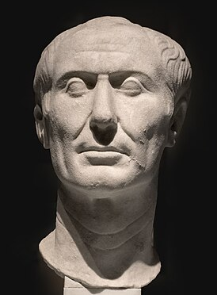

Гай Юлий Цезарь
| Гай Юлий Цезарь | |
|---|---|
| лат. GAIVS IVLIVS CAESAR лат. Divus Julius | |
|  Тускуланский портрет, считающийся единственным сохранившимся прижизненным скульптурным портретом Цезаря[1] | |
| 81 год до н. э. | |
|
квестор Римской республики
|
|
| 69 год до н. э. | |
|
курульный эдил Римской республики
|
|
| 65 год до н. э. | |
|
верховный понтифик Римской республики
|
|
| 63—44 годы до н. э. | |
|
претор Римской республики
|
|
| 62 год до н. э. | |
| 61—60 годы до н. э. | |
|
консул Римской республики
|
|
| 59 год до н. э. | |
| 58—50 годы до н. э. | |
|
диктатор Римской республики
|
|
| 49 год до н. э. | |
|
консул Римской республики
|
|
| 48 год до н. э. | |
|
диктатор Римской республики
|
|
| 48—47 годы до н. э. | |
|
консул Римской республики
|
|
| 46 год до н. э. | |
|
диктатор Римской республики
|
|
| 46—44 годы до н. э. | |
|
консул Римской республики без коллегии
|
|
| с 1 января по 1 октября 45 года до н. э. | |
|
консул Римской республики
|
|
| с 1 января по 15 марта 44 года до н. э. | |
|
пожизненный диктатор Римской республики
|
|
| с февраля по 15 марта 44 года до н. э. | |
|
|
|
| Рождение |
12 июля 100 до н. э. Рим |
| Смерть |
15 марта 44 до н. э. (55 лет) Рим |
| Место погребения | |
| Род | Юлии, Юлии-Клавдии |
| Отец | Гай Юлий Цезарь Старший |
| Мать | Аврелия Котта |
| Супруга |
1) Корнелия (84—69 до н. э.) 2) Помпея (ок. 67—62 до н. э.) 3) Кальпурния (59—44 до н. э.) |
| Дети |
дочь: Юлия (от Корнелии) сын (под сомнением): Птолемей Цезарион (от Клеопатры) |
| Партия | |
| Отношение к религии | древнеримская религия |
| Награды | |
| Звание | военный трибун и император |
| Сражения | |
| Медиафайлы на Викискладе | |
| Произведения в Викитеке | |
Гай Ю́лий Це́зарь (аутентичное произношение близко к Ка́йсар[4]; лат. Gaius Iulius Caesar [ˈgaːjʊs ˈjuːliʊs ˈkae̯sar]; 12 июля 100 года до н. э.[5] — 15 марта 44 года до н. э.) — древнеримский государственный и политический деятель, полководец, писатель. Консул 59, 48, 46, 45 и 44 годов до н. э., диктатор 49, 48—47 и 46—44 годов до н. э., великий понтифик с 63 года до н. э.
Происходивший из древней патрицианской семьи, Цезарь последовательно добивался всех ординарных римских должностей (cursus honorum) и сделал себе имя на борьбе с консервативными сенаторами (оптиматами). В 60 году до н. э. организовал первый триумвират с двумя влиятельными политиками — Гнеем Помпеем Великим и Марком Лицинием Крассом. С 58 года до н. э. более восьми лет провёл на территории современных Швейцарии, Франции, Бельгии, Германии и Великобритании в Галльской войне, присоединив к Римской республике огромную территорию от Атлантического океана до Рейна и снискав славу талантливого полководца. В начале 49 года до н. э. начал гражданскую войну из-за непримиримых разногласий с сенаторами по вопросам о деталях своего возвращения в Рим и о гарантиях судебной неприкосновенности за должностные преступления (подкупы на выборах, взятки должностным лицам, нарушение договоров, насильственные действия и другие нарушения). За четыре года сторонники сената, сгруппировавшиеся вокруг Помпея, были разбиты Цезарем в Италии, Испании (дважды), Греции и Африке, также им были разбиты войска правителей Египта и Понта.
Придерживался «политики милосердия», но в то же время казнил ряд своих ключевых оппонентов. Добившись полной победы над противниками, сконцентрировал в своих руках власть консула и чрезвычайные полномочия диктатора (в конце концов — в виде пожизненной должности), провёл ряд реформ во всех сферах жизни общества. При жизни Цезаря началось его обожествление, почётный титул полководца-победителя «император» стал частью его имени, однако он отказывался от власти древних римских царей. После убийства Цезаря группой сенаторов во главе с Марком Юнием Брутом внучатый племянник Цезаря Гай Октавий принял его имя и получил большую часть наследства по завещанию, став впоследствии первым императором.
К Цезарю по-разному относились при жизни, и эта традиция сохранилась в Римской империи: его имя всячески обелялось сторонниками правителей, а оппозиционеры восхваляли его жертв и заговорщиков. Очень популярной была личность Цезаря в Средние века и Новое время. Помимо политической и военной деятельности, Цезарь известен и как литератор. Из-за простоты и ясности стиля, его сочинения считаются классикой древнеримской литературы и используются при обучении латыни. К имени Юлия Цезаря восходят титулы кайзер и царь, название седьмого месяца года во многих языках мира — июль.
Происхождение и детство[править | править код]
Происхождение[править | править код]
Гай Юлий Цезарь родился в древней патрицианской семье Юлиев. В V—IV веках до н. э. Юлии играли значительную роль в жизни Рима. Из представителей семейства вышли, в частности, один диктатор, один магистр конницы (заместитель диктатора) и один член коллегии децемвиров, разработавших законы Десяти таблиц — первоначальный вариант знаменитых законов Двенадцати таблиц[6]. Подобно большинству семейств с древней историей, Юлии имели общий миф о своём происхождении. Они возводили свой род к богине Венере через Энея. Мифическая версия происхождения Юлиев была хорошо известна уже к 200 году до н. э[7]., и Катон Старший записал версию об этимологии родового имени Юлиев. По его мнению, первый носитель этого имени Юл получил прозвище от греческого слова «ἴουλος» (пушок, первые волосы на щеках и подбородке)[8].
Почти все Юлии в V—IV веках до н. э. носили когномен Юл, который, вероятно, был изначально единственным в их семействе[6]. Ветвь Юлиев Цезарей наверняка происходила от Юлиев Юлов, хотя связующие звенья между ними неизвестны[8]. Первым известным Цезарем был претор 208 года до н. э., упомянутый Титом Ливием[9][10]. Этимология когномена «Caesar» достоверно неизвестна и была забыта уже в римскую эпоху. Элий Спартиан, один из авторов жизнеописаний Августов, записал четыре версии, бытовавшие к IV веку н. э.:
«…самые учёные и образованные люди считают, что тот первый, кто был так наречён, получил это имя от названия слона (который на языке мавров называется цезай), убитого им в битве; [или] потому, что родился от мёртвой матери и был вырезан из её чрева[11]; или потому, что он вышел из лона родительницы уже с длинными волосами[12]; или потому, что он имел такие блестящие серо-голубые глаза[13], каких не бывает у людей»[14].
До настоящего времени достоверная этимология имени неясна, но чаще предполагается происхождение когномена из этрусского языка (aisar — бог; схожее происхождение имеют римские имена Цезий, Цезоний и Цезенний)[15].
К началу I века до н. э. в Риме были известны две ветви Юлиев Цезарей. Они находились друг с другом в достаточно близком, но точно не установленном родстве. Две ветви были зарегистрированы в различных трибах, а к 80-м годам до н. э. они имели и совершенно противоположную политическую ориентацию, ориентируясь на двух враждующих политиков. Ближайшие родственники будущего диктатора ориентировались на Гая Мария (его женой стала Юлия, тётка Гая), а Цезари из другой ветви поддержали Суллу. При этом последняя ветвь играла бо́льшую роль в общественной жизни, чем та, к которой принадлежал Гай[16]. Родственники Гая по линии матери и бабушки не могли похвастаться родством с богами, однако все они относились к элите римского общества — нобилитету. Мать Цезаря — Аврелия — принадлежала к богатой и влиятельной плебейской семье. Род бабушки Гая — Марции — возводил своё происхождение к четвёртому римскому царю Анку Марцию[17].
<= ? => | |||||||||||||||||||||||||||||||||||||||||||||||||||||
| Гай Юлий Цезарь | Марция | Гай Юлий Цезарь Страбон Вописк | Луций Юлий Цезарь | ||||||||||||||||||||||||||||||||||||||||||||||||||
| Секст Юлий Цезарь | Гай Марий | Юлия | Гай Юлий Цезарь | Аврелия | Луций Юлий Цезарь | Юлия | |||||||||||||||||||||||||||||||||||||||||||||||
| Гай Марий | Юлия Старшая | Юлия Младшая | Гай Юлий Цезарь (диктатор) | ||||||||||||||||||||||||||||||||||||||||||||||||||
Дата рождения[править | править код]
Дата рождения Цезаря остаётся предметом дискуссий для исследователей. Свидетельства источников по этому вопросу разнятся. Косвенные указания большинства античных авторов позволяют датировать его рождение 100 годом до н. э.[18][19][20][21], хотя Евтропий упоминает, что во время битвы при Мунде (17 марта 45 года до н. э.) Гаю было 56 лет[22]. В двух важных систематических источниках о жизни диктатора — его биографиях авторства Светония и Плутарха — не сохранилось начало текста с рассказами об обстоятельствах рождения[23].
Причина расхождений в историографии — несоответствие времени занятия Цезарем магистратур известной практике: он занимал все магистратуры раньше обычной последовательности (cursus honorum) примерно на два года[24]. Из-за этого Теодор Моммзен предложил считать датой рождения Цезаря 102 год до н. э.[25] С начала XX века предлагались иные варианты решения несоответствия[26][27][28]. Вызывает дискуссии и день рождения Гая — 12 либо 13 июля. О четвёртом дне перед идами квинтилия (12 июля) упоминает Макробий в «Сатурналиях»[29]. Дион Кассий рассказывает, что после смерти диктатора дату его рождения перенесли с 13 на 12 июля особым указом второго триумвирата[30]. Так, единого мнения о дате рождения Цезаря нет. Годом его рождения чаще всего признаётся 100 год до н. э. (во Франции его чаще относят к 101 году до н. э., как предложил Жером Каркопино[30]). Днём рождения одинаково часто считают 12 или 13 июля.
Детство[править | править код]
Дом, где рос Цезарь, находился в Субуре — районе Рима, имевшем репутацию неблагополучного[31]. В детстве он обучался греческому языку, литературе, риторике на дому. Практиковались физические упражнения, плавание, верховая езда[17]. Среди учителей юного Гая известен крупный ритор Гнифон, бывший также одним из учителей Цицерона[32]. Примерно в 85 году до н. э. Цезарь потерял отца[33]: по сообщению Плиния Старшего, тот умер, наклонившись, чтобы надеть обувь[34]. После смерти отца прошедший обряд инициации Цезарь фактически возглавил всё семейство Юлиев, поскольку все ближайшие родственники-мужчины старше него умерли[35]. Вскоре Гай обручился с Коссуцией, девушкой из богатой семьи из сословия всадников[36] (по другой версии, они успели пожениться; см. раздел «Семья. Личная жизнь»).
Начало политической карьеры[править | править код]
Брак и служба в Азии[править | править код]
В середине 80-х годов до н. э.[коммент. 1] Цинна выдвинул Цезаря на почётную должность фламина Юпитера. Этот жрец был связан множеством сакральных ограничений, серьёзно ограничивавших возможности занятия магистратур. Для вступления в должность ему требовалось сначала жениться старинным обрядом confarreatio на девушке из патрицианской семьи, и Цинна предложил Гаю свою дочь Корнелию[30]. Молодой Юлий согласился, хотя ему пришлось расторгнуть помолвку с Коссуцией. Однако вступление Цезаря в должность ставится под сомнение. По мнению Лили Росс Тейлор, великий понтифик Квинт Муций Сцевола (противник Мария и Цинны) отказался проводить церемонию инаугурации Гая[40]. Эрнст Бэдиан, впрочем, полагает, что Цезарь всё же был введён в должность[30]. Как правило, назначение Цезаря рассматривается в историографии как непреодолимое препятствие на пути его дальнейшей политической карьеры. Впрочем, существует и противоположная точка зрения: занятие столь почётной должности было хорошей возможностью укрепить авторитет древнего рода для этой ветви Цезарей, далеко не все представители которого добивались высшей магистратуры консула[30].
Вскоре после свадьбы с Корнелией Цинну убили взбунтовавшиеся солдаты, а в следующем году началась гражданская война, в которой Цезарь, вероятно, не участвовал[40]. С установлением диктатуры Луция Корнелия Суллы и началом проскрипций жизнь Цезаря оказалась в опасности: диктатор не щадил политических оппонентов и личных врагов, а Гай оказался племянником Гая Мария и зятем Цинны. Сулла потребовал от Цезаря развестись с женой, что не было уникальным случаем доказательства лояльности, однако тот отказался это сделать. В конце концов, Сулла внёс имя Цезаря в проскрипционный список, и он был вынужден покинуть Рим. Источники сообщают, будто Цезарь долго скрывался, раздавая взятки разыскивавшим его сулланцам, но эти рассказы малоправдоподобны. Влиятельные родственники Гая в Риме тем временем сумели добиться помилования для Цезаря. Дополнительным обстоятельством, смягчившим диктатора, стало происхождение Цезаря из сословия патрициев, представителей которого консерватор Сулла ни разу не казнил[38][41].
Вскоре Цезарь покинул Италию и примкнул к свите Марка Минуция Терма, наместника провинции Азия. Имя Цезаря было хорошо известно в этой провинции: около десяти лет назад её наместником был его отец. Гай стал одним из контуберналов Терма — детей сенаторов и молодых всадников, обучавшихся военному делу и провинциальному управлению под надзором действующего магистрата[42]. Сначала Терм поручил молодому патрицию переговоры с царём Вифинии Никомедом IV. Цезарь сумел убедить царя передать в распоряжение Терма часть своего флота, чтобы наместник смог захватить город Митилены на Лесбосе, не признававший итогов Первой Митридатовой войны и сопротивлявшийся римлянам[43]. Пребывание Гая у вифинского царя впоследствии стало источником множества слухов об их сексуальной связи (см. раздел «Семья. Личная жизнь»). После успешного выполнения этого поручения Терм направил войска против Митилен, и вскоре римляне взяли город. После битвы Цезарь был удостоен гражданской короны (лат. corona civica) — почётной военной награды, которая полагалась за спасение жизни римского гражданина[коммент. 2]. После взятия Митилен кампания на Лесбосе завершилась[44]. Вскоре Терм сложил полномочия, и Цезарь отправился в Киликию к её наместнику Публию Сервилию Ватии, организовывавшему военную кампанию против пиратов. Однако когда в 78 году до н. э. из Италии пришли известия о смерти Суллы, Цезарь немедленно вернулся в Рим[45].
Возвращение в Рим и участие в политической борьбе[править | править код]
В 78 году до н. э. консул Марк Эмилий Лепид попытался поднять мятеж среди италиков с целью отмены законов Суллы. По сообщению Светония, Лепид приглашал Цезаря присоединиться к мятежу, но Гай отказался[46]. В 77 году до н. э. Цезарь привлёк к суду сулланца Гнея Корнелия Долабеллу по обвинению в вымогательствах во время наместничества в Македонии. Долабелла был оправдан после того, как в его поддержку выступили крупнейшие судебные ораторы. Произнесённая Цезарем обвинительная речь оказалась настолько удачной, что ещё долго распространялась в рукописных копиях. В следующем году Гай начал судебное преследование другого сулланца, Гая Антония Гибриды, однако тот запросил защиту у народных трибунов, и суд не состоялся[46].
Вскоре после неудачи процесса над Антонием, Цезарь отправился совершенствовать своё ораторское мастерство на Родос к известному ритору Аполлонию Молону — наставнику Цицерона[46]. Во время путешествия Цезаря захватили в плен киликийские пираты, давно промышлявшие в Восточном Средиземноморье. Его удерживали на небольшом острове Фармакусса (Фармакониси) в Додеканесском архипелаге[46]. Пираты потребовали крупный выкуп в 50 талантов (300 тысяч римских денариев). Версия Плутарха, будто Цезарь по собственной инициативе увеличил сумму выкупа с 20 талантов до 50, наверняка неправдоподобна[47]. Античные авторы красочно описывают пребывание Гая на острове: якобы он шутил с похитителями и декламировал им поэмы собственного сочинения[48]. После того, как послы городов Азии выкупили Цезаря, он немедленно снарядил эскадру для пленения самих пиратов, что ему удалось сделать. Захватив своих похитителей, Гай просил нового наместника Азии Марка Юнка судить и наказать их, но тот отказался. После этого Гай сам организовал казнь пиратов — они были распяты на крестах[49]. Светоний добавляет некоторые подробности казни как иллюстрацию мягкости характера Цезаря: «Пиратам, у которых он был в плену, он поклялся, что они у него умрут на кресте, но когда он их захватил, то приказал сперва их заколоть и лишь потом распять»[50]. Во время повторного пребывания на Востоке Цезарь ещё раз посетил вифинского царя Никомеда[16]. Он также участвовал в самом начале Третьей Митридатовой войны во главе отдельного вспомогательного отряда, но вскоре покинул зону боевых действий и вернулся в Рим примерно в 74 году до н. э. В следующем году его кооптировали в жреческую коллегию понтификов вместо умершего дяди Гая Аврелия Котты[49][51][52].
Вскоре Цезарь побеждает на выборах в военные трибуны[коммент. 3]. Точная дата его трибуната неизвестна: часто предлагается 73 год, но более вероятна датировка 72-м[52] или 71-м годом до н. э[49][53]. Из других источников известно, что в это время в Греции под командованием Марка Антония Кретика служил некий Гай Юлий, нередко отождествляемый с Цезарем, но более вероятно, что это были два разных человека[коммент. 4]. Чем занимался Цезарь в этот период, достоверно неизвестно. Высказывается предположение, что Цезарь мог быть задействован в подавлении восстания Спартака — если не в боевых действиях, то по крайней мере в подготовке новобранцев[49][54]. Высказывается и предположение, что именно при подавлении восстания Цезарь близко сошёлся с Марком Лицинием Крассом, в будущем сыгравшим немалую роль в карьере Гая[54].

В начале 69 года до н. э. почти одновременно умирают Корнелия, жена Цезаря, и его тётя Юлия. На их похоронах Гай произнёс две речи, привлёкшие внимание современников. Во-первых, публичные выступления в память об умерших женщинах практиковались лишь с конца II века до н. э., но и в них обычно вспоминали пожилых матрон, но не молодых женщин. Во-вторых, в речи в честь тёти он напомнил о её замужестве за Гаем Марием и показал народу его восковой бюст. Вероятно, похороны Юлии стали первой публичной демонстрацией изображения генерала с начала диктатуры Суллы, когда Мария фактически предали забвению[55][56]. В том же году Цезарь становится квестором, что гарантировало ему место в сенате[52][56][57][58]. Обязанности квестора Цезарь исполнял в провинции Дальняя Испания. Детали его миссии неизвестны, хотя обычно квестор в провинции занимался финансовыми вопросами. По всей видимости, Гай сопровождал наместника Гая Антистия Вета в поездках по провинции, выполняя его поручения. Вероятно, именно во время квестуры он познакомился с Луцием Корнелием Бальбом, впоследствии ставшим ближайшим соратником Цезаря[55].
Вскоре после возвращения из провинции Гай женился на Помпее, внучке Суллы (она не была близкой родственницей влиятельного в те годы Гнея Помпея Великого). Тогда же Цезарь начал открыто склоняться к поддержке Гнея Помпея: в частности, он был едва ли не единственным сенатором, кто поддержал закон Габиния о передаче Гнею чрезвычайных полномочий в борьбе с пиратами[59]. Поддержал Цезарь и закон Манилия о предоставлении нового командования Помпею, хотя здесь он уже не был в одиночестве[60]. В 66 году до н. э. Цезарь стал смотрителем Аппиевой дороги[61] и отремонтировал её за свой счёт[62] (по другой версии, ремонтом дороги он занимался в 65 году до н. э., будучи эдилом[63]). В те годы главным кредитором молодого политика, не скупившегося на траты, был, вероятно, Красс[64].
Эдилитет. Председательство в суде[править | править код]
В 66 году до н. э. Цезаря избирают курульным эдилом на следующий год, в чьи обязанности входила организация городского строительства, транспорта, торговли, повседневной жизни Рима и торжественных мероприятий (как правило, за собственный счёт). В апреле 65 года до н. э. новый эдил организовал и провёл Мегалезийские игры, а в сентябре — Римские игры, которые своей роскошью удивили даже искушённых в развлечениях римлян. Затраты на оба мероприятия Цезарь разделил поровну со своим коллегой Марком Кальпурнием Бибулом, но всю славу получил только Гай[63][65]. Первоначально Цезарь планировал показать на Римских играх рекордное число гладиаторов (по другой версии, гладиаторские бои были устроены им в память о своём отце[66]), но сенат, опасаясь бунта множества вооружённых рабов, издал специальный указ, запрещавший одному человеку приводить в Рим больше определённого числа гладиаторов[65][67]. Юлий подчинился ограничениям на количество гладиаторов, но выдал каждому из них серебряные доспехи, благодаря чему его гладиаторские бои всё равно запомнились римлянам[63]. Кроме того, эдил преодолел сопротивление консервативных сенаторов и восстановил все трофеи Гая Мария, демонстрация которых была запрещена ещё Суллой[63][64].
В 64 году до н. э. Цезарь возглавлял постоянный уголовный суд по делам о разбоях, сопровождавшихся убийством (quaestio de sicariis). В судах под его председательством было осуждено немало участников проскрипций Суллы, хотя этот диктатор издал закон, не позволявший вести уголовное преследование против них. Несмотря на активную деятельность Цезаря по осуждению соучастников диктатора, активный исполнитель убийств проскрибированных Луций Сергий Катилина оказался полностью оправдан и смог выдвинуть свою кандидатуру в консулы на следующий год[68][69][70]. Инициатором значительной части судебных процессов, однако, выступал оппонент Цезаря, Марк Порций Катон Младший[71].
Выборы великого понтифика[править | править код]
В начале 63 года до н. э. умер великий понтифик Квинт Цецилий Метелл Пий, и высшая должность в системе римских религиозных магистратур стала вакантной. В конце 80-х годов до н. э. Луций Корнелий Сулла вернул древний обычай кооптации верховных жрецов коллегией понтификов, однако незадолго до новых выборов Тит Лабиен вернул процедуру избрания великого понтифика с помощью голосования в 17 трибах из 35. Цезарь выставил свою кандидатуру; альтернативными кандидатами были Квинт Лутаций Катул Капитолин и Публий Сервилий Ватия Исаврик[72]. Античные историки сообщают о многочисленных подкупах во время выборов, из-за которых долги Гая сильно выросли[73]. Поскольку трибы, которые голосовали, определялись жребием непосредственно перед выборами, Цезарь был вынужден подкупать представителей всех 35 триб[72]. Кредиторы Гая с пониманием относились к тратам на престижную, но неприбыльную должность: успешное избрание свидетельствовало о его популярности в преддверии выборов преторов и консулов[74]. По преданию, уходя из дома перед оглашением результатов, он сказал своей матери «или я вернусь понтификом, или совсем не вернусь»[75]; по другой версии: «Сегодня, мать, ты увидишь своего сына либо верховным жрецом, либо изгнанником»[76]. Голосование состоялось, по разным версиям, или 6 марта[77], или в конце года[74], и Цезарь победил. По версии Светония, его преимущество над оппонентами оказалось огромным[76].
Избрание Юлия пожизненным великим понтификом привлекло к нему всеобщее внимание и почти наверняка гарантировало успешную политическую карьеру. В отличие от фламина Юпитера, великий понтифик мог участвовать и в гражданской, и в военной деятельности без серьёзных сакральных ограничений[коммент. 5]. Хотя обычно великими понтификами избирались люди, бывшие консулами (консуляры), в римской истории были известны и случаи, когда эту почётную должность занимали сравнительно молодые люди. Таким образом, Цезаря не могли обвинить в том, что великим понтификом он стал только из-за непомерных амбиций[78]. Сразу же после избрания Цезарь воспользовался правом проживания в государственном доме великого понтифика и переехал из Субуры в самый центр города, на Священную дорогу[73][74].
Позднее в 63 году до н. э. Цезарь участвовал в двух громких судебных процессах. Сначала он выступил в качестве свидетеля на стороне обвинения против Гая Кальпурния Пизона в деле о вымогательствах в провинции (quaestio de repetundis), но того оправдали. Вскоре (по другой версии, уже в следующем году[79]) Цезарь защищал знатного нумидийца Масинту, но вновь проиграл. Процесс получил скандальную известность из-за того, что Гай в пылу судебных споров схватил наследника нумидийского престола Юбу (будущего царя Юбу I) за бороду. Неясно, зачем Цезарь нанёс оскорбление влиятельному царевичу: это могла быть как спонтанная вспышка гнева, так и тщательно рассчитанная акция, использовавшая ксенофобские настроения римского плебса[80]. После вынесения обвинительного приговора Гай укрывал Масинту и сумел вывезти его в Испанию, что показало окружающим надёжность Цезаря как патрона, готового защищать своих клиентов любой ценой[81][82]. Наконец, с именем Цезаря связывают начало суда над Рабирием: по мнению С. Л. Утченко, за Титом Лабиеном, выдвинувшим обвинение, был именно Юлий[81].
Цезарь и Катилина[править | править код]
В 65 году до н. э., согласно некоторым противоречивым свидетельствам античных историков, Цезарь участвовал в неудачном заговоре Луция Сергия Катилины с целью захвата власти. Впрочем, вопрос о «первом заговоре Катилины» остаётся проблемным. Свидетельства источников разнятся[83], что даёт основания некоторым исследователям и вовсе отрицать существование «первого заговора»[84]. Слухи об участии Цезаря в первом заговоре Катилины, если он существовал, распространились противниками Красса и Цезаря уже в 50-е годы до н. э. и наверняка не соответствуют действительности[85]. Ричард Биллоуз полагает, что распространение слухов о «первом заговоре» было выгодно Цицерону, а затем и политическим оппонентам Цезаря[84].
В 63 году до н. э., после своего провала на выборах консулов, Катилина предпринял новую, более известную попытку захвата власти. О возможной причастности Цезаря к заговору спорили ещё в античную эпоху, однако надёжные свидетельства так и не были предоставлены. В дни кульминации кризиса Катул и Пизон требовали от Цицерона арестовать Цезаря за соучастие в заговоре, но безуспешно[86]. По мнению Эдриана Голдсуорси, к 63 году до н. э. Цезарь мог рассчитывать на легальные способы занятия новых должностей и не был заинтересован в участии в заговоре[87].
«Когда победитель Сулла приказал удавить Дамасиппа и других ему подобных людей, возвысившихся на несчастьях государства, кто не восхвалял его поступка? Все говорили, что преступные и властолюбивые люди, которые мятежами своими потрясли государство, казнены заслуженно. Но именно это и было началом большого бедствия: стоило кому-нибудь пожелать чей-то дом, или усадьбу, или просто утварь, либо одежду, как он уже старался, чтобы владелец оказался в проскрипционном списке. И вот тех, кого обрадовала смерть Дамасиппа, вскоре самих начали хватать, и казни прекратились только после того, как Сулла щедро наградил всех своих сторонников»[88].
3 декабря 63 года до н. э. Цицерон представил доказательства опасности заговора, и на следующий день ряд заговорщиков объявили государственными преступниками. 5 декабря в сенате, собравшемся в храме Согласия, обсуждалась мера пресечения для заговорщиков: в чрезвычайных обстоятельствах было решено действовать без санкции суда. Децим Юний Силан, избранный консулом на следующий год, выступил за смертную казнь — наказание, применявшееся к римским гражданам в редчайших случаях. Его предложение было встречено с одобрением. Следующим выступил Цезарь. Его речь в сенате, записанная Саллюстием, наверняка основывается на реальном выступлении Юлия. В варианте речи у Саллюстия содержится как распространённая апелляция к римским обычаям и традициям, так и необычное предложение приговорить заговорщиков к пожизненному заключению — почти не применявшемуся в Риме наказанию — с конфискацией имущества. После Цезаря выступил Цицерон, возражавший против предложения Гая (отредактированная запись его четвёртой речи против Катилины сохранилась)[89]. Впрочем, после выступления действующего консула многие по-прежнему склонялись к предложению Юлия, но слово взял Марк Порций Катон Младший, решительно выступил против инициативы Цезаря. Катон также намекнул на причастность Цезаря к заговору и упрекнул колеблющихся сенаторов в недостатке решимости, после чего сенат проголосовал за предание заговорщиков смертной казни[90][91]. Поскольку заседание 5 декабря проходило при открытых дверях, внимательно слушавшие снаружи люди бурно реагировали на выступление Катона, включая его намёк на связи Цезаря с заговорщиками, а после окончания заседания они провожали Гая угрозами[92].
Претура. Создание первого триумвирата (62—60 годы до н. э.)[править | править код]
Претура[править | править код]
Едва вступив в должность претора 1 января 62 года до н. э., Цезарь воспользовался правом законодательной инициативы магистрата и предложил народному собранию передать полномочия по восстановлению храма Юпитера Капитолийского от Квинта Лутация Катула Гнею Помпею. Катул занимался восстановлением этого храма около 15 лет и почти завершил работу, но в случае принятия этого предложения в посвятительной надписи на фронтоне этого важнейшего святилища Рима было бы упомянуто имя Помпея, а не Катула, влиятельного оппонента Цезаря. Гай также обвинил Катула в хищении государственных средств и потребовал отчитаться о расходах[93]. После протеста сенаторов претор отозвал свой законопроект[94].
Когда 3 января трибун Квинт Цецилий Метелл Непот предложил отозвать Помпея в Рим для разгрома отрядов Катилины, Гай поддержал это предложение[94][95], хотя войска заговорщиков уже были окружены и обречены на поражение. По-видимому, Непот — шурин Гнея — надеялся своим предложением дать возможность Помпею прибыть в Италию, не распуская свои войска[96]. После спровоцированной Непотом массовой драки на форуме решительно настроенный сенат принял чрезвычайный закон об отстранении Непота и Цезаря от должностей[94], однако через несколько дней Гая восстановили[95].
Осенью на суде над участником заговора Катилины Луцием Веттием обвиняемый заявил судье, что располагает доказательством причастности Цезаря к заговору — его письмом к Катилине. Кроме того, на допросе в сенате свидетель Квинт Курий заявил, что слышал лично от Катилины об участии Цезаря в подготовке мятежа. Впрочем, Цицерон по просьбе Гая засвидетельствовал, что он сообщил консулу всё, что знал о заговоре, и тем самым лишил Курия награды за информацию и опроверг его показания. Против первого обвинителя Цезарь действовал весьма решительно, арестовав и Веттия (он не явился на очередное заседание и не представил доказательства вины претора), и судью Новия Нигера (он принял донос на старшего магистрата)[97][98].
В декабре 62 года до н. э. в новом доме Цезаря проводился праздник в честь Доброй Богини с участием одних лишь женщин, но он был прерван после того, как в дом тайно проник мужчина — Публий Клодий Пульхр. Сенаторы, узнав о происшествии, постановили считать случившееся святотатством, а также потребовали проведения праздника заново и наказания виновных. Последнее означало неизбежную публичную огласку личной жизни Цезаря, поскольку ходили слухи, что Клодий прибыл в дом Цезаря в женском платье именно за его женой[99]. Не дожидаясь суда, понтифик развёлся с Помпеей Суллой. Судебный процесс состоялся уже в следующем году, и Клодия оправдали, поскольку Цезарь отказался свидетельствовать против него. Эдриан Голдсуорси полагает, что у Помпеи действительно был роман с Клодием, но Цезарь всё же не решился свидетельствовать против быстро набирающего популярность политика[100]. Кроме того, большинство судей в коллегии проголосовало табличками с неразборчивыми надписями[коммент. 6], не желая навлекать на себя гнев сторонников и противников Клодия. Во время суда, когда Цезаря спросили, почему он развёлся с женой, если он ничего не знает о случившемся, он якобы ответил, что жена Цезаря должна быть вне подозрений (различные источники приводят различные варианты этой фразы[50][102])[103][104]. По мнению Майкла Гранта, Цезарь имел в виду, что должна быть вне подозрения жена великого понтифика — верховного жреца Рима[105]. Британский историк указывает и на другую возможную причину, ускорившую развод — отсутствие детей за несколько лет брака[106].
Наместник Дальней Испании[править | править код]
В начале 61 года до н. э. Цезарь должен был отправиться в провинцию Дальняя Испания, самую западную в Римской республике, чтобы управлять ею в должности пропретора, но многочисленные кредиторы следили, чтобы он не покидал Рим, не расплатившись с огромными долгами. Тем не менее, Красс поручился за Цезаря суммой в 830 талантов[103], хотя едва ли эта огромная сумма покрывала все долги наместника[107][коммент. 7]. Благодаря Крассу Гай отправился в провинцию ещё до окончания суда над Клодием[109]. По пути в Испанию Цезарь якобы сказал, проезжая через глухую деревушку, что «предпочёл бы быть первым здесь, чем вторым в Риме»[110][111] (по другой версии, эта фраза была произнесена уже по пути из Испании в Рим[112]).
К моменту прибытия Цезаря в слаборазвитых северной и северо-восточной частях провинции было сильно недовольство римской властью и большими долгами. Цезарь немедленно набрал ополчение из местных жителей для подчинения недовольных регионов, что преподносилось как истребление бандитов[113][114]. По свидетельству Диона Кассия, благодаря военной кампании Цезарь надеялся своими победами сравняться с Помпеем, хотя установить прочный мир можно было и без военных действий[115]. Имея в распоряжении 30 когорт (около 12 тысяч солдат), он подошёл к Герминийским горам (современный хребет Серра-да-Эштрела) и потребовал от местных племён поселиться на равнинной территории, чтобы лишить их возможности использовать свои укрепления в горах в случае восстания. Дион Кассий полагает, что Цезарь с самого начала надеялся на отказ, поскольку рассчитывал использовать этот ответ в качестве мотива для нападения[115]. После того, как горные племена отказались подчиниться, войска наместника напали на них и вынудили отступить к Атлантическому океану, откуда горцы переплыли на острова Берленга. Цезарь приказал нескольким отрядам переправиться на острова на небольших плотах, но лузитаны перебили весь римский десант. После этой неудачи Гай вызвал флот из Гадеса и с его помощью переправил на острова крупные силы. Пока полководец покорял горных лузитанов на побережье Атлантического океана, соседи изгнанных племён начали подготовку к отражению возможного нападения наместника. Всё лето пропретор подчинял разрозненных лузитанов, взяв штурмом ряд поселений и выиграв одно достаточно крупное сражение[113][114][116]. Вскоре Цезарь покинул пределы провинции и направился в Бриганцию (современная Ла-Корунья), быстро захватив город с окрестностями[116][117]. В конце концов, войска объявили его императором, что в терминологии середины I века до н. э. означало признание победоносным полководцем[114]. Уже тогда Цезарь проявил себя решительным полководцем, способным оперативно перемещать свои войска[118].
Завершив свой поход, Цезарь обратился к решению повседневных проблем провинции. Его энергичная деятельность в административной сфере проявилась в пересмотре налогообложения и в разборе судебных дел[103]. В частности, наместник отменил налог, введённый как наказание за поддержку лузитанами Квинта Сертория в недавней войне. Кроме того, он постановил, что кредиторы не могли взыскивать с должников больше двух третей их годового дохода. В условиях сложной ситуации с выплатой ссуд и процентов жителями провинции подобная мера оказалась выгодна и для заёмщиков, и для кредиторов, поскольку Цезарь всё же подтвердил необходимость обязательного погашения всех долгов[114]. Наконец, Цезарь, возможно, запретил человеческие жертвоприношения, практиковавшиеся в провинции[112].
Некоторые источники утверждают, что наместник вымогал деньги у состоятельных жителей провинции и обирал нейтральные племена, но эти свидетельства наверняка основаны только на слухах. Ричард Биллоуз полагает, что если бы Цезарь на самом деле открыто грабил провинцию, политические оппоненты немедленно привлекли бы его к суду после возвращения в Рим. На деле же не последовало ни судебного преследования, ни даже намёков на его начало, что свидетельствует как минимум об осторожности Цезаря. Римское законодательство I века до н. э. предусматривало ответственность наместника за вымогательство, однако не устанавливало чётких границ между подарком и взяткой, и потому достаточно осторожные действия могли не квалифицироваться как взяточничество. Цезарь же мог рассчитывать на солидные подношения, поскольку жители провинции (особенно богатого юга) видели в молодом аристократе потенциально влиятельного патрона — защитника их интересов в Риме[119]. Чрезвычайно энергичная защита Масинты (см. раздел «Выборы великого понтифика») показывала им, что Цезарь пойдёт на всё ради защиты своих клиентов[81]. По-видимому, наибольший доход Цезарь получил именно от гражданской деятельности в южной части провинции, поскольку основные военные действия велись в нищих северных и северо-восточных районах Дальней Испании, в которых едва ли можно было обогатиться[107]. После наместничества в провинции Цезарь существенно поправил своё финансовое положение, и кредиторы больше его не беспокоили[120]. Вероятно, Гай не выплатил все долги, но доказал, что способен погашать кредиты благодаря занятию новых должностей. Вследствие этого заимодавцы могли временно прекратить тревожить Цезаря, рассчитывая на новое, более выгодное назначение, что впоследствии попытались использовать противники Гая (см. раздел «Возвращение в Рим. Создание первого триумвирата»).
В начале 60 года до н. э. Цезарь принял решение вернуться в Рим[117], не дожидаясь своего преемника[121]. Досрочное завершение полномочий наместника с делегированием полномочий младшему магистрату (вероятно, квестору) считалось необычным, но иногда практиковалось[112].
Возвращение в Рим. Создание первого триумвирата[править | править код]
Получив донесения о победах Цезаря, сенат счёл его достойным триумфа. Помимо этого почётного торжества, летом 60 года до н. э. Цезарь надеялся принять участие в выборах консулов на следующий год, поскольку он достиг минимального возраста для занятия новой должности и прошёл все предыдущие магистратуры в системе cursus honorum[122]. Однако претендент на триумф не имел права пересекать священные границы города (померий) до начала мероприятия, а для регистрации кандидата в консулы требовалось личное присутствие в Риме[123]. Поскольку дата выборов была уже установлена[124], Цезарь запросил сенаторов предоставить ему право на заочную регистрацию. Прецедент подобного решения в римской истории уже был: в 71 году до н. э. сенат позволил выставить свою кандидатуру Гнею Помпею, также готовившему триумф[125].
Оппоненты Цезаря не были настроены идти ему навстречу. Поставив Гая перед выбором между триумфом и консульством, они, возможно, надеялись на выбор Цезарем триумфа, рассчитывая, что кредиторы Гая не будут ждать ещё один год, а потребуют свои деньги немедленно[126]. Впрочем, у Цезаря была и другая причина не откладывать участие в выборах до следующего года: избрание на новую должность в «свой год» (лат. suo anno), то есть в первый год, когда это было допустимо по закону, считалось особенно почётным[127]. На последнем заседании сената перед выборами, когда ещё было возможно принять особое разрешение, Катон взял слово и держал речь весь день, до самого закрытия заседания. Таким образом, особого разрешения Цезарь не получил[128], и он вошёл в город, сделав выбор в пользу занятия новой должности и отказавшись от триумфа[129].
.jpg?uselang=ru)
К лету 60 года до н. э. Цезарь договорился о сотрудничестве с богатым и образованным, но малоизвестным публике римлянином Луцием Лукцеем, также выставившему свою кандидатуру[124]. По словам Светония, «они договорились, что Лукцей будет обещать центуриям собственные деньги от имени обоих». Римский автор упоминает, что с одобрения сенаторов подкупал избирателей и его соперник Бибул: его тесть Катон называл это «подкупом в интересах государства»[130]. Как правило, в каждой трибе или центурии была группа людей (раздатчики — divisores), занимавшихся организацией подкупов: они раздавали деньги отдельным избирателям и инструктировали их отдавать голоса за нужного кандидата[131]. Нередко раздачи осуществлялись через культовые братства (лат. sodales, sodalitates)[132]. Многочисленные нарушения процедуры выборов магистратов привели к появлению уже во II веке до н. э. специальных законов (лат. leges de ambitu), регламентировавших отдельные детали предвыборной кампании. Виновные стали подлежать сначала десятилетнему отлучению от участия в выборах, а затем и едва ли не самой серьёзной мере наказания в мирное время — изгнанию, сопровождавшемуся конфискацией имущества. Тем не менее, между 67 и 50 годами до н. э. различные виды подкупов избирателей стали практиковаться ежегодно, так что на время избирательной кампании из-за огромного спроса на наличные деньги ростовщики повышали ставки по кредитам вдвое, с 4 % до 8 % годовых[132]. По итогам выборов консулами на 59 год до н. э. стали Цезарь и Бибул.
Примерно в это же время Цезарь вступил в тайные переговоры с Помпеем и Крассом о создании политического союза: в обмен на поддержку Гая двумя самыми влиятельными и богатыми римлянами новый консул взял обязательство провести несколько законов в их интересах, которые ранее блокировались сенатом. Дело в том, что Помпей, вернувшийся с Третьей Митридатовой войны ещё в 62 году до н. э., до сих пор не добился ратификации всех распоряжений, сделанных в восточных провинциях. Он также не мог преодолеть сопротивление сената в вопросе о предоставлении земельных наделов ветеранам его армии. Причины для недовольства сенатом были и у Красса, защищавшего интересы публиканов (откупщиков налогов), безуспешно просивших снизить сумму откупа для провинции Азия. Благодаря объединению вокруг Цезаря оба политика надеялись преодолеть сопротивление сенаторов и провести выгодные для себя законы[133][134]. Неясно, что получал от союза Цезарь. Бесспорно, ему было выгодно уже само сближение с двумя влиятельными политиками и их не менее высокопоставленными друзьями, клиентами и родственниками[133]. Существует версия, что при организации триумвирата Цезарь вынашивал планы захвата власти с его помощью (подобную точку зрения разделяли, в частности, Теодор Моммзен и Жером Каркопино). Н. А. Машкин критикует подобный подход как основанный на последующих событиях и предполагает, что изначально объединение задумывалось как краткосрочное, но изменение ситуации сплотило участников триумвирата и превратило их союз в долговременный[135]; подобную точку зрения полностью разделял С. Л. Утченко, также отмечавший, что союз имел ещё и ярко выраженную антисенатскую направленность[136]. Наконец, Эрик Грюн предположил, что с помощью триумвирата Цезарь надеялся осуществить собственную программу широких реформ[133].
Несмотря на то, что Помпей и Красс давно враждовали и даже препятствовали проведению законов в интересах друг друга[133], Цезарю удалось примирить их[137]. Светоний утверждает, что сперва Цезарь вступил в союз с Помпеем[130], однако Кристиан Мейер полагает, что сначала он договорился о сотрудничестве с более близким ему Крассом[138]. Не исключено, что планировалось включение в политический союз и четвёртого члена — Цицерона[133]. Объединение трёх политиков известно в настоящее время как первый триумвират (лат. triumviratus — «союз трёх мужей»), однако этот термин возник по аналогии с более поздним вторым триумвиратом, члены которого официально именовались триумвирами[135][139]. Точная дата создания триумвирата неизвестна, что является следствием его тайного характера (см. Первый триумвират#Образование триумвирата). Вслед за противоречивыми версиями античных писателей различные версии предлагают и современные историки: июль-август 60 года до н. э.[140], период незадолго до выборов или вскоре после их проведения[141], после выборов[139][142] или 59 год до н. э. (в окончательном виде)[133].
Консульство (59 год до н. э.)[править | править код]
В самом начале консульства Гай приказал ежедневно обнародовать протоколы заседаний сената и народного собрания[143]: по-видимому, это было сделано для того, чтобы граждане могли отслеживать действия политиков[144]. В первые дни января Гай огласил в сенате и свой проект аграрного закона. Вероятно, такая поспешность была вызвана желанием провести новое постановление до конца месяца, пока Цезарь был главным из двух консулов. Между первым оглашением законопроекта и голосованием по нему, по римским законам, должно было пройти три нундины (лат. nundinae — базарные дни) — по разным версиям, 17 или 24 дня, в течение которых с проектом постановления могли ознакомиться все римляне. Законопроект Гая был весьма умеренным. Прежде всего, не планировалось проводить конфискации у крупных землевладельцев (незанятой земли в Италии оставалось немного), а участки должны были выкупаться только у тех, кто желал продать землю. Деньги на это мероприятие Цезарь намеревался получить от налогов с территорий, присоединённых Помпеем. Для предотвращения спекуляций семьи, получившие землю, не могли продавать её в течение 20 лет. Воспользоваться законом Цезаря могли не только ветераны Помпея, но и городская беднота (пролетариат). Для контроля за разделами земли создавалась комиссия из двадцати человек, в которую вошли, в частности, Помпей и Красс[145][146]. Первыми сенаторами, к которым обратился Гай при обсуждении данного вопроса, стали как раз Помпей и Красс. Поддержка предложения этими уважаемыми и влиятельными политиками предопределила благожелательное отношение большинства остальных сенаторов к законопроекту[147]. Впрочем, сторонники Катона решительно возражали против инициативы Цезаря, а второй консул Бибул указывал, что организация голосования незаконна из-за неблагоприятных небесных знамений[148]. Перед голосованием по аграрному закону в народном собрании обстановка в Риме была очень сложной, и сторонники принятия закона подрались с противниками[149]; по сообщению Плутарха, «по пути к форуму на голову Бибулу вывернули корзину навоза, затем напали на его ликторов и изломали им розги, и, наконец, полетели камни и дротики, многие были ранены, а все остальные опрометью бежали с форума»[150]. Несмотря на сопротивление Бибула и ряда сенаторов во главе с Катоном, опасавшихся дальнейшего роста популярности Цезаря, предложение было принято в народном собрании[144].
Впрочем, потребности в земле для нуждающихся были очень велики, а крупные землевладельцы неохотно продавали участки государству. Для удовлетворения спроса на землю Цезарь предложил ввести в оборот большой участок в Кампании, остававшийся в государственной собственности[145]. Приоритет в распределении земли на этом участке был отдан многодетным семьям с тремя и более детьми, которых оказалось более 20 тысяч[148]. Катон попытался сорвать принятие нового закона очередной обструкцией[коммент. 8], но был решительно остановлен консулом:
«Цезарь приказал прямо с ораторского возвышения отвести его [Катона] в тюрьму, но и тут Катон не пал духом, не умолк, — напротив, по дороге в тюрьму он продолжал говорить о новом законе, призывая римлян обуздать тех, кто вершит дела государства подобным образом»[152][коммент. 9].
В конце концов, закон был принят[148].
Вскоре после нападений на форуме второй консул Бибул заявил об угрозе своей жизни и заперся в доме, ограничив участие в политике изданием эдиктов[143][153]. В них второй консул указывал на неблагоприятные небесные знамения, которые якобы сопровождали голосования по законам Цезаря[148]. По римской традиции, народные собрания не могли созываться вопреки воле богов, которая выражалась в том числе в небесных знамениях. На этих основаниях Бибул ставил под сомнение законность процедур, с помощью которых Цезарь проводил свои законы. Впрочем, для знатоков права разрешение вопроса о легитимности народных собраний и принятых ими законов представляло очень сложную юридическую проблему[154]. Помимо апелляции к нарушению формальных процедур, второй консул распространял скандальные подробности о личной жизни Цезаря и Помпея[155]. Эдикты Бибула выставлялись для всеобщего обозрения и пользовались большой популярностью: по словам Цицерона, «через то место, где они выставляются, нельзя пройти из-за скопления людей, которые их читают»[156]. В этих тщательно продуманных эдиктах содержалось очень много недостоверной информации, и они стали источником ряда слухов и сплетен про Цезаря[157].
В рамках договорённостей о создании триумвирата Цезарь добился принятия законов об утверждении распоряжений Помпея на Востоке и о пересмотре системы налогообложения в провинции Азия: сумма, вносимая откупщиками[коммент. 10], снижалась на одну треть, и они могли получать значительно бо́льшую прибыль с провинции[158][159]. Против первого указа выступал Лукулл, предшественник Помпея по командованию в Третьей Митридатовой войне, однако Гай пригрозил засудить его, и полководец, по словам Светония, бросился к ногам консула[143][148]. Ещё одним законом Цезаря стало проведение через народное собрание закона о вымогательстве и взяточничестве наместников (lex Iulia repetundarum, или lex Iulia de rebus repetundis). Этот указ чрезвычайно подробно описывал сферы ответственности римских наместников и легатов. Благодаря своей доскональности закон действовал ещё долгое время и часто цитировался юристами императорской эпохи. В отличие от предыдущего законодательства Гая этот указ не встретил сопротивления при принятии[158]. Ричард Биллоуз, однако, полагает, что закон о вымогательстве в основном лишь систематизировал нормы прежних законов[160]. Кроме того, Майкл Грант обращает внимание, что закон регламентировал деятельность магистратов, но по-прежнему игнорировал самоуправство откупщиков налогов[161]. Наконец, Цезарь от имени Римской республики признал Птолемея XII Авлета фараоном Египта, что было равносильно отказу от притязаний на Египет с использованием широко известного в Риме завещания (наверняка подложного) Птолемея XI Александра II. Согласно этому документу, Египет должен был перейти под власть Рима, подобно тому, как по завещанию Аттала III к Римской республике отошло Пергамское царство[162][163]. Античные историки сообщают, что вопрос был улажен за огромную взятку, которую разделили между собой триумвиры[164].
Годом ранее сенат постановил, что консулы 59 года до н. э. в качестве наместников будут управлять «лесами и тропами»[коммент. 11]. Современные исследователи по-разному понимают это назначение, хотя сходятся на его незначительности[165][166][167][168]. Такое назначение не могло удовлетворить Цезаря и его кредиторов, ожидавших, что с помощью грабежа провинции перспективный политик рассчитывается с долгами. Весной 59 года до н. э. плебейский трибун Публий Ватиний, сторонник Цезаря, предложил передать Гаю право управления провинциями Цизальпийская Галлия и Иллирик, а также тремя легионами на пять лет вместо традиционного одного года, что было беспрецедентной мерой. Принятие нового закона аннулировало прежнее назначение Цезаря на silvae callesque. По-видимому, Цезарь надеялся заручиться поддержкой населения Цизальпийской Галлии, щедро раздавая права римского гражданства, а из Иллирика Гай, возможно, надеялся начать поход вглубь Балканского полуострова[169][170]. Вскоре умер наместник Трансальпийской (Нарбонской) Галлии Квинт Цецилий Метелл Целер, и Помпей предложил поручить управление этой провинцией Цезарю вместе с одним дополнительным легионом. Возможно, Помпей руководствовался соображениями о необходимости объединения Цизальпийской и Трансальпийской провинций под командованием одного полководца в весьма вероятной войне в Галлии: во время Кимврской войны полувековой давности в этом же регионе отсутствие единого командования на первом этапе войны привело к чувствительным для Рима поражениям[171]. Новую провинцию Цезарю добавил сенат, собравшийся в неполном составе (многие его члены продолжали игнорировать заседания)[172].
Последовательность и точные даты проведения законов Цезаря реконструируются по-разному, что вызвано отсутствием абсолютной хронологической привязки в источниках при наличии лишь ряда косвенных указаний. Восстановление хронологии может осложняться ещё и возможным использованием полномочий великого понтифика Цезарем для добавления к календарю 13-го високосного месяца мерцедония в конце февраля[173]. По датировке Лили Росс Тейлор, 1 или 2 января Цезарь предложил первый аграрный закон, между 25 и 27 января состоялось голосование в комициях и принятие закона. Приблизительно 28 января второй консул Бибул ссылается на неблагоприятные знамения и при поддержке троих трибунов пытается наложить вето, но безуспешно, и около 29 января запирается в своём доме. В начале февраля, по мнению американской исследовательницы, сенаторы принесли клятву в поддержку закона, в феврале-марте создаётся комиссия для осуществления положений закона. Затем, в марте или начале апреля принимаются декреты о признании Птолемея XII Авлета египетским царём и об откупах в Азии. Приблизительно 1 мая Цезарь предложил второй аграрный закон (lex Campana) и почти одновременно — закон об утверждении распоряжений Помпея; голосование по ним состоялось в конце месяца. По мнению Тейлор, около 2-3 мая состоялась свадьба Помпея и Юлии, а вскоре Цезарь женился на Кальпурнии[174]. Предложение закона Ватиния, отнесённое сначала к маю, Тейлор впоследствии предложила считать более ранним (март вместо мая), как и голосование по нему (вторая половина мая вместо начала июня)[173]. Наконец, закон о вымогательстве и взяточничестве наместников (lex de repetundis) принимался, вероятно, уже во второй половине года[148].
Осенью римлянин Луций Веттий заявил, что ряд известных римлян готовит заговор против Помпея (по другой версии, целями покушения были заявлены Помпей и Цезарь[175]). Сначала Веттий дал показания перед сенатом, сообщив о причастности ряда известных политиков и молодых нобилей, затем Цезарь заставил его повторить свои показания перед народом. При перечислении имён на публике Веттий умолчал об участии Марка Юния Брута и добавил ряд новых имён, что подорвало доверие к его показаниям. Вскоре его нашли в тюрьме убитым. Причастность Цезаря к организации дела Веттия является спорной[176][177], но консул в любом случае сумел использовать его показания в своих целях[178]:
«Дело было весьма тёмное, но Цезарь воспользовался им, чтобы подстрекать толпу. Допрос Веттия отложили на следующий день, но ночью он был убит в тюрьме. О случившемся шли самые различные догадки и предположения, и Цезарь не преминул этим воспользоваться, говоря, что Веттия убили те, кто боялся его показаний. В конце концов он добился того, что народ дал ему право бороться против всех козней»[175].
Несмотря на значительную поддержку инициатив Цезаря в начале года, уже к концу 59 года до н. э. популярность триумвиров сильно упала. По мнению С. Л. Утченко, это было связано с тем, что триумвират, на который возлагалась надежда по борьбе с узурпацией реальной власти узким кругом нобилей-сенаторов, сам начал контролировать всю жизнь Рима[179]. Впрочем, Цезарь в следующем году удалялся в провинцию, и потому в будущем основными мишенями противников триумвирата должны были стать Помпей и, в меньшей степени, Красс[180].
Проконсульство[править | править код]
Галльская война[править | править код]
— Римская республика к началу войны↗ — действия Цезаря
↗ — действия галлов и их союзников
X — битвы; сначала указывается древний топоним, в скобках — современный (если есть)
Серым цветом отмечены города, через которые проходил путь Цезаря; современное название города даётся в скобках
Серым курсивом отмечены нейтральные и союзные Риму племена
Синим цветом отмечены враждебные племена, полководцы и города
К началу проконсульства Цезаря римляне контролировали южную часть территории современной Франции, где была образована провинция Нарбонская Галлия. В конце марта 58 года до н. э. Гай прибыл в Генаву (современная Женева), где вступил в переговоры с вождями кельтского племени гельветов, начавшего переселяться из-за натиска германцев. Цезарю удалось не допустить гельветов на территорию Римской республики, а после того, как они вступили на земли союзного римлянам племени эдуев, Гай преследовал и разбил их. В том же году он разбил войска германского вождя Ариовиста, пытавшегося закрепиться на галльских землях левого берега Рейна[181].
В 57 году до н. э. Цезарь, не имея формального повода к войне, напал на племена белгов в северо-восточной Галлии и разбил их в битвах на Аксоне и на Сабисе. Легат полководца Публий Лициний Красс бескровно подчинил земли в нижнем течении Луары. Впрочем, на следующий год покорённые Крассом галлы объединились против римского завоевания. Цезарь был вынужден разделить свои силы между Титом Лабиеном, должным подчинить племя треверов в Белгике, Публием Крассом (ему поручалось покорение Аквитании) и Квинтом Титурием Сабином, подавлявшим периферийные племена восставших. Децим Юний Брут Альбин начал строительство на Луаре флота, способного сражаться с приморскими племенами, а сам Цезарь отправился в Луку, где триумвиры встретились и обсудили текущие вопросы (см. раздел «Проконсул и Рим»). Вернувшись к своим войскам, Цезарь возглавил наступление на восставших галлов. Гай и Сабин захватили все поселения повстанцев, а Децим Брут уничтожил их флот в морской битве[182].
В 55 году до н. э. полководец разгромил германские племена, перешедшие через Рейн. Затем он переправился на правый берег реки с помощью 400-метрового моста, построенного возле лагеря «castellum apud confluentes» (современный Кобленц) всего за десять дней. Римская армия не задержалась в Германии (при отступлении первый в истории мост через Рейн был разрушен), и уже в конце августа Цезарь предпринял разведывательную экспедицию в Британию — первый поход на этот остров в римской истории. Впрочем, из-за недостаточной подготовки уже через месяц ему пришлось вернуться на континент[183]. Летом следующего года Цезарь возглавил новую экспедицию в Британию, однако кельтские племена на острове непрерывно отступали, ослабляя противника в мелких столкновениях, и Цезарь был вынужден заключить перемирие, позволившее ему рапортовать в Рим о победе. После возвращения Цезарь разделил свои войска между восемью лагерями, сосредоточенными в северной Галлии[184]. В конце года племена белгов восстали против римлян и почти одновременно атаковали несколько мест их зимовок. Белгам удалось выманить из укреплённого лагеря XIV легион и ещё пять когорт (около 6-8 тысяч солдат) и перебить их из засады. Цезарю удалось снять осаду с лагеря Квинта Туллия Цицерона, брата оратора, после чего белги отказались от атаки лагеря Лабиена. В 53 году до н. э. Гай совершал карательные экспедиции против белгских племён, а летом совершил повторный поход в Германию, вновь построив (и снова разрушив при отступлении) мост через Рейн. Столкнувшись с нехваткой войск, Цезарь запросил у Помпея один из его легионов, на что Гней ответил согласием[185].
В начале 52 года до н. э. большая часть галльских племён объединилась для борьбы с римлянами. Предводителем восставших стал Верцингеториг. Поскольку галлы отрезали Цезаря в Нарбонской Галлии от основной части его войск на севере, полководец с помощью обманного манёвра выманил Верцингеторига в земли его родного племени арвернов, а сам объединился с основными войсками. Римляне взяли несколько укреплённых галльских городов, но потерпели поражение при попытке штурма Герговии. В конце концов, Цезарю удалось заблокировать Верцингеторига в хорошо укреплённой крепости Алезия и начать осаду. Галльский полководец призвал на помощь все галльские племена и попытался снять римскую осаду после их прибытия. На наиболее слабо защищённом участке укреплений осадного лагеря разгорелась ожесточённая битва, в которой римляне не без труда одержали победу. На следующий день Верцингеториг сдался Цезарю, и восстание в целом завершилось[186]. В 51 и 50 годах до н. э. Цезарь и его легаты завершали завоевание отдалённых племён и отдельных групп восставших. К окончанию проконсульства Цезаря вся Галлия была подчинена Риму.
В течение всего пребывания в Галлии полководец находился в курсе происходивших в Риме событий и нередко вмешивался в них. Это стало возможным благодаря тому, что в столице остались двое доверенных лиц Цезаря, с которыми он постоянно переписывался — Гай Оппий и Луций Корнелий Бальб. Они раздавали взятки магистратам и исполняли другие его поручения полководца[187]. В Галлии под началом Цезаря служило несколько легатов, которые впоследствии сыграли заметную роль в римской истории — Марк Антоний, Тит Лабиен, Луций Мунаций Планк, Гай Требоний и другие[188].
Проконсул и Рим[править | править код]
В 59 году до н. э. противникам триумвирата не удалось провести своих кандидатов в консулы на следующий год, однако они сумели добиться избрания преторами Луция Домиция Агенобарба и Гая Меммия. Именно они добивались отмены законов Цезаря на основании процессуальных нарушений (прежде всего, используя возражения, выдвинутые ещё Бибулом), но безуспешно[189][190]. Обострением отношений между сенаторами и триумвирами воспользовался демагог Публий Клодий Пульхр, которого Цезарь в прошлом году перевёл из сословия патрициев в плебеи, чтобы он мог выставить свою кандидатуру в народные трибуны. Добившись избрания, Клодий в начале 58 года до н. э. развил бурную деятельность, направленную как против части сенаторов (в частности, он добился изгнания Цицерона из Рима), так и против триумвиров, надеясь в последнем случае заручиться поддержкой наиболее консервативных сенаторов[191]. Уже самые первые действия Клодия больно ударили по претворению в жизнь аграрных законов Цезаря. Комиссия двадцати для выкупа и распределения земель столкнулась с проблемой острой нехватки денег, поскольку 3 января был принят предложенный Клодием закон о бесплатной раздаче хлеба[коммент. 12], быстро истощивший государственную казну[192]. По некоторым подсчётам, для исполнения нового закона тратилась сумма, эквивалентная 20 % доходов государственной казны[193].
Консулы 56 года до н. э. Гней Корнелий Лентул Марцеллин и Луций Марций Филипп недоброжелательно относились к триумвирам. Марцеллин препятствовал проведению законов сторонниками Цезаря и, что гораздо важнее, сумел добиться назначения Цезарю преемника из числа ещё не избранных консулов следующего года. Таким образом, не позднее 1 марта 54 года до н. э. Гай должен был уступить провинцию преемнику[194]. Самым вероятным кандидатом на замену Цезаря в Цизальпийской Галлии считался Луций Домиций Агенобарб, убеждённый противник триумвирата[195]. Кроме того, противники Цезаря надеялись отобрать у него Нарбонскую Галлию[195]. К этому времени относятся и первые попытки привлечения Цезаря к суду, провалившиеся из-за судебного иммунитета проконсула до окончания своих полномочий[196].
В середине апреля 56 года до н. э. триумвиры собрались в Луке (современная Лукка; город относился к Цизальпийской Галлии, что позволило присутствовать Цезарю) для координации дальнейших действий[196]. Они договорились, что Помпей и Красс выставят свои кандидатуры в консулы на следующий год, чтобы не допустить избрания противников (в частности, Агенобарба). Поскольку исход выборов, проведённых в полном соответствии с законодательством, не был очевиден, триумвиры решили повлиять на выборы привлечением легионеров. Сторонники триумвиров должны были добиться переноса выборов на конец года, а Цезарь пообещал прислать всех своих солдат для участия в голосовании. После избрания Помпей и Красс должны были добиться продления полномочий Цезаря на пять лет в обмен на поддержку цезарианцами распределения нескольких других провинций в свою пользу[197][198][199][200].
Весной 55 года до н. э. новые консулы исполнили свои обязательства, принятые на совещании в Луке: Цезарь продлевал свои полномочия во всех трёх провинциях на пять лет. Кроме того, Помпей получил на тот же срок в управление Дальнюю и Ближнюю Испанию, а Красс — Сирию[201]. В мае или июне 55 года до н. э. Цицерон, сблизившийся с триумвиратом, активно поддержал, а возможно и инициировал законопроект о компенсации расходов на содержание четырёх новых легионов Цезаря за государственный счёт. Это предложение было принято[197]. В обмен на услуги Цицерона Цезарю проконсул ответил включением Квинта Туллия Цицерона, брата оратора, в число своих легатов[202][203].
В августе или сентябре 54 года до н. э. Юлия, дочь Цезаря и жена Помпея, умерла во время родов[204]. Впрочем, смерть Юлии и провал попыток заключения нового династического брака (см. ниже) не оказали решающего влияния на отношения Помпея и Цезаря, и ещё несколько лет отношения двух политиков оставались неплохими[205]. Значительно больший удар по триумвирату и по всей римской политике нанесла гибель Красса в битве при Каррах. Хотя Красс считался скорее «младшим» триумвиром, особенно после успешных завоеваний Цезаря в Галлии, однако его богатство и влияние сглаживали противоречия между Помпеем и Цезарем[206].
В начале 53 года до н. э. Цезарь попросил у Помпея один из его легионов для использования в Галльской войне, и Гней согласился. Вскоре Цезарь набрал ещё два легиона, чтобы восполнить потери своих войск из-за восстания белгов[207]. В 53-52 годах до н. э. ситуация в Риме была крайне напряжённой из-за борьбы (зачастую вооружённой) между сторонниками двух демагогов — Клодия и Милона[208]. Обстановка значительно усугубилась из-за убийства Клодия рабом Милона в январе 52 года до н. э. К этому времени так и не были проведены выборы консулов, и в Риме звучали призывы избрать в консулы Помпея вместе с Цезарем для наведения порядка[208]. Цезарь предложил Помпею организовать новый династический брак. По его плану, Помпей должен был жениться на Октавии Младшей, родственнице Цезаря, а сам он намеревался взять в жёны Помпею, дочь Гнея[209]. Помпей отказался от предложения, женившись через некоторое время на Корнелии Метелле, дочери давнего врага Цезаря Метелла Сципиона[210]. Когда стало ясно, что Цезарь не сможет вернуться из Галлии для наведения порядка в Риме, Катон (по другой версии — Бибул[211]) предложил чрезвычайную меру — назначение Гнея консулом без коллеги, что позволяло ему принимать важнейшие решения единолично[212]. Впрочем, сенат наверняка рассматривал Помпея как временного координатора для подавления беспорядков, а не как долговременного правителя[213].
Вскоре после назначения новый консул инициировал принятие законов о насильственных действиях (lex Pompeia de vi) и о подкупах на выборах (lex Pompeia de ambitu). В обоих случаях формулировки законов уточнялись для соответствия новым требованиям, устанавливались более жёсткие меры пресечения, а судебные заседания по этим делам должны были проходить под вооружённой охраной. Оба постановления имели обратную силу[214]. Действие закона о подкупах распространялось вплоть до 70 года до н. э., и сторонники Цезаря посчитали это решение вызовом своему покровителю[213]. В это же время народные трибуны с одобрения Помпея приняли указ, позволявший Цезарю выдвинуть свою кандидатуру в консулы, отсутствуя в Риме, чего ему не удалось добиться в 60 году до н. э. (см. раздел «Возвращение в Рим. Создание первого триумвирата»)[215][216]. Впрочем, вскоре по предложению консула были приняты законы о магистратурах и о провинциях. В числе положений первого указа содержался запрет на соискание должности в отсутствие кандидата в Риме. Новое законодательство не только было направлено против Цезаря, но и вступало в противоречие с недавним декретом трибунов[216][217]. Впрочем, вскоре Помпей, якобы забывший сделать исключение для Цезаря[218], приказал добавить в закон о магистратурах пункт о возможности особого разрешения на соискание без присутствия в столице, но сделал это уже после того, как закон утвердили[219].
Постановления Помпея внесли неопределённость в будущее Цезаря после завершения его проконсульства. Неясно, когда он мог выставить свою кандидатуру в консулы на следующий год в соответствии с особым разрешением — в 50 или 49 году до н. э. Из-за того, что Гней внёс поправку в закон о магистратах уже после его утверждения, противники Цезаря получили возможность опротестовать действие этого уточнения и требовать обязательного присутствия на выборах Цезаря как частного лица. Гай же всерьёз опасался, что сразу же после прибытия в Рим и прекращения действия неприкосновенности противники Цезаря во главе с Катоном привлекут его к суду. Поскольку законы Помпея имели обратную силу, Гая могли привлечь к ответственности за его действия в 59 году до н. э. и раньше. Кроме того, было неясно, следует ли назначать преемника Цезарю по старому закону, или же по новому. В случае признания приоритета указа Помпея преемник мог сменить Цезаря в провинции уже 1 марта 49 года до н. э., и им должен был стать один из консулов пятилетней давности. Однако, поскольку второй консул Аппий Клавдий Пульхр успел получить назначение в Киликию, преемником Гая должен был стать его непримиримый противник Луций Домиций Агенобарб[217][220].
Хотя на этих выборах консулов Катон потерпел неудачу, избрали Марка Клавдия Марцелла, врага Цезаря[221]. В самом начале года Марцелл потребовал от Цезаря покинуть провинцию и распустить все десять легионов, мотивируя это завершением активных военных действий после взятия Алезии. Впрочем, повстанцы продолжали действовать на периферии Галлии, и коллега Марцелла Сервий Сульпиций Руф отказался поддержать это предложение. Помпей старался сохранять видимость нейтралитета, но его высказывания свидетельствовали о быстром охлаждении отношений с Цезарем[222][223].
Консулами 50 года до н. э. после отказа Катона участвовать в выборах стали Гай Клавдий Марцелл, двоюродный брат Марка и его соратник, и Луций Эмилий Павел. Последний не был убеждённым противником Цезаря, и потому Гай воспользовался его тяжёлым финансовым положением и склонил к сотрудничеству за огромную взятку в 1 500 талантов (приблизительно 36 миллионов сестерциев, или чуть меньше ежегодных налоговых поступлений с покорённой Галлии[223][224][225][226]). Кроме того, на сторону Цезаря неожиданно для всех перешёл один из его давних противников Гай Скрибоний Курион. Более поздние источники эту смену политической позиции приписывают ещё одной взятке, сопоставимой с той, что получил Эмилий Павел[224][226]. Именно Курион пользовался трибунским правом вето для отмены законов, с помощью которых сенаторы пытались легализовать отстранение Цезаря[224]. Однако свою перебежку трибун тщательно скрывал. В своих публичных выступлениях он позиционировал себя как независимого политика и защитника интересов народа, а не Помпея или Цезаря[227]. В мае 50 года до н. э. сенат под предлогом парфянской угрозы отозвал у Цезаря сразу два легиона, в том числе и одолженный ему Помпеем[228].
Поскольку близилось окончание полномочий проконсула, Цезарь и его римские оппоненты начали энергичную деятельность по отстаиванию своей позиции в соответствии со своим видением законодательства. К 50 году до н. э., когда разрыв Цезаря с Помпеем стал очевидным, Цезарь располагал значительной поддержкой жителей Рима и населения Цизальпийской Галлии, но среди нобилей его влияние было небольшим и нередко опиралось на взятки[229]. Хотя в целом сенат не был склонен доверять Цезарю, идею о мирном разрешении спора поддерживало большинство сенаторов. Так, в поддержку предложения Куриона о необходимости одновременного разоружения обоих полководцев проголосовало 370 сенаторов, а против — 22 или 25[230][231][232][233][234][235]. Впрочем, Марцелл закрыл заседание прежде, чем итоги голосования были внесены в протокол[231]; по другой версии, на решение сената наложил вето трибун Гай Фурний[236]. Поступали и другие предложения, хотя ни Цезарь, ни Помпей со сторонниками не желали уступать. В частности, ещё до выборов магистратов Гней предлагал Цезарю вернуться в Рим 13 ноября 50 года до н. э., сдав проконсульские полномочия и войска, чтобы 1 января 49 года до н. э. вступить в должность консула[237]. Впрочем, современники замечали, что Помпей явно не желал примирения[238]. Вскоре в Риме распространились ложные слухи, будто Цезарь уже пересёк границы Италии и занял Аримин, что означало начало гражданской войны[239][240].
В 50 году до н. э. Цезарю удалось провести Марка Антония и Квинта Кассия Лонгина в плебейские трибуны на следующий год, однако его кандидат в консулы Сервий Сульпиций Гальба потерпел неудачу. По итогам голосования были избраны убеждённые противники проконсула — Гай Клавдий Марцелл, полный тёзка и двоюродный брат консула предыдущего года, а также Луций Корнелий Лентул Крус[241].
Со второй половины года Цезарь начинает предпринимать настойчивые попытки договориться с сенатом, предлагая взаимные уступки. В частности, он соглашался отказаться от Нарбонской Галлии и оставить себе только два легиона и две провинции — Цизальпийскую Галлию и Иллирик — при условии неприкосновенности и заочного участия в выборах[239]. Сенаторы отказались принимать предложение Цезаря. В ответ 1 января 49 года до н. э. в Риме зачитали письмо Цезаря, в котором уже звучала решимость проконсула отстаивать всеми имеющимися средствами своё право на заочное участие в выборах. В ответ сенат постановил, что Цезаря следует считать врагом государства, если он не сложит полномочия и не распустит войска к определённому сроку, однако вступившие в должность Антоний и Лонгин наложили вето, и постановление не было принято[242]. Несколько человек, включая Цицерона, попытались выступить посредниками в примирении двух полководцев, но их попытки не увенчались успехом[243][244].
7 января по инициативе группы сенаторов во главе с Катоном был издан чрезвычайный закон (лат. senatusconsultum ultimum) о призыве граждан к оружию, что фактически означало полный отказ от переговоров[243]. В город начали стягиваться войска, а Антонию и Лонгину дали понять, что их безопасность не может гарантироваться[244]. Оба трибуна и уже сдавший полномочия Курион немедленно бежали из Рима в лагерь Цезаря[231] — по словам Аппиана, они покинули город «ночью, в наёмной повозке, переодетые рабами»[245]. 8 и 9 января сенаторы приняли решение объявить Цезаря врагом государства, если он не сложит полномочия. Они также утвердили ему преемников — Луция Домиция Агенобарба и Консидия Нониана, — передав им Цизальпийскую и Нарбонскую Галлию. Объявили и о наборе войск[243]. Цезарь же ещё в декабре 50 года до н. э. вызвал из Нарбонской Галлии VIII и XII легионы[231], но к началу января они ещё не прибыли. Хотя в распоряжении проконсула находилось лишь около 5 тысяч солдат XIII легиона и примерно 300 кавалеристов, он решил действовать[246].
Гражданская война[править | править код]
↗ — действия Цезаря;
↗ — действия соратников Цезаря;
↗ — действия Помпея;
Победы Цезаря и взятые им города Победы Помпея Крупные города
Согласно «Запискам» Цезаря, после прибытия бежавших из Рима трибунов полководец собрал XIII легион (единственный находившийся с ним в предальпийской Галлии) и обратился к ним с речью. В ней он сообщил солдатам о попрании священных прав трибунов и о нежелании сенаторов признавать его законные требования. Солдаты выразили полную поддержку своему полководцу, после чего он перевёл их через пограничную реку Рубикон и занял ближайший италийский город Аримин. Впрочем, по сведениям других источников Цезарь двинул отряд на Аримин в глубокой тайне, и только в Аримине созвал сходку с участием обоих бежавших трибунов. По преданию, при переходе Рубикона он произнёс знаменитую фразу «жребий брошен», дошедшую в разных редакциях: по Светонию, по-латыни (Alea iacta est!) согласно другим авторам, по-гречески («Да будет брошен жребий!»), возможно как цитату из комедии Менандра (подробно см. Переход Цезаря через Рубикон). День пересечения Рубикона достоверно неизвестен, но это случилось примерно 10 января[247]. Впрочем, Цезарь не стал двигаться к Риму. 17 января, после получения известий о начале войны, Помпей попытался начать переговоры, но они прошли неудачно, и полководец направил свои войска вдоль Адриатического побережья. Большинство городов по пути даже не пыталось сопротивляться[248][249][250]. Многие сторонники сената отступали к Корфинию (современный Корфинио), где расположился Луций Домиций Агенобарб. Вскоре под его контролем оказалось 30 когорт, или 10-15 тысяч солдат[251]. Из-за отсутствия единого командования (поскольку Агенобарб ранее был назначен наместником, Гней не имел полномочий приказывать ему) Домиций оказался заперт в Корфинии и отрезан от войск Помпея. После получения Цезарем подкреплений и невозможности снятия осады Агенобарб задумал бежать из города с одними лишь друзьями. О планах полководца стало известно его солдатам, после чего недовольные войска открыли ворота города Цезарю и выдали ему Агенобарба и других своих командиров. Войска, стоявшие в Корфинии и окрестностях, Цезарь присоединил к своей армии, а Агенобарба и его соратников отпустил[252].
Узнав о сдаче Корфиния, Помпей начал подготовку к эвакуации своих сторонников в Грецию. Помпей рассчитывал на поддержку восточных провинций, где его влияние было велико со времён Третьей Митридатовой войны[253]. Из-за нехватки кораблей Гнею пришлось переправлять свои силы в Диррахий (или Эпидамн; современный Дуррес) по частям. В результате, ко времени прибытия Цезаря (9 марта) переправились ещё не все его солдаты. После отказа Гнея от переговоров Гай начал осаду города и попытался заблокировать узкий выход из гавани Брундизия, но 17 марта Помпею удалось выйти из гавани и покинуть Италию с оставшимися войсками[254][255].
Стремительное развитие событий на первом этапе войны застало население Рима и Италии врасплох. Многие жители Италии поддержали Цезаря, поскольку они видели в нём продолжателя дела Гая Мария и надеялись на его покровительство. Поддержка италиками Цезаря во многом способствовала успеху Цезаря на первом этапе гражданской войны[256]. Отношение нобилитета к Юлию было смешанным. Мягкое обращение с командирами и солдатами в Корфинии было направлено на убеждение не выступать против Цезаря как противников, так и колеблющихся представителей нобилитета. Сторонники Цезаря Оппий и Бальб приложили все усилия к тому, чтобы представить всей республике действия Цезаря как акт выдающегося милосердия (лат. clementia)[252]. Содействовал умиротворению Италии и принцип поощрения нейтралитета всех колеблющихся:
«Между тем, как Помпей объявил своими врагами всех, кто не встанет на защиту республики, Цезарь провозгласил, что тех, кто воздержится и ни к кому не примкнёт, он будет считать друзьями»[257].
Распространённое мнение о том, будто основная часть сенаторов бежала из Италии вместе с Помпеем, не совсем верно. Оно получило известность благодаря Цицерону, который впоследствии обосновывал легитимность «сената в изгнании» наличием в его составе десяти консуляров (бывших консулов), однако замалчивал тот факт, что в Италии таковых осталось по крайней мере четырнадцать[258]. Более половины сенаторов предпочли сохранить нейтралитет, отсиживаясь в своих поместьях в Италии[259]. Цезаря поддерживало немало молодёжи из знатных, но бедных аристократических родов, многие представители сословия всадников, а также различные маргиналы и авантюристы[260].
Цезарь не имел возможности немедленно преследовать Помпея в Греции, поскольку Гней реквизировал все доступные военные и транспортные корабли. Вследствие этого Гай решил обезопасить свой тыл, направившись через верную ему Галлию в Испанию, где с 54 года до н. э. находились легаты Помпея с семью легионами[261]. Перед отправкой Гай поручил руководство Италией Марку Антонию, получившему от него полномочия пропретора, а столицу оставил на попечение претору Марку Эмилию Лепиду и сенаторам[258]. Остро нуждаясь в деньгах, Гай завладел остатками казны. Трибун Луций Цецилий Метелл пытался помешать ему, но Цезарь, по преданию, пригрозил убить его, добавив, что ему «гораздо труднее сказать это, чем сделать»[258][262][263]. В Нарбонской Галлии, куда собрались все галльские войска Цезаря, Цезарь столкнулся с неожиданным сопротивлением богатейшего города Массилии (современный Марсель). Не желая задерживаться на половине пути, Цезарь оставил часть войск для ведения осады[264].
К началу кампании в Испании, по данным «Записок о Гражданской войне», помпеянцы Луций Афраний и Марк Петрей располагали примерно 40 тысячами солдат и 5 тысячами кавалеристов против примерно 30 тысяч солдат и 6 тысяч всадников у Цезаря[265]. Войска Цезаря умелыми манёврами вытеснили противника из Илерды (современная Льейда/Лерида) на холмы, где невозможно было найти ни продовольствие, ни воду. 27 августа вся армия помпеянцев сдалась Цезарю[265][266][267][268][269]. Всех воинов армии противника Цезарь отпустил по домам, а желающим позволил присоединиться к своему войску. После известий о капитуляции помпеянцев большая часть общин Ближней Испании перешла на сторону Цезаря[270][271]. Вскоре Гай отправился в Италию по суше. У стен Массилии Цезарь получил известие о назначении его диктатором по инициативе претора Марка Эмилия Лепида[272][273] (см. раздел «Установление единоличной власти»). В Риме Цезарь воспользовался правами диктатора и организовал выборы магистратов на следующий год. Консулами были избраны сам Цезарь и Публий Сервилий Ватия Исаврик, прочие должности достались в основном сторонникам диктатора. Кроме того, Гай воспользовался своим правом законодательной инициативы и провёл ряд законов, рассчитанных не только на смягчение последствий войны (например, закон о кредитах), но и на долгосрочную перспективу (предоставление полного римского гражданства жителям отдельных городов и территорий)[274] (подробнее о законодательстве Цезаря см. раздел «Реформы»). Пока Цезарь был в Испании, полководцы Цезаря терпели поражение за поражением в Иллирике, Африке и на Адриатическом море. Впрочем, Цезарь сумел извлечь определённую пользу из поражения Куриона в Африке: оно позволило ему утверждать, будто положение Помпея стало настолько отчаянным, что он вынужден призывать к себе на помощь варваров. Неудачные действия легатов на Адриатическом побережье оставили Цезарю только один вариант для переправы в Грецию — морской[275][276][277].
По-видимому, Цезарь опасался, что весной Помпей переправится в Италию, и потому начал подготовку к высадке ещё зимой 49—48 годов до н. э. Впрочем, эта идея считалась рискованной из-за неблагоприятного для мореплавания сезона, господства помпеянцев на море и нехватки продовольствия для крупной армии в Эпире. Кроме того, Гаю не удалось собрать достаточное число кораблей для переправы всей армии[278][279]. Тем не менее, 4 или 5 января 48 года до н. э. флот Цезаря с примерно 20 тысячами солдат и 600 кавалеристов высадился в Эпире, избежав встречи с флотом помпеянцев, которым руководил Бибул[278][280]. Другая часть армии Цезаря, руководимая Марком Антонием, сумела прорваться в Грецию лишь в апреле[281]. Сразу же после высадки Цезарь направил к Помпею послов с предложением заключить перемирие, но одновременно начал захват городов на побережье, что дискредитировало любые попытки переговоров о прекращении войны. Умело маневрируя, Цезарю после объединения с Антонием удалось окружить превосходящие силы Гнея на прибрежном холме возле Диррахия и возвести сильные укрепления, которые должны были защитить лагерь и войска Гая от нападений как со стороны осаждённых, так и извне. Эта осада примечательна не только превосходством осаждённых над осаждающими, но и голодом в лагере последних в противоположность нормальной ситуации со снабжением у осаждённого Помпея: по данным Плутарха, к лету солдаты Цезаря питались хлебом из кореньев. Вскоре Гней воспользовался доступом к берегу и своим преимуществом на море, высадив часть войск в самом слабом месте укреплений противника. Цезарь бросил на отражение атаки все свои силы, но в сражении, известном как битва при Диррахии (приблизительно 10 июля), Помпей обратил своего противника в бегство[282][283][284][285]. По каким-то причинам Помпей не решился нанести решающий удар по Цезарю — либо из-за советов Лабиена, либо из осторожности перед возможными уловками Гая. После битвы Цезарь, по словам Плутарха и Аппиана, сказал «Сегодня победа осталась бы за противниками, если бы у них было кому победить»[286][287].
Собрав разбитые войска, Цезарь выступил на юго-восток, в плодородную Фессалию, где он сумел восполнить запасы продовольствия[288]. В Фессалии к Цезарю присоединились два легиона войск, которые он ранее направил в Македонию для вспомогательных операций. Тем не менее, численность солдат Помпея превышала количество войск Цезаря приблизительно в два раза (примерно 22 тысячи против приблизительно 47 тысяч)[289][290]. Противники встретились у Фарсала. Помпей некоторое время не желал начинать генеральное сражение на открытой местности и решился дать бой Цезарю только под нажимом сенаторов[291]. По преданию, в день перед битвой уверенные в победе сенаторы начали распределять между собой магистратуры[292][293]. Вероятно, план сражения для Помпея подготовил Тит Лабиен, но Цезарь сумел разгадать замыслы помпеянцев и подготовить контрмеры (после сражения Гней подозревал, что кто-то из его окружения передал планы Цезарю)[294]. 9 августа состоялась решающая битва, исход которой решила контратака Цезаря на правом фланге. Всего в битве погибло 15 тысяч солдат, включая 6 тысяч римских граждан. Ещё более 20 тысяч помпеянцев сдалось на следующий день после сражения, и среди них было немало нобилей, включая Марка Юния Брута и Гая Кассия Лонгина[294][295][296][297].
Вскоре после сражения Цезарь направился в погоню за Помпеем, но Гней дезориентировал своего преследователя и отправился через Кипр в Египет. Только когда Цезарь находился в провинции Азия, до него дошли известия о новых приготовлениях своего противника, и он отправился в Александрию с одним легионом (вероятно, с VI Железным)[298]. Цезарь прибыл в Египет через несколько дней после убийства Помпея египтянами[299]. Изначально его пребывание в Египте затянулось из-за неблагоприятного ветра[300], и диктатор попытался воспользоваться возможностью, чтобы решить свою острую потребность в деньгах. Гай надеялся взыскать с царя Птолемея XIII Теоса Филопатора 10 миллионов денариев долгов, оставленных его отцом Птолемеем XII Авлетом (значительную часть задолженности составляла выплаченная не до конца взятка за непризнание завещания Птолемея XI Александра II; см. раздел «Консульство»). Для этого полководец вмешался в борьбу сторонников Птолемея XIII и его сестры Клеопатры. Первоначально Цезарь, вероятно, надеялся выступить посредником в споре между братом и сестрой с целью извлечения наибольшей выгоды для себя и для Римского государства. После того, как Клеопатра тайно проникла в лагерь Цезаря (по преданию, царицу доставили во дворец завёрнутой в ковёр), Гай перешёл на её сторону. В окружении Птолемея решили воспользоваться малочисленностью войска Гая, чтобы изгнать его из страны и свергнуть Клеопатру. Большинство жителей Александрии поддержало царя, и всеобщее выступление против римлян вынудило Цезаря запереться в царском квартале, подвергая свою жизнь огромной опасности[301][302]. Во время сражения с египтянами начался пожар, распространившийся на Александрийскую библиотеку — крупнейшее книжное собрание античного мира. Впрочем, крупный филиал библиотеки в Серапеуме с копиями свитков сохранился, и большая часть коллекции была вскоре восстановлена. Зимой Цезарь вывел войска из осаждённого дворца и после объединения с прибывшими подкреплениями разбил войска сторонников Птолемея. После победы Гай возвёл на царский трон Клеопатру и малолетнего Птолемея XIV Теоса Филопатора II (Птолемей XIII Теос Филопатор утонул в Ниле после битвы с римлянами), которые по традиции правили совместно. Затем римский полководец провёл с Клеопатрой несколько месяцев в Египте, поднявшись вверх по Нилу. Античные авторы считали эту задержку войны вызванной романом с Клеопатрой. Известно, что полководца и царицу сопровождали римские солдаты, поэтому Цезарь, возможно, одновременно занимался разведкой и демонстрацией силы египтянам. Перед отбытием в июле 47 года до н. э. Цезарь оставил для поддержания порядка в Египте три римских легиона[302][303][304][305][306]. Летом того же года у Клеопатры родился сын Цезарион, и диктатора нередко считают отцом ребёнка (см. раздел «Семья. Личная жизнь»).
Пока Цезарь находился в Египте, в Африке собирались сторонники поверженного Помпея. Покинув Александрию, Цезарь направился не на запад, где сконцентрировали свои силы его противники, а на северо-восток. Дело в том, что после гибели Помпея население восточных провинций и правители соседних царств попытались воспользоваться ситуацией в своих интересах: в частности, Фарнак II, сын Митридата VI, опираясь на остатки Понтийского царства, которые Помпей закрепил за ним, попытался восстановить империю своего отца, вторгшись в римские владения[307]. Уладив неотложные дела в Сирии, Цезарь с небольшими силами прибыл в Киликию. Там он объединился с остатками войск разбитого Гнея Домиция Кальвина и с правителем Галатии Дейотаром, надеявшимся получить прощение за поддержку Помпея. Гай встретился с Фарнаком у Зелы, и на третий день разгромил его. Сам Цезарь описал эту победу в трёх крылатых словах: veni, vidi, vici (пришёл, увидел, победил). После победы над Фарнаком Гай переправился в Грецию, а оттуда — в Италию[308]. После возвращения Цезарю удалось восстановить расположение нескольких взбунтовавшихся в Италии легионов, выступив перед ними с щедрыми обещаниями[309].
Приведя легионеров к порядку, Цезарь отправился из Лилибея в Африку в декабре, вновь пренебрегая неблагоприятными условиями для судоходства и отплыв лишь с одним легионом опытных войск. После переправки всех войск и организации снабжения Цезарь выманил Метелла Сципиона и нумидийского царя Юбу (последнего Гай однажды публично унизил, потянув его за бороду во время суда; см. раздел «Выборы великого понтифика») на сражение в окрестностях Тапса. 6 апреля 46 года до н. э. при Тапсе произошла решающая битва. Хотя в «Записках об Африканской войне» развитие битвы характеризуется как стремительное, а характер победы — как безоговорочный, Аппиан описывает сражение как крайне тяжёлое. Кроме того, Плутарх приводит версию, будто Цезарь не участвовал в битве из-за эпилептического припадка[310][311][312]. Многие командиры армии Сципиона бежали с поля боя, но вопреки объявленной политике милосердия, их нагнали и казнили по указанию Цезаря. Марк Петрей и Юба покончили жизнь самоубийством, но Тит Лабиен, Гней и Секст Помпей бежали в Испанию, где вскоре организовали новый очаг сопротивления Цезарю[313]. После победы при Тапсе Цезарь двинулся на север, в хорошо укреплённую Утику. Комендант города Катон был полон решимости удерживать город, однако жители Утики склонялись к сдаче Цезарю, и Катон распустил войска и помогал всем желающим покинуть город. Когда Гай подошёл к стенам Утики, Марк покончил с собой[313][314]. После возвращения в столицу Цезарь провёл четыре триумфальных шествия подряд — за победы над галлами, египтянами, Фарнаком и Юбой. Впрочем, римляне понимали, что отчасти Цезарь празднует победы над своими соотечественниками[315][316].
Четыре триумфа Цезаря не окончили гражданскую войну, поскольку напряжённой оставалась ситуация в Испании: злоупотребления наместника-цезарианца Дальней Испании Квинта Кассия Лонгина спровоцировали мятеж[317]. После прибытия из Африки разбитых помпеянцев и организации ими нового очага сопротивления временно успокоенные испанцы вновь выступили против Цезаря. В ноябре 46 года до н. э. Гай принял решение отправиться в Испанию лично, чтобы подавить последний очаг открытого сопротивления. К этому времени, впрочем, большая часть его войск уже была распущена: в строю были лишь два легиона опытных солдат (V и X легионы), все остальные доступные войска состояли из новичков. 17 марта 45 года до н. э., вскоре после прибытия в Испанию, противники столкнулись в битве при Мунде. В тяжелейшем сражении Гай победил. По преданию, после битвы Цезарь заявил, что он «часто сражался за победу, теперь же впервые сражался за жизнь». Погибло по меньшей мере 30 тысяч солдат помпеянцев, среди убитых на поля боя оказался и Лабиен; потери Цезаря были значительно меньшими. Диктатор отступил от своей традиционной практики милосердия (clementia): бежавший с поля боя Гней Помпей Младший был настигнут и убит, а его голову доставили Цезарю. Секст Помпей с трудом сумел спастись и даже пережил диктатора[318][319]. После победы при Мунде Цезарь отпраздновал свой пятый триумф, причём он был первым в римской истории триумфом в честь победы римлян над римлянами[320].
Диктатура[править | править код]
Установление единоличной власти[править | править код]
В 49 году до н. э. проконсульские полномочия Цезаря истекали, хотя по традиции он стал бы частным лицом только после вступления в границы Рима — померий. Консулами этого года были противники Юлия, которые бежали из столицы вместе с рядом других магистратов. Объявление его врагом государства в январе и вынужденный визит в Рим в апреле ставили под сомнение легитимность распоряжений Цезаря и его право управлять войском. Из-за отсутствия в городе консулов было невозможно провести выборы магистратов на следующий год, что создавало предпосылки для безвластия в будущем. Летом 49 года до н. э. цезарианец претор Марк Эмилий Лепид, не сумев организовать выборы самостоятельно, организовал назначение Цезаря диктатором для их проведения. Гай в это время находился в окрестностях Массилии, но исторически это не было препятствием для назначения на эту чрезвычайную должность. По традиции диктатор назначался для решения определённых задач, и Лепид использовал формулировку «для созыва комиций» (comitiorum habendorum causa). Другим, менее важным основанием для назначения Цезаря, возможно, являлась потребность в организации Латинского фестиваля — важного религиозного праздника, невозможного без участия высших магистратов. Прецеденты «технического» назначения диктаторов для решения узкого круга невоенных задач в римской истории случались неоднократно, а сам Цезарь для легитимации своего правления больше рассчитывал на полномочия консула в будущем году. После возвращения в Рим Цезарь пробыл в должности всего 11 дней и даже не назначил своего помощника — начальника кавалерии (magister equitum) — после чего сложил полномочия[321][322][323].
Осенью 48 года до н. э., после получения известий о гибели Помпея, коллега Цезаря по консульству Публий Сервилий Ватия Исаврик организовал второе заочное назначение Гая диктатором. На этот раз обоснованием для назначения экстраординарного магистрата, вероятно, стало ведение войны (использовалась формулировка rei gerundae causa). Начальником кавалерии стал Марк Антоний, которого Цезарь направил для управления Италией на время своего пребывания в Египте. По сообщению источников, Гай получил неограниченную власть на один год вместо обычных для диктатора шести месяцев[324][325][326][327][328][329][330].
Осенью 47 года до н. э. срок диктатуры истёк, но Цезарь сохранил проконсульские полномочия, а 1 января 46 года до н. э. вступил в должность консула[327]. По свидетельству Диона Кассия, Цезарь получил ещё и полномочия плебейского трибуна (tribunicia potestas)[331], но некоторые исследователи (в частности, Х. Скаллард) сомневаются в правдивости этого сообщения[332].
После битвы при Тапсе Цезарь стал диктатором в третий раз. Новое назначение имело ряд необычных особенностей: во-первых, не было никакого формального обоснования для занятия должности, а во-вторых, должность предоставлялась на десять лет, хотя, по-видимому, она должна была продлеваться ежегодно[333]. Помимо неограниченной власти сторонники Гая организовали его избрание на специальную должность «префекта нравов» (praefectus morum[334] или praefectus moribus[335]) на три года, что фактически дало ему полномочия цензора[331][336][337]. Поскольку Цезарю на момент назначения было уже 54 года, десятилетняя магистратура диктатора, с учётом невысокой средней продолжительности жизни в античную эпоху, фактически рассматривалась как пожизненная[326]. От предложенного после битвы при Мунде десятилетнего консульства Гай, впрочем, отказался[331]. В 45 году до н. э. Гай в дополнение к полномочиям диктатора стал консулом без коллеги, что не позволяло реализовать присущую этой магистратуре коллегиальность, и лишь в октябре он отказался от консулата, назначив на своё место двух преемников — консулов-суффектов. Впрочем, на выборах консулов на 44 год до н. э. победили Цезарь и Марк Антоний[338]. В том же году Гай дополнил своё имя, включив в него титул «император», использовавшийся для обозначения победоносного полководца (отныне его полным именем стало Imperator Gaius Iulius Caesar)[331][339]. Наконец, в начале 44 года до н. э. (не позднее 15 февраля) Цезарь получил ещё одно назначение на должность диктатора. На этот раз он получил чрезвычайную магистратуру пожизненно (лат. dictator perpetuus)[333]. Цезарь начал по-новому использовать магистратуру диктатора, которая раньше применялась в исключительных случаях. Традиционно диктатор назначался на шесть месяцев, а в случае более оперативного разрешения кризисной ситуации от него ожидали досрочного сложения полномочий. Менее сорока лет назад Сулла впервые присвоил магистратуру на неопределённый срок, однако после проведения реформ он отказался от должности и умер частным человеком. Цезарь же стал первым, кто прямо заявил о намерении править бессрочно[340]. Впрочем, на деле Цезарь руководил республикой по праву сильного, опираясь на войска и многочисленных сторонников, а его должности лишь придавали видимость легитимности[341].
Ранее в Риме уже провозглашались мысли о необходимости наделения одного человека полномочиями для решения хронических проблем, вызванных неэффективностью традиционных политических институтов. В частности, Цицерон в трактате «О государстве» предположил, что каждое поколение римлян нуждается в лидере (он называл его rector), который разрешал бы актуальные противоречия. Впрочем, rector Цицерона не мыслился как человек с неограниченными полномочиями, закреплёнными законом, — напротив, он должен был разрешать все конфликты исключительно с помощью своего авторитета (лат. auctoritas) и только в рамках существующей политической системы[342]. Узурпация диктатором пожизненной власти в своих руках не находила поддержки среди нобилей, в том числе и некоторых цезарианцев. В частности, Гай Саллюстий Крисп в письмах к Цезарю (вероятно, подлинных) выражал надежду, что диктатор в будущем позволит традиционным политическим институтам свободно управлять государством[343]. Саллюстий, объяснявший появление междоусобиц всеобщим упадком нравов, полагал, что восстановление устойчивого порядка возможно без реформирования политической системы. Вместо этого он предлагал различные меры по снижению тлетворного влияния денег и роскоши на моральное состояние граждан[344]. Цицерон в личной переписке ещё с 59 года до н. э. неоднократно проводил параллели между правлением Цезаря и властью царей, к которой он якобы шёл, ещё пребывая в должности эдила[345][346][347][348].
Сакрализация[править | править код]
Цезарь проводил укрепление своей власти не только с помощью занятия новых должностей, реформирования политической системы и подавления оппозиции, но также и сакрализацией своей личности. Прежде всего, активно использовалась легенда о родстве рода Юлиев Цезарей с богиней Венерой: в соответствии с античными представлениями, потомки богов выделялись из общей массы людей, а притязания Цезаря как прямого потомка были ещё серьёзнее. Желая публично показать свою связь с богами, выходящую за пределы простого родства, диктатор возвёл на Форуме роскошно украшенный храм Венеры. Его посвятили не Венере-Победительнице (лат. Venus Victrix), как изначально задумывал Цезарь (таков был его обет, данный перед битвой при Фарсале), а Венере-Прародительнице (лат. Venus Genetrix) — легендарной родоначальнице и Юлиев (по прямой линии), и одновременно всех римлян. Он основал в храме пышный культ и придал ему одно из важнейших мест в иерархии римских организованных ритуалов. Диктатор также организовал пышные игры при храме и приказал проводить их в будущем, назначив для этого юношей из знатных семей, одним из которых стал Гай Октавий[349]. Ещё ранее на некоторых монетах, отчеканенных монетариями из числа представителей рода Юлиев, помещалось изображение бога Марса, к которому семейство также старалось возвести свой род, хотя и менее активно[350]. Цезарь планировал построить в Риме храм Марса, призванный популяризовать менее известную легенду о происхождении от этого бога. Впрочем, диктатор не успел осуществить эту задумку, и её претворил в жизнь Октавиан[351]. Некоторые атрибуты священной власти Цезарю достались благодаря его должности великого понтифика. С 63 года до н. э. Цезарь не только пользовался многочисленными жреческими полномочиями, но и обладал огромным престижем[352].
Ещё до первого триумфа Цезаря сенат постановил предоставить ему ряд почестей, которые начали подготовку к сакрализации личности диктатора и установлению нового государственного культа. Успешное проведение этого решения сенатом было обусловлено бегством большинства приверженцев римских традиций с Помпеем и доминированием в сенате «новых людей». В частности, в храме Юпитера Капитолийского была установлена колесница диктатора и его статуя в образе покорителя мира, и тем самым важнейший храм Рима становился посвящённым и Юпитеру, и Цезарю. Важнейший источник, сообщающий об этой почести — Дион Кассий — использовал греческое слово «полубог» (др.-греч. ἡμίθεος — hemitheos), которое обычно применялось к мифологическим героям, родившимся от связи богов и людей. Впрочем, диктатор не принял эту почесть: вскоре, но отнюдь не сразу, он отменил это постановление[353]. Новость о победе диктатора в битве при Мунде дошла до Рима вечером 20 апреля 45 года до н. э., накануне праздника Парилий — по легенде, именно в этот день (21 апреля) Ромул основал Рим. Организаторы решили провести на следующий день игры в честь победителя, как если бы именно он был основателем города. Кроме того, в Риме постановили построить святилище Свободы в честь Цезаря-Освободителя (лат. Liberator)[354][355]. Сенат также решил установить на ростральной трибуне на форуме, откуда магистраты обычно произносили речи, статую Цезаря, обращённую лицом в сторону народа, слушающего ораторов[339].
Вскоре были предприняты новые шаги к обожествлению Цезаря. Во-первых, после возвращения диктатора в Рим в мае его статую разместили в храме Квирина — божества, отождествлявшегося с Ромулом, мифическим основателем Рима. Посвятительная надпись на статуе гласила: «Непобеждённому богу». За государственный счёт началось строительство нового дома для Цезаря, причём его форма имела значительное сходство с храмами — домами богов. На цирковых представлениях изображение Цезаря из золота и слоновой кости находилось среди изображений богов. Наконец, в 45 году до н. э. были отчеканены монеты с изображением Цезаря в профиль, хотя до этого изображения ныне живущих людей на монеты никогда не помещались[356].
В начале 44 года до н. э. сенат, а затем и народное собрание, вдохновлённое Марком Антонием, издали ряд указов, наделявших Цезаря новыми привилегиями и дававших ему новые почести. Среди них — титул отца отечества (лат. parens patriae[коммент. 13]) с правом его размещения на монетах, введение для римлян клятвы гением Цезаря, превращение его дня рождения в праздник с жертвоприношениями, переименование месяца квинтилия в июль, введение обязательной клятвы о сохранении всех его законов для магистратов, вступающих в должность. Кроме того, вводились ежегодные жертвоприношения ради безопасности Цезаря, одну трибу переименовывали в его честь, все храмы в Риме и Италии обязаны были установить его статуи. Создавалась коллегия Юлиевых луперков (младших жрецов; лат. Luperci Iuliani), а в Риме должно было начаться строительство храма Согласия в честь умиротворения государства. В конце концов, сенат санкционировал начало строительства храма Цезаря и его Милосердия (лат. Clementia) и создал новую жреческую должность специально для организации поклонения новому божеству, назначив на неё Марка Антония[357][коммент. 14]. Создание специальной должности жреца самого высокого уровня для почитания Гая ставило его в один ряд с Юпитером, Марсом и Квирином; прочим богам римского пантеона служили жрецы и коллегии менее высокого уровня. Обожествление Цезаря завершило создание нового государственного культа[360]. Хельга Геше, впрочем, полагает, что принятые до марта 44 года до н. э. меры по сакрализации диктатора начали в полной мере осуществляться только после его смерти[361]. Лили Росс Тейлор считает, что в начале 44 года до н. э. сенат постановил считать Цезаря богом[359]. Окончательно его обожествление было закреплено посмертно специальным декретом Второго триумвирата в 42 году до н. э.
К 44 году до н. э. Цезарь принял и ряд почестей, сблизивших его с римскими царями. Так, он постоянно носил одежду триумфатора и лавровый венок, что создавало ещё и впечатление постоянного триумфа[362]. Светоний, впрочем, замечает, что Цезарь пользовался правом постоянно носить лавровый венок из-за облысения[363]. Кроме того, он отказывался вставать с трона, когда к нему подходили сенаторы. Последнее обстоятельство вызвало особое возмущение в Риме, поскольку такой привилегий пользовались только абсолютные монархи. Тем не менее, от староримского титула царя (лат. rex) он упорно отказывался, хотя это могло быть следствием расчёта[364]. 15 февраля 44 года до н. э. на празднике Луперкалий он отверг предложенную Марком Антонием диадему — символ монархической власти[362]. Уже после его убийства распространились слухи, будто на заседании 15 марта планировалось объявить его царём, но только для провинций — территорий за пределами Рима и Италии[коммент. 15]. Возможно, Цезарь не желал восстановления царской власти в её римском виде, поскольку это предполагало выборность нового правителя после смерти прежнего. Лили Росс Тейлор предположила, что Гай желал создать систему, при которой передача власти осуществлялась бы по наследству, как это было принято в эллинистических монархиях[365].
В процессе сакрализации своей власти диктатор явно ориентировался на Александра Македонского, перенявшего традиции управления у покорённых персов. Кроме того, первые шаги по обожествлению македонского правителя проявились после посещения Египта, как и в случае с Цезарем, где оба правителя могли лично познакомиться с монументальными свидетельствами сакрализации власти фараонов, хотя Гай значительно осторожнее объявил об окончательном обожествлении. Не исключено, что для Цезариона, родившегося от Клеопатры — последней живой наследницы империи Александра, — Цезарь имел дальнейшие планы, которые он не успел осуществить. Впрочем, отцовство диктатора подвергалось сомнению ещё в античную эпоху (см. раздел «Семья. Личная жизнь»), и Цезариона так и не объявили официальным наследником Гая[366].
Реформы[править | править код]
Используя комбинацию различных полномочий и не встречая открытой оппозиции в сенате и народном собрании, Цезарь провёл ряд реформ в 49-44 годах до н. э. Подробности мероприятий диктатора известны в основном из трудов авторов эпохи Империи, а свидетельств современников по этому вопросу очень мало. Как правило, источники не уточняют, каким образом происходило принятие того или иного закона, и некоторые реформы, которые традиционно приписываются самому диктатору, могли быть формально проведены его соратниками. Кроме того, не всегда возможно установить абсолютную и относительную хронологию проведения реформ: во-первых, источники обычно не сообщают дату принятия закона, а во-вторых, реформа календаря (см. ниже) внесла путаницу в датировку событий до 45 года до н. э[367]. Зачастую Цезарь принимал решение не совещаясь с сенатом, хотя при публичном оглашении текста закона указывалось, будто сенаторы поддержали диктатора[368]. Кроме того, он самолично принимал все решения во внешней политике — сфере, которая ранее находилась исключительно в ведении сената[368]. Впрочем, никто не мог препятствовать его реформам обычным путём указания на несоблюдение формальных процедур: старые политические противники погибли в гражданской войне, и вся открытая оппозиция Цезарю состояла из нескольких молодых народных трибунов. И несмотря на то, что последние не имели полномочий для наложения вето на решения диктатора, любые публичные проявления несогласия с действиями Цезаря подавлялись — как правило, чужими руками[341]. Впрочем, растущее неудовлетворение действиями диктатора подпитывало оппозиционные настроения и действия недовольных Цезарем римлян. Помимо фрондирования отдельных трибунов известен и случай политизированного антицезарианского выступления мима в театре; вероятно, выпускались и политические памфлеты[369]. Кроме того, некоторые недовольные действиями Цезаря, включая его бывших сторонников, пополнили ряды заговорщиков[370].
В сфере государственного устройства Цезарь увеличил число большинства коллегий курульных (старших) магистратов. Число выбираемых ежегодно преторов выросло с 8 сначала до 14, а затем до 16[371]. Число квесторов было увеличено на 20 человек ежегодно, а эдилов — на 2 за счёт aediles ceriales, контролировавших снабжение хлебом. Увеличилось также число авгуров, понтификов и членов коллегии квиндецемвиров. Диктатор прибегал и к использованию консулов-суффектов, из-за чего их число фактически выросло с прежних двух; известен случай, когда суффекта назначили на один день — 31 декабря. Среди целей увеличения численности магистратов называют: создание возможностей для более широкого вовлечения жителей Италии и незнатных римлян в управление государством, удовлетворение потребностей растущего государственного аппарата (в том числе в провинциях) и понижение остроты борьбы кандидатов между собой, которая уже повлекла за собой рост электоральной коррупции[372][373][374]. Диктатор присвоил себе право номинирования кандидатов на основные должности: сначала это делалось неофициально, а затем он официально получил такое право[375]. Неугодных кандидатов он отстранял от выборов[376]. Зачастую Гай выдвигал на высокие должности людей незнатного происхождения: известно, что более половины консулов, избранных по протекции Цезаря, были «новыми людьми» (homines novi), среди предков которых не было консулов[377]. Впрочем, в годы его единоличного правления выборные магистраты играли второстепенную роль по сравнению с людьми, назначенными Цезарем. В частности, магистратов на 45 год до н. э. долго не выбирали, а пока их не было, повседневное управление республикой осуществляли magister equitum Марк Эмилий Лепид и назначенные Цезарем префекты[378]. Диктатор установил строгий максимум для времени пребывания магистратов в провинциях: срок пребывания наместника-проконсула в провинции был ограничен двумя годами, а наместника-пропретора — одним годом[372].
Диктатор также пополнил сенат, опустевший в результате междоусобиц 50-х годов до н. э. и гражданской войны. Всего Цезарь трижды пересматривал списки сенаторов и, по свидетельству Диона Кассия, в конце концов довёл их число до 900 человек, однако едва ли это число было точным и постоянным. Многие люди, включённые в состав сената, принадлежали не к старым римским семействам, а к провинциальной аристократии и сословию всадников. Современники, впрочем, распространяли слухи, будто в число сенаторов зачисляли и детей вольноотпущенников, и варваров[371][375]. Помимо этой меры, диктатор пересмотрел систему комплектования судей в постоянные уголовные суды (quaestiones perpetuae), предоставив по половине мест сенаторам и всадникам вместо прежней трети мест, что стало возможным после исключения из коллегий эрарных трибунов[372][379].
Цезарь законодательно пополнил и ряды патрицианского сословия, представители которого традиционно занимали некоторые важные должности в религиозной сфере. Большинство патрицианских семейств уже угасли, и к середине I века до н. э. их осталось лишь немногим более десяти[373][380]. Кроме того, диктатор распустил многие общественные коллегии (collegiae), немалая часть которых в 50-е годы до н. э. использовалась для вербовки вооружённых сторонников демагогов и для подкупа избирателей на голосованиях[379][380][381]. Питер Брант подчёркивает, что право граждан на образование коллегий было закреплено ещё законами XII таблиц, и начало запретительной политики отражало стремление Цезаря, а позднее и императоров к ограничению личных свобод граждан[382].
Оценки политических реформ Цезаря рознятся. Ряд исследователей видят в его политических мероприятиях фактическое установление «демократической монархии» (Теодор Моммзен), монархии эллинистического или восточного типа (Роберт Юрьевич Виппер, Эдуард Мейер) или римского варианта абсолютной монархии (Маттиас Гельцер, Джон Болсдон). В XX веке большее распространение получили осторожные оценки его действий, акцентирующие внимание на римские корни всех реформ (Рональд Сайм, Алексей Борисович Егоров) и на разрешение Цезарем в основном текущих вопросов (Сергей Львович Утченко)[383]. В современной историографии обращается внимание на косметический характер реформ Цезаря, которые не меняли «конституцию» — систему традиционных политических институтов и отношений между ними[373].
Стремясь заручиться поддержкой жителей провинций, Цезарь активно даровал им различные льготы и привилегии. Жители нескольких городов (в частности, Гадес и Олисипо) получили полное римское гражданство, а некоторых других (Виенна, Толоса, Авеннио и прочие) — латинское право[384]. При этом римское гражданство получали только города западных провинций, в то время как эллинизированные полисы Греции и Малой Азии подобных привилегий не удостоились, а греческие города Сицилии получили лишь латинское право[385]. Полное римское гражданство получили проживавшие в Риме врачи и преподаватели свободных искусств[386]. Кроме того, диктатор снизил налоги с Нарбонской Галлии, а также перевёл провинции Азия и Сицилия на прямую выплату налогов, минуя откупщиков[379]. До наших дней фрагментарно сохранились Гераклейские таблицы с текстом муниципального закона Цезаря (lex Iulia Municipalis), регламентировавшего внутреннее устройство и систему управления городов-государств. Впрочем, существует предположение, что закон мог быть принят раньше, в том числе и другим Цезарем — дядей диктатора[387].
Диктатор внёс корректировки в процесс раздач бесплатного хлеба, отнимавший значительную часть расходов государственного бюджета. Во-первых, списки получателей бесплатного хлеба были сокращены вдвое — с более чем 300 до 150 тысяч (это сокращение порой связывается с падением общей численности населения из-за гражданских войн). Во-вторых, некоторые из прежних получателей смогли переселиться в новые колонии в различных провинциях Римского государства. Демобилизованные солдаты Цезаря также получали земельные наделы и не создавали дополнительной нагрузки на систему хлебных раздач[372]. Впрочем, демобилизация коснулась в основном легионеров, служивших с диктатором ещё в Галльскую войну, а для амбициозных внешнеполитических планов Гая большая часть войск оставалась в строю[384]. Новые колонии в основном появлялись в провинциях, поскольку в самой Италии свободной земли было крайне мало. Впрочем, известно, что ветераны VII и VIII легионов получили землю в Кампании[388]. В числе прочих мер по колонизации Цезарь заново заселил Карфаген и Коринф, разрушенные римлянами одновременно в 146 году до н. э[389]. Для решения важной задачи по повышению числа людей, пригодных к военной службе, Цезарь предпринимал различные меры поддержки многодетных отцов[380]. В стремлении ограничить неконтролируемую эмиграцию в провинции, Цезарь запретил полноправным жителям Рима и Италии в возрасте от 20 до 40 лет покидать Апеннины более чем на три года подряд, а дети сенаторов могли выехать в провинцию только как солдаты или участники свиты наместника[380]. Для пополнения бюджетов городских общин Цезарь постановил вернуть в Италии торговые пошлины на привозные товары[390]. Наконец, для частичного решения проблемы безработицы диктатор принял указ, чтобы по крайней мере треть пастухов в Италии следовало набирать из свободных людей, а не рабов[380].
Задачу по снижению безработицы преследовали и обширные строительные проекты Цезаря как в Риме, так и за пределами столицы. К 46 году до н. э. завершилось строительство нового Форума Цезаря, начавшееся ещё во времена Галльской войны (до наших дней дошли лишь руины храма Венеры-Прародительницы, который был заложен по обету, данному перед Фарсальской битвой). Диктатор взял на себя обязательство перестроить здание сената, сгоревшее в 52 году до н. э.: Фауст Сулла, которому сенат ранее поручил эту миссию, был убит во время гражданской войны. Здание храма Юпитера Капитолийского, восстановленное противником Цезаря Квинтом Лутацием Катулом, сенат номинально перепоручил диктатору, в результате чего он смог написать на фронтоне сооружения своё имя. Цезарь задумал ряд других крупных инфраструктурных проектов — расширение порта в Остии, осушение Понтийских болот и Фуцинского озера, — но не успел осуществить их[379][390].
Ещё в 49 году до н. э. из-за начала гражданской войны в Риме и Италии сложилась проблематичная ситуация с невыплатой долгов: кредиторы, которые были вынуждены ссужать деньги сначала помпеянцам, а затем и Цезарю, начали требовать скорейшего погашения долгов от обычных заёмщиков, но те не могли погасить кредиты из-за нехватки наличности. Единственной возможностью рассчитаться с кредиторами была распродажа имущества, однако из-за начала войны цены на наиболее дорогие в античную эпоху товары — землю и недвижимость — резко упали. Цезарь, сам в прошлом крупный должник, не решился реализовать популярное требование полной кассации долгов (лозунг tabulae novae — «новые таблицы»), но также он не принял сторону кредиторов. Вместо этого он постановил оценивать всё имущество должников по его довоенной стоимости, а кредиторов обязал принимать это имущество в зачёт уплаты долгов. Позднее он также частично аннулировал долги по аренде жилья[374][391]. Программу всеобщего аннулирования задолженностей подхватили противники диктатора из магистратов, однако их деятельность блокировалась оставшимися в Риме цезарианцами[392]. После решения долгового кризиса Цезарь предпринял и другие меры, направленные на оздоровление финансов государства. В частности, именно при диктаторе началась регулярная чеканка золотых монет (ауреусов), хотя ранее золотые монеты выпускались в Риме лишь эпизодически. Кроме того, впервые на монеты было помещено изображение живущего человека — им стал сам диктатор[356][379].
В качестве наказания за ряд преступлений Цезарь закрепил изгнание, а у богатых приказал ещё и конфисковывать половину состояния. Также он издал новые законы против роскоши: запрещалось использование личных носилок, жемчужных украшений, выкрашенных пурпурной краской одежд, в дополнение к чему регламентировалась торговля изысканными продуктами и ограничивалась роскошь надгробных памятников[393]. Впрочем, эти меры не оказали значительного влияния на жизнь современников. Диктатор планировал кодифицировать разрозненные законы и постановления магистратов в единые сборники, но не успел осуществить задуманное[390]. Гай также планировал создать в Риме и крупную библиотеку по образцу Александрийской и Пергамской, поручив организацию энциклопедисту Марку Теренцию Варрону, однако гибель диктатора расстроила и эти планы[390].
Наконец, в 46 году до н. э. Цезарь объявил о реформе римского календаря. Вместо прежнего лунного был введён солнечный календарь, разработанный александрийским учёным Созигеном и состоявший из 365 дней с одним добавочным днём каждые четыре года. Впрочем, для проведения реформы потребовалось сначала привести действующий календарь в соответствие с астрономическим временем. Поскольку в 50-е и 40-е годы до н. э. великим понтификом был Цезарь, зачастую отсутствовавший в столице и не имевший возможности приводить традиционный календарь в соответствие с астрономическим временем, отставание выросло почти до трёх месяцев. Используя свои полномочия великого понтифика, в феврале 46 года до н. э. Цезарь вставил обычный в таких случаях добавочный месяц мерцедоний, а между ноябрём и декабрём добавил ещё два дополнительных месяца, поэтому всего в 46 году до н. э. по римскому счёту оказалось 445 дней. Начиная с нового 45 года до н. э. начал действовать календарь, в настоящее время известный как юлианский. Новый календарь использовался в Европе повсеместно в течение шестнадцати столетий, вплоть до разработки по поручению римского папы Григория XIII незначительно уточнённой версии календаря, получившего название григорианского[394].
Убийство. Завещание[править | править код]
В начале 44 года до н. э. в Риме сложился заговор среди римских нобилей, недовольных единовластием Цезаря и опасавшихся слухов о грядущем наречении его царём. Вдохновителями заговора считаются Марк Юний Брут и Гай Кассий Лонгин. Помимо них, в заговор было вовлечено немало других видных лиц — как помпеянцев, так и сторонников Цезаря. Заговор Брута, по-видимому, не был первой попыткой убить диктатора: известны, хотя и без подробностей, заговор 46 года до н. э. и приготовления к покушению со стороны Гая Требония[395]. В это время Цезарь готовился к войне с Парфией, и в Риме распространялись слухи о грядущем назначении его царём[коммент. 15] и о переносе столицы в Трою или Александрию. Наконец, 15 февраля на Цезаря попытались возложить царскую диадему, и он не сразу отказался (см. раздел «Сакрализация»)[396].
Реализация замыслов заговорщиков была намечена на заседание сената в курии Помпея возле его театра 15 марта — иды марта по римскому счёту времени. Античные авторы сопровождают описание событий, предшествовавших мартовским идам, перечислением различных знамений и указаниями на то, будто доброжелатели пытались предупредить диктатора, но по стечению обстоятельств он их не выслушал или не поверил их словам. После начала заседания группа заговорщиков собралась вокруг Луция Тиллия Кимвра, просившего у Цезаря прощения для брата, а другая группа стояла за спиной Цезаря. Когда Кимвр начал стягивать тогу с шеи Цезаря, подавая знак заговорщикам, стоявший сзади Публий Сервилий Каска нанёс первый удар в шею диктатора[397]. Цезарь отбивался, но когда увидел Марка Брута, то, по преданию, произнёс «И ты, дитя моё!» по-гречески (др.-греч. καὶ σὺ τέκνον)[398][коммент. 16]; по свидетельству Плутарха, Гай при виде Брута замолк и перестал сопротивляться. Этот же автор замечает, что тело Цезаря случайно оказалось возле стоявшей в помещении статуи Помпея или было намеренно перенесено туда самими заговорщиками. Всего на теле Цезаря было обнаружено 23 раны[399].
Труп Цезаря после погребальных игр и нескольких речей толпа сожгла на форуме, использовав для погребального костра лавки и столы рыночных торговцев[400]:
«Одни предлагали сжечь его в храме Юпитера Капитолийского, другие — в курии Помпея, когда внезапно появились двое неизвестных, подпоясанные мечами, размахивающие дротиками, и восковыми факелами подожгли постройку. Тотчас окружающая толпа принялась тащить в огонь сухой хворост, скамейки, судейские кресла, и всё, что было принесённого в дар. Затем флейтисты и актёры стали срывать с себя триумфальные одежды, надетые для такого дня, и, раздирая, швыряли их в пламя; старые легионеры жгли оружие, которым они украсились для похорон, а многие женщины — свои уборы, что были на них, буллы и платья детей»[401].
Согласно завещанию Цезаря, каждый римлянин получал от диктатора по триста сестерциев, сады над Тибром передавались в общественное пользование[402]. Бездетный диктатор неожиданно для всех усыновил своего внучатого племянника Гая Октавия и передал ему три четверти своего состояния. Октавий изменил своё имя на Гай Юлий Цезарь, хотя он более известен в историографии как Октавиан[коммент. 17]. Некоторые цезарианцы (в частности, Марк Антоний) безуспешно пытались добиться признания наследником Цезариона вместо Октавиана[404]. Впоследствии Антоний и Октавиан образовали второй триумвират совместно с Марком Эмилием Лепидом, но после новой гражданской войны Октавиан стал единоличным правителем Рима.
Вскоре после убийства Цезаря на небе появилась яркая комета. Поскольку она была очень яркой (её абсолютная звёздная величина оценивается в −4,0) и появилась на небе во время проведения Октавианом торжественных игр в честь Цезаря, в Риме распространилось поверье, будто это была душа убитого диктатора[18].
Личность[править | править код]
Внешний вид и общие характеристики от современников[править | править код]
Наиболее полная характеристика внешнего вида Цезаря оставлена Светонием:
«Говорят, он был высокого роста, светлокожий, хорошо сложен, лицо чуть полное, глаза чёрные и живые. <…> За своим телом он ухаживал слишком даже тщательно, и не только стриг и брил, но и выщипывал волосы, и этим его многие попрекали. Безобразившая его лысина была ему несносна, так как часто навлекала насмешки недоброжелателей. Поэтому он обычно зачёсывал поредевшие волосы с темени на лоб; поэтому же он с наибольшим удовольствием принял и воспользовался правом постоянно носить лавровый венок. И одевался он, говорят, по-особенному: он носил сенаторскую тунику с бахромой на рукавах и непременно её подпоясывал, но слегка…» (Светоний, Божественный Юлий, 45; пер. М. Л. Гаспарова).
Плутарх добавляет, что у Цезаря была белая нежная кожа, а телосложение диктатора он считает слабым[405].
Среди многочисленных скульптурных портретов Цезаря наиболее древним и, соответственно, близким к оригинальному внешнему виду Цезаря считается бюст, раскопанный в 1825 году в Тускуле Люсьеном Бонапартом и хранящийся в Музее древностей в Турине. Предполагается, что этот портрет был сделан либо в последние годы жизни диктатора, либо вскоре после его убийства[406][407]. Кроме того, в 2007 году на дне Роны вблизи Арля был найден бюст, порой считаемый вторым прижизненным изображением Цезаря[408].
Все античные авторы признают энергичность диктатора, способность быстро реагировать на изменение ситуации и оперативно вносить изменения в план, что неоднократно проявлялось в битвах. Широко известно свидетельство Плиния Старшего о том, что Цезарь мог одновременно читать, писать и надиктовывать четыре разных письма своим секретарям. Плиний также уверяет, что если Цезарь занимался только составлением корреспонденции, то он мог одновременно диктовать и семь писем[409]. Привычка общаться по переписке, сформировавшаяся в Галлии, использовалась Цезарем и после окончания гражданской войны. Даже после возвращения в Рим Цезарь, не имевший достаточно времени для личного общения с соратниками, обычно прибегал к письменным сообщениям. Даже на праздниках и общественных гуляниях Цезаря обычно видели занятым надиктовкой ответов на входящую корреспонденцию. Впрочем, эта практика воспринималась настороженно, и уже Октавиан не повторял ошибки своего приёмного отца. Наконец, Цицерон дважды намекает на исключительную память Цезаря, но прямые подтверждения и подробности неизвестны[410] (Плиний Старший, например, не упоминает Цезаря в ряду известных мнемонистов). По свидетельствам античных историков реконструируются отменный навык езды на лошади и умение хорошо плавать[411]. Известно и то, что он практически не пил вино[412]. Показная неприхотливость в еде[412] соседствует с перевозкой в походах дорогих мозаичных полов, строительством, а затем полной перестройкой своей виллы, а также скупкой гемм, драгоценной посуды, статуй, картин и красивых рабов[413].
Современники по-разному оценивали Цезаря: политические оппоненты его высмеивали и обвиняли в безнравственности, сторонники всячески превозносили. Несколько резких выпадов против Цезаря содержится в сохранившихся стихотворениях Катулла[414], Марк Туллий Цицерон сдержанно восхвалял его в речах в годы диктатуры, но после мартовских ид как в публичных выступлениях, так и в различных трактатах сменил своё мнение на критическое[415]. Кроме того, Цицерон поддержал и действия заговорщиков, хотя незадолго до смерти разочаровался в них[416]. Соратник Цезаря в гражданскую войну Гай Саллюстий Крисп в письмах к нему (вероятно, подлинных) рассыпа́лся в похвалах, но, по замечанию С. Л. Утченко, в более позднем письме Саллюстий осторожно выражает своё разочарование действиями диктатора[417]. Характеризуя Цезаря в более позднем сочинении «О заговоре Катилины», Саллюстий наряду с положительными качествами — мягкосердечием, милосердием, готовностью прийти на помощь друзьям — указывает на его огромное честолюбие. Заметно ближе к политическому идеалу для историка находится морально безупречный Катон[418][419].
Семья. Личная жизнь[править | править код]

Цезарь был женат по меньшей мере трижды. Статус его отношений с Коссуцией — девушкой из богатой всаднической семьи — не совсем ясен, что объясняется плохой сохранностью источников о детстве и юности Цезаря. Традиционно предполагается, что Цезарь и Коссуция были помолвлены[36], хотя биограф Гая, Плутарх, считает Коссуцию его женой[306][420]. Расторжение отношений с Коссуцией произошло, по-видимому, в 84 году до н. э.[421] Очень скоро Цезарь женился на Корнелии, дочери консула Луция Корнелия Цинны[36]. Около 78 года до н. э. она родила дочь Юлию. В 69 году до н. э. Корнелия умерла при родах своего второго ребёнка, который, как и она, не выжил. Второй супругой Цезаря стала Помпея, внучка диктатора Луция Корнелия Суллы (она не была родственницей Гнея Помпея); брак состоялся приблизительно в 68 или 67 годах до н. э.[422] В декабре 62 года до н. э. Цезарь разводится с ней после скандала на празднике Доброй Богини (см. раздел «Претура»). В третий раз Цезарь женился на Кальпурнии из богатого и влиятельного плебейского рода. Эта свадьба состоялась, по-видимому, в мае 59 года до н. э.[173] Во втором и третьем браке детей у Цезаря не было.
Цезарь организовал помолвку своей дочери Юлии с Квинтом Сервилием Цепионом, но затем изменил своё мнение и выдал её за Гнея Помпея[423]. Находясь в Египте во время гражданской войны, Цезарь сожительствовал с Клеопатрой, и предположительно летом 46 года до н. э. у неё родился сын, известный как Цезарион (Плутарх уточняет, что это имя ему дали александрийцы, а не диктатор[424]). Несмотря на сходство имён и время рождения, Цезарь официально не признал ребёнка своим, и современники почти ничего не знали о нём до убийства диктатора[425]. После мартовских ид, когда сын Клеопатры был обойдён в завещании диктатора, некоторые цезарианцы (в частности, Марк Антоний) попытались добиться его признания наследником вместо Октавиана[404]. Из-за пропагандистской кампании, развернувшейся вокруг вопроса отцовства Цезариона, установить его родство с диктатором затруднительно[425]. Среди возможных внебрачных детей Цезаря с той или иной степенью вероятности называют также Марка Юния Брута, Децима Юния Брута[426][427] (оба вошли в число его убийц) и Юнию Терцию.
По единодушному свидетельству античных авторов, Цезарь отличался сексуальной распущенностью. Светоний приводит список самых известных его любовниц и даёт ему такую характеристику: «На любовные утехи он, по общему мнению, был падок и расточителен»[428].
Ряд документов, в частности, жизнеописание авторства Светония[429], и одно из стихотворений-эпиграмм Катулла[430], порой позволяют причислять Цезаря и к числу знаменитых гомосексуалов[431]. Робер Этьен, однако, обращает внимание на крайнюю немногочисленность таких свидетельств — как правило, упоминается история с Никомедом[432][433]. Светоний называет этот слух «единственным пятном» на сексуальной репутации Гая[429]. Такие намёки делали в том числе недоброжелатели. Однако современные исследователи обращают внимание на то, что римляне ставили в упрёк Цезарю не сами гомосексуальные контакты, а только пассивную роль в них[434][435]. Дело в том, что в римском представлении нормальными для мужчины считались любые действия в «проникающей» роли вне зависимости от пола партнёра. Напротив, пассивная роль мужчины считалась достойной порицания[436]. По сообщению Диона Кассия, все намёки о своей связи с Никомедом Гай яростно отрицал, хотя обычно редко выходил из себя[437].
Религиозные взгляды[править | править код]
Хотя Цезарь занимал несколько жреческих постов, включая выборную должность великого понтифика, его отношение к римской религии было сугубо прагматичным. В 62 году до н. э. он развёлся с Помпеей после проникновения Клодия на женский праздник Доброй Богини (см. раздел «Претура») — по-видимому, в большей степени из-за опасений за свою должность, а не из-за срыва священного торжества. В 59 году до н. э. Цезарь отказался принимать основанные на гаданиях по птицам и на знамениях возражения Бибула против принятия его законов (см. раздел «Консульство»). Будучи проконсулом, он неоднократно грабил галльские храмы и нарушал считавшиеся священными договоры. После начала гражданской войны Цезарь использовал свои полномочия великого понтифика для обоснования легальности своих действий. В «Записках о Галльской войне» Цезарь изображает себя полководцем, полностью ответственным за свои победы, но вину за поражения римлян возлагает на изменчивую Фортуну (см. раздел «Литературная деятельность»). Однако после начала гражданской войны Гай начинает пропагандировать особое благоволение к себе Фортуны. Роль Цезаря в процессе собственной сакрализации неясна: часть мероприятий по его обожествлению могли провести льстивые соратники без ведома диктатора[438]. Как правило, Гай выполнял традиционные гадания перед битвами и соблюдал основные предписания традиционной римской религии, но Светоний замечает: «Никогда никакие суеверия не вынуждали его оставить или отложить предприятие»[439]. Глубокую веру римлян в приметы Цезарь старался обратить в свою пользу. Например, когда во время войны в Африке вспомнили о старом поверье, будто на этом континенте предначертано побеждать представителям рода Сципионов, Цезарь ввёл в свой штаб некоего отпрыска этого рода и всячески подчёркивал его активное участие в операции[440].
Здоровье[править | править код]
Свидетельства о здоровье Цезаря различаются. Плутарх характеризует его как человека, болезненного от природы, но усердно закалявшего тело упражнениями и ограничениями. Греческий автор также упоминает, что Цезарь страдал от головных болей и эпилептических припадков, добавляя, что первый из них случился с ним в Кордубе[405]. Знал о припадках диктатора и другой его биограф Светоний, хотя в целом он оценивал его здоровье как превосходное[363]. Римский историк также упоминает, что Цезарь, скрываясь от Суллы, страдал от лихорадки[38] (возможно, это была малярия[411]). Поскольку многие родственники Цезаря страдали от припадков с рождения, а неожиданные смерти прапрадеда и отца диктатора могут объясняться внезапной смертью при эпилепсии (SUDEP), Цезарь мог страдать от эпилепсии, обусловленной наследственными факторами[441]. Однако существует и противоположное мнение: эпилептические припадки начались в зрелом возрасте, а не в детстве; кроме того, характер припадков был локальным (парциальным), а не генерализованным, что более распространено при наследственной предрасположенности[442].
Высказывались и другие предположения о причине припадков Цезаря. Так, группа современных исследователей предположила, что обострившиеся к концу жизни ночные кошмары, припадки и возможные изменения личности связаны, что может свидетельствовать об опухоли головного мозга (менингиоме или глиоме)[443]. Впрочем, у Цезаря до последних дней жизни не проявлялись когнитивные нарушения[442]. Назывались также цистицеркоз головного мозга (личинки и яйца свиного цепня были найдены в нескольких египетских мумиях; знал о свиных паразитах и греческий учёный Аристотель), нейросифилис (это предположение во многом основано на свидетельствах об активной половой жизни диктатора), эпилепсия, вызванная последствиями детской травмы (римские скульптурные портреты отличались реалистичностью, и на раннем бюсте Цезаря из Тускула заметна асимметричность черепа)[442], а также артериосклероз[444]. Впрочем, регулярные припадки — редкое осложнение при сифилисе, а артериосклероз на стадии, вызывающей припадки, сопровождается ещё и когнитивными нарушениями[444]. Наконец, встречается версия о глухоте Цезаря на одно ухо, но она восходит к интерпретации фрагмента пьесы Шекспира[445] и не имеет исторических оснований[411].
Литературная деятельность[править | править код]
,_f.189_-_BL_Royal_MS_16_G_VIII.jpg?uselang=ru)
Несмотря на непрерывное активное участие в политической и военной жизни, Цезарь написал несколько сочинений преимущественно исторического жанра, описывавших автобиографический опыт. Семь книг «Записок о Галльской войне» (лат. Commentarii de Bello Gallico) подробно повествуют о событиях одноимённой войны. Время составления этой работы неизвестно: существует как версия о составлении книг в конце каждого года кампании, так и предположение о написании всего сочинения в 52—51 годах до н. э[32]. В дальнейшем Цезарь описал и события начала гражданской войны 49-45 годов до н. э. «Записки о Гражданской войне» (лат. Commentarii de Bello Civili) были составлены около 47 года до н. э., но так и не закончены: Цезарь довёл изложение лишь до конца 48 года до н. э[446][447]. Восьмую книгу «Записок о Галльской войне» написал не сам Цезарь, а его легат Авл Гирций. Кроме того, людьми из окружения диктатора были написаны «Записки» об Александрийской, Африканской и Испанской войнах, продолжившие повествование о гражданской войне. Все эти авторы с разной степенью успеха пытались воспроизвести стиль Цезаря. Кроме того, античные авторы знали и другие сочинения, написанные лично Цезарем: выполненные в юности поэму о Геракле и трагедию «Эдип», написанный во время затишья в Галльской войне филологический трактат «Об аналогии», созданную во время похода в Испанию в 46-45 годах до н. э. поэму «Путь», политический памфлет эпохи гражданской войны «Антикатон» (ответ на панегирик «Катон» Цицерона) и астрономическое сочинение в соавторстве с разработчиком нового календаря Созигеном. Существовали также сборники изречений, речей и писем Цезаря. Все последние работы не дошли до наших дней — к исчезновению некоторых сочинений приложил руку Октавиан Август. Лишь среди переписки Цицерона сохранилось пять коротких писем, написанных Цезарем (Att., IX, 6a; Att., IX, 7c; Att., IX, 13а; Att., IX, 14; Att., X, 8b)[32][448].
Значительный отпечаток на сохранившиеся сочинения наложило их создание в сложные для политической карьеры Цезаря годы. Из-за этого «Записки о Галльской войне» не только повествуют о победах полководца и снимают с него вину за поражения, но также и оправдывают саму войну. Оппоненты Гая утверждали, что он незаконно начал войну, а немалые жертвы римской армии привели к ослаблению военной мощи республики, и потому в «Записках» полководец доказывал справедливость начала войны, а все свои дальнейшие действия, включая германские и британские экспедиции, он мотивировал защитой долгосрочных интересов Рима и обеспечением безопасности северных границ. В «Записках о Гражданской войне» Цезарь оправдывается ещё решительнее, поскольку ему требовалось обосновать сомнительное начало гражданской войны. Он переносит ответственность за начало войны на сенаторов и Помпея, указывает на нарушение ими юридических формальностей при объявлении Цезаря вне закона, а также апеллирует к нарушению священных прав народных трибунов. Кроме того, Цезарь подчёркивает свою готовность к заключению мира, но при этом демонстрирует предвзятость сенаторов и Помпея. Для создания драматического эффекта Цезарь активно использует характерные для всей античной историографии речи действующих лиц. Как правило, они передаются в косвенном виде, но в наиболее драматичных моментах повествования применяется и прямая речь. В «Записки о Гражданской войне» Цезарь включил речи своих противников в этом конфликте — Помпея и Лабиена. При этом Гай стремится воздействовать на читателей, вкладывая в уста оппонентов слова, демонстрирующие их слепой фанатизм. Подчёркивая своё полководческое мастерство, Цезарь записывает свои размышления в сложных ситуациях. Военные неудачи зачастую приписываются изменчивой Фортуне или ошибкам подчинённых, однако все победы представляются исключительно как заслуги военного таланта Цезаря[449][450][451].
В латинской литературе до Цезаря термином Commentarii, как правило, обозначали предварительные наброски, не подвергшиеся литературной обработке, с рассказом государственного деятеля о своих достижениях. По всей видимости, весьма скромный — и отчасти самоуничижительный — выбор термина Commentarii в качестве названия не случаен и был призван подчеркнуть невозможность доведения работы до завершения из-за нехватки времени[446][452]. В целом, сочинения Цезаря находятся под сильным греческим влиянием. Прежде всего, обнаруживается ряд общих черт с сочинениями писавшего по-гречески Ксенофонта: их роднит отсутствие предисловия, нетипичное для Commentarii использование в автобиографии третьего лица, а также простой, но одновременно тщательно продуманный язык. Сочинения Цезаря отличает повышенный интерес к географическим и этнографическим подробностям, характерный для эллинистической историографии, но ещё не распространившийся в латинской литературе. Соответствующие экскурсы Гая находятся под влиянием греческих специальных сочинений — прежде всего, работ Посидония[446][453]. Обнаруживаются и другие следы влияния греческой литературы на Цезаря: в частности, знаменитые первые строки «Записок о Галльской войне» являются почти дословной цитатой из «Истории» Фукидида[454][455].
Все сочинения Цезаря характеризуются нарочитой простотой стиля. Он избегает метафор и прочих троп, используя слова только в основном значении. Впрочем, для выразительности Цезарь использует намеренные отклонения от синтаксических норм латинского языка — гипербатон, бессоюзие и другие[453]. Цезарь тщательно относился к подбору слов для своих сочинений. Как правило, он избегает модной в середине I века до н. э. искусственной архаизации языка и применения вышедших из употребления терминов, как это делал, например, Саллюстий. Замечено, что если в латинском языке существует несколько синонимов для выражения одного предмета или явления, Цезарь зачастую использует только один из них: в частности, flumen (река), но не fluvius и amnis[456]. Другой характерной особенностью является рассказ о своих действиях в третьем лице («Цезарь приказал…», «Цезарь узнал…») по образцу Ксенофонта, хотя и использует местоимение «наши» (nostri)[446][450]. Как подчёркивает М. фон Альбрехт, Цезарь — единственный крупный латинский писатель, что родился и вырос в Риме и, таким образом, имел особую связь с городской латынью[457].
Современники по-разному оценивали достоинства сочинений Цезаря: например, Цицерон восхищался его стилем, а Гай Азиний Поллион считал «Записки» неточными и предвзятыми. Впоследствии его сочинения читают значительно меньше, и уже Павел Орозий полагал, что «Записки о Галльской войне» написаны Светонием. В Средние века рукописи его работ были распространены во многих монастырях, однако только в эпоху Возрождения и в раннее Новое время его сочинения становятся популярными у читающей публики. В XVI веке стараниями Эразма Роттердамского и, позднее, ордена иезуитов «Записки о Галльской войне» становятся основным сочинением, по которому начинают изучать латинский язык[458].
Цезарь в культуре[править | править код]
Римские императоры начиная с I века до н. э. подчёркивали свою преемственность с Октавианом, а через него — с Цезарем, включая в состав своих полных имён в том числе и когномен диктатора «Цезарь». После пресечения династии Юлиев-Клавдиев эта традиция была нарушена Вителлием, но затем имя «Цезарь» окончательно превратилось в один из официальных титулов римских правителей[459]. Во многом благодаря Цезарю в новом значении начал использоваться и термин «император», под которым начали понимать не только победоносного полководца, но и носителя власти (империй) над войсками[460][461]. Из латинского языка эти термины распространились во многие европейские языки с небольшими фонетическими изменениями или без них (император[462][463], кайзер[464], кесарь[465], царь[466]). Кроме того, со временем и юлианский календарь, и название месяца «июль» распространились в большинстве европейских языков (впрочем, традиционные названия месяцев сохранились в ряде славянских языков — белорусском, польском, украинском, хорватском, чешском и других, а также среди носителей баскского, литовского, финского и некоторых других европейских языков), а также в некоторых языках Азии и Африки — например, в индонезийском, суахили, татарском, хинди и ряде диалектов арабского. В повседневный обиход вошли фразеологические обороты и крылатые фразы, основанные на различных событиях из биографии Цезаря, не всегда подтверждённых источниками (лучше быть первым в деревне, чем вторым в Риме; жена Цезаря должна быть вне подозрений; перейти Рубикон[467][468]; жребий брошен!; пришёл, увидел, победил; и ты, Брут?).
К I веку н. э. усилиями Октавиана, всячески подчёркивавшего свою преемственность с Цезарем, основные положения мифа о божественном Юлии — великом политике и полководце — были в целом выработаны, и многие разделяли официальную точку зрения. В формировании цезарианской традиции большую роль приписывают историку Николаю Дамасскому[416]. В сохранившихся фрагментах его сочинения «О жизни Цезаря Августа и о его воспитании» Цезарь представлен как нерешительный, пассивный и достаточно наивный человек, не догадывавшийся о готовящемся покушении. По его мнению, все принятые Цезарем почести были предложены его врагами для провоцирования общественного недовольства. Позднейшие историки, напротив, акцентировали внимание на его энергичности, амбициозности и, иногда, коварстве[469]. Впрочем, противопоставление наивных правителей, которые нередко становятся жертвами коварных врагов — распространённый сюжет в сочинениях Николая[470]. На сочинения Николая наложила отпечаток потребность Октавиана в развеивании всех сомнений о своём праве наследовать Цезарю: историк приписывал Марку Антонию часть вины за недовольство почестями Цезаря (якобы он сам надеялся стать его наследником) и отрицал, что Цезарион был сыном диктатора[471].
В период правления первых императоров в Риме ещё существовала политическая оппозиция, представленная в основном лишёнными реальной власти сенаторами. Более популярными героями в их среде считались Катон, Брут и Кассий — защитники идеалов свободы и «настоящей» республики. Почитание этих героев, противопоставляемых победившему Цезарю, нередко проявлялось и в сочинениях придворных писателей и поэтов Ранней империи, чему способствовала ещё неокрепшая цензура. Основателем «республиканской» традиции, критически настроенной к Цезарю, был, вероятнее всего, Гай Азиний Поллион[416][472][473]. Самые ранние примеры амбивалентного отношения к Цезарю относятся ещё к рубежу нашей эры. Например, из свидетельств античных авторов известно, что Октавиан называл историка Тита Ливия «помпеянцем» за изложенные в его сочинении взгляды на гражданскую войну 49-45 годов до н. э. (раздел сочинения, повествовавший об этих событиях, не сохранился)[474], а сам Ливий открыто сомневался, стоило ли Цезарю рождаться, или же для блага государства было бы лучше обойтись без его появления на свет[475]. Марк Анней Лукан, приближённый императора Нерона, создал ставшую популярной поэму «Фарсалия» о гражданской войне, в которой Цезарь оценивался очень двойственно. Тем не менее, даже те писатели, которые критически оценивали его роль в римской истории, признавали его энергичность, милосердие и военные таланты[472][473]. В «Естественной истории» энциклопедист Плиний Старший пытался передать величие Цезаря с помощью цифр — количества его побед, числа убитых и захваченных в плен — хотя и делал оговорку о том, что не собирается оправдывать гражданскую войну[409]. В начале II века н. э. личный секретарь императора Адриана Гай Светоний Транквилл составил биографию Цезаря, которая служит важнейшим источником сведений о нём. Светоний перечисляет традиционный набор достоинств Цезаря как человека, но отмечает его высокомерие, стремление к тирании и произвол. Историк никак не отзывается о реформах Цезаря, а лишь перечисляет их. Кроме того, он записывает и распространённые мнения, оправдывающие убийство диктатора. Всё это дало основание, например, С. Л. Утченко говорить об отрицательном отношении Светония к Цезарю-политику[476]. Современник Светония Плутарх в основном следует в оценках Цезаря за своими источниками: сперва он пересказывает биографию диктатора по благосклонному к нему автору, а затем переключается на критически настроенный к нему источник[477]. Противоречиво оценивает деятельность Цезаря и заговорщиков историк Аппиан[478], а сенатор Дион Кассий категорически осуждает действия заговорщиков как ввергшие всё государство в новую гражданскую войну. Впрочем, Дион Кассий объясняет и причины недовольства заговорщиков диктатором — по его мнению, Гай потерял чувство меры в своём безграничном честолюбии[479].
В Западной Европе в Средние века источников сведений о Цезаре стало значительно меньше, однако были хорошо известны «Записки о Галльской войне»[480]. Биография Цезаря была известна как из сочинения Светония[коммент. 18], так и из многочисленных компиляций. В наиболее известной из них — «Деяния римлян» на старофранцузском языке (во многих рукописных копиях её называли «Жизнь Цезаря» или «Книга о Цезаре») — анонимный автор для создания биографии диктатора использовал сочинения Саллюстия, Светония, Лукана и самого Цезаря[481]. Впрочем, составитель сборника был плохо знаком с реалиями жизни древнеримского общества (возможно, он также имел трудности с пониманием сложных латинских оборотов) и порой допускал ошибки. Например, фразу Светония о том, что помолвка Коссуции с Цезарем произошла, когда последний был ещё подростком и носил юношескую тогу (toga praetexta) компилятор понял неверно: по его мнению, Коссуция была помолвлена с человеком по имени Praetextatus[482]. Представления средневековых людей о Цезаре, таким образом, были не всегда точными. Недостаток знаний о жизни и деятельности Цезаря популярного персонажа античной истории приводил к появлению новых легенд наряду с уже распространёнными. В частности, в Риме существовало поверье, что в бронзовом шаре на вершине древнеегипетского обелиска, установленного на площади Святого Петра (см. справа), находится прах Цезаря[483]. В Англии же было распространено мнение об основании Цезарем лондонского Тауэра[484]. Слава Цезаря оказалась достаточной для включения в число «девяти достойных» — исторических образцов идеальных рыцарей[485]. Данте в «Божественной комедии» поместил Цезаря в Лимб вместе с прочими «праведными язычниками»[486]; убийцы Цезаря Брут и Кассий, напротив, томятся в самом суровом девятом круге Ада как предатели[487].
Вплоть до эпохи Возрождения Цезарь рассматривался как справедливый завоеватель и как непререкаемый военный авторитет. Однако уже с XIV века усилиями гуманистов, живших в эпоху борьбы за власть в городах-государствах Италии, распространяется и противоположная традиция: Цезаря начинают рассматривать как тирана, а образцами идеальных граждан, бросивших вызов произволу тирана, в итальянских городах-государствах стали Цицерон и Катон. Даже Макиавелли, немало почерпнувший у Цезаря, призывал читателей не обманываться его славой и называл его первым тираном Рима. К концу XVI века гуманистическая точка зрения широко распространилась по Западной Европе. При этом противоречивая оценка Цезаря никак не повлияла на популярность его сочинений — в начале XVI века Гай был третьим из наиболее часто издаваемых античных авторов, а к концу века его сочинения стали печатать чаще всех[488]. Был хорошо знаком и с деятельностью Цезаря, и с его сочинениями Мишель де Монтень. Монтень, живший во время религиозных войн во Франции, нередко обращался в своих эссе к примерам из гражданских войн в Риме, связанных с деятельностью Цезаря. При этом в своей оценке он разделял амбивалентное отношение гуманистов: высоко оценивая Цезаря-тактика и писателя, он считал его недостойным человеком и политиком[489][490]. В 1599 году Уильям Шекспир закончил трагедию «Юлий Цезарь», основанную на событиях вокруг убийства диктатора. В основу сюжета трагедии Шекспира легли «Сравнительные жизнеописания» Плутарха, причём некоторые фрагменты были перенесены целиком, хотя и рассеяны по произведению[491]. В современной автору Англии правила бездетная королева Елизавета, и в обществе существовал повышенный интерес к действиям правителей без наследников. После Английской революции произведение Шекспира получило новую интерпретацию, поскольку тема убийства правителя отныне стала восприниматься крайне неоднозначно. Отвечая на изменившиеся запросы публики, в 1724 году в Лондоне была поставлена опера Генделя «Юлий Цезарь», однако в ней акцент был сделан на убийстве египетского фараона Птолемея, которое автор пытался представить оправданным и справедливым[492].
В XVI веке к славе Цезаря как полководца добавилась и известность в качестве военного теоретика, чему способствовало увеличение роли пехоты в европейских армиях. К этому времени европейские армии вновь достигли схожего уровня организованности с древнеримскими легионами, и «Записки о Галльской войне» начали всё чаще рассматривать с практической, а не с антикварной точки зрения. Интерес к «Запискам о Галльской войне» проявляли теоретики военного дела Никколо Макиавелли, Мориц Оранский, Вильгельм Людвиг Нассау-Дилленбургский и Раймунд Монтекукколи. С XVII века изучение «Записок» стало важной частью теоретической подготовки офицеров в армиях многих стран мира[473][493][494].
Особый интерес к Цезарю сохранялся во Франции, что было обусловлено определяющей ролью Юлия в присоединении Галлии к Римской республике. В не меньшей степени в Швейцарии проявляли особый интерес к истории племени гельветов (участников Галльской войны, известных почти исключительно благодаря сочинениям диктатора), что отразилось и в латинском названии страны — Гельвеция (лат. Helvetia). В XVII—XVIII веках во Франции начали восстанавливать детали отдельных сражений Галльской и гражданской войн, а также кампании в Галлии в целом[494]. До конца XVIII — начала XIX века деятельность Цезаря по присоединению Галлии оценивали очень высоко, поскольку видели в нём прогрессивного цивилизатора, носителя высокой культуры[495]. Впрочем, уже Николя Буало и Жан-Жак Руссо отмечали насилие, которым сопровождалось завоевание Галлии[496]. В конце 1810-х годов находившийся в изгнании Наполеон Бонапарт проанализировал события Галльской войны и усомнился в военных талантах Цезаря. По мнению французского императора, его победы были предрешены во многом из-за высокой организованности римских легионов, а также разрозненности и недисциплинированности галлов. Кроме того, Наполеон критиковал неоправданно жестокое обращение полководца с местным населением[494]. С подъёмом национализма в XIX веке во Франции распространилось убеждение в том, что предками французов является прежде всего доримское население — галлы, — что предопределило формирование образа Цезаря как враждебного завоевателя. Император Наполеон III, напротив, был поклонником Цезаря. Он организовал масштабные раскопки мест сражений Галльской войны, в том числе крепости в Алезии, а в 1866 году выпустил монографию о Цезаре. Впрочем, после поражения в войне с Пруссией вновь стала доминировать идея о римском полководце как первом иностранном завоевателе на французской земле[494][497].
Образ Цезаря в историографии[править | править код]
Личность Цезаря всегда привлекала внимание исследователей античной истории, но оценки его деятельности были различными. Основатель одной из первых научных школ изучения римской истории Бартольд Нибур сдержанно оценивал деятельность диктатора. В противовес ему Вильгельм Друман заложил основы апологетической традиции в изображении Цезаря в историографии[498]. Он также полагал, что будущий диктатор вынашивал планы по установлению монархии ещё со времён Суллы, во времена первого триумвирата манипулировал Крассом и Помпеем, а также предпринял поход в Галлию ради намеренной подготовки гражданской войны[499]. Большое внимание Цезарю уделяли французские историки и, прежде всего, роялистской и бонапартистской ориентации. Трёхтомную «Историю Юлия Цезаря» в середине XIX века написал император Франции Наполеон III[498] (см. раздел «Цезарь в культуре»).
Несмотря на высокую оценку диктатора Друманом, создание «мифа о Цезаре» в историографии обычно приписывают Теодору Моммзену[500]. Он очень высоко оценивал деятельность Цезаря в своей «Римской истории». В третьем томе своего главного труда он представил диктатора в качестве основателя «демократической монархии», а в четвёртом (так и не увидевшем свет) он планировал развить свою трактовку деятельности Гая[501]. Огромная популярность и значительная тенденциозность работы Моммзена стала катализатором для написания ряда исследований с альтернативными выводами: с ним полемизировали Карл Людвиг Петер[502], Вильгельм Ине[503], Карл Вильгельм Нич[504] и Гульельмо Ферреро. По мнению итальянского исследователя, Цезарь не был дальновидным и мудрым государственным деятелем, а лишь авантюристом и честолюбцем[505]. Ферреро называл планы диктатора фантастическими и противоречивыми, а самого его изображал как неудачника[504].
В немецкой историографии первой половины XX века изучением различных аспектов деятельности Цезаря занимались, прежде всего, Эдуард Мейер, Маттиас Гельцер, Герман Страсбургер. В 1903 году Эдуард Мейер написал статью «Император Август», которая в 1919 году (по другим данным, в 1918 году[506]) была серьёзно дополнена и издана отдельной монографией «Монархия Цезаря и принципат Помпея». Мейер полемизировал с выводами Моммзена и, прежде всего, с его видением Августа как преемника Цезаря[507]. По мнению Мейера, Помпей стремился сохранить республиканскую форму правления и выступал её гарантом, в то время как Юлий Цезарь основал монархию восточного типа[507]. Октавиан же виделся немецкому учёному продолжателем дела Помпея, а не своего приёмного отца[507]. Большинство исследователей, впрочем, следовало апологетической традиции, заложенной ещё Моммзеном. Особенно много апологий деятельности Цезаря издавалось в Германии времён нацистской Германии, что было связано с пропагандой культа героев, творящих историю[508].
В связи с масштабными потрясениями, вызванными Первой мировой войной, антиковеды обратились к активному использованию термина «революция», который начали применять для объяснения или иллюстрации событий римской истории в конце I века до н. э. Например, М. И. Ростовцев считал Цезаря революционером, но отрицал такую характеристику автор работы «Римская революция» Рональд Сайм, называвший Цезаря «оппортунистом» и считавший настоящим революционером его приёмного сына[509][510]. Британский историк указывал на то, что Цезарь не строил планов создания монархии эллинистического образца[510]. Высоко оценивал Цезаря французский историк Жером Каркопино, который в целом следовал идеям Моммзена[511]. По его мнению, диктатор уничтожил классовое соперничество, заложил основы справедливого политического устройства и при этом отказался от насилия в качестве политического инструмента[512]. Каркопино полагал, что Цезарь отстаивал интересы плебса и римских провинций, а после победы сумел встать над всеми сословиями и классами. Французский историк обратил внимание и на то, что распространившиеся эллинистические верования способствовали распространению взгляда на божественную природу власти Цезаря. Он также присоединился к мнению о вынашивании Цезарем монархических идей с молодости[511]. Для итальянской историографии первой половины XX века была характерна очень высокая оценка деятельности Цезаря[513]. Прямые аналогии с современностью проводил Эмануэле Чачери, назвавший Цезаря предшественником Бенито Муссолини[514].
В российской историографии одно из первых подробных исследований деятельности Цезаря провёл Р. Ю. Виппер[515]. По его мнению, если до посещения Египта и Сирии во время гражданской войны Цезарь придерживался демократических взглядов, то в дальнейшем он попал под обаяние восточного образа жизни и восточной монархической системы[516]. Долгое время советская историография античности ориентировалась на изучение классовой борьбы и социально-экономической истории Древнеримского государства, и поэтому личности Цезаря уделялось небольшое внимание. Среди исключений — исследования В. С. Сергеева и Н. А. Машкина[517]. Последний в своей монографии «Принципат Августа» уделил немало внимания изучению деятельности диктатора[510]. По его мнению, нет оснований считать, что Цезарь стремился к единоличной власти с юности; как и люди его окружения, он был честолюбив, но конкретные планы преобразования государства начал строить, только когда в его руках сосредоточились войска и возможности захватить власть[518]. Н. А. Машкин обратил особое внимание на использование различных титулов для обоснования своей связи с армией и римским народом, а также на религиозное оформление своей власти[518]. Исследователь также указывал на наличие широкой социальной опоры власти Цезаря[519]. Кроме того, деятельность Цезаря детально проанализировал С. Л. Утченко, посвятивший ему монографию «Юлий Цезарь» (1976)[520]. Исследователь отстаивал тезис об отсутствии у диктатора стремления к установлению монархии, а все его поступки объяснял решением текущих политических задач[520]. Эта работа пользовалась большой популярностью[521].
Сочинения Цезаря и его продолжателей[править | править код]
В 1724 году по поручению Петра I Ф. Анохин перевел на русский четыре книги «Записок», но перевод не был издан и утрачен[522].
Цезарь был «школьным автором», и его «Записки о галльской войне» неоднократно издавались в России в конце XIX — начале XX века в оригинале.
Русские переводы:
- Краткое описание о войнах из книг Цезариевых с некоторыми знатными приметы о тех войнах, со особливым о войне разговором. М., 1711. (перевод книги Анри де Роана — «бледное отражение» Цезаря[522])
- Каия Юлия Кесаря записки о походах его в Галлию. / Пер. С. Воронова. СПб, 1774. 340 с.
- Сочинения К. Ю. Цезаря. Все, какие до нас дошли от него или под его именем. С приложением его жизнеописания, сочинённого Светонием. / С лат. перевел и издал А. Клеванов. М., 1857.
- Ч. 1. Записки о Галльской войне. LIV, 214 с.
- Ч. 2. Записки о внутренней войне и о прочих походах Цезаря. 265 с. (С. 240—265. Испанская война).
- Шрамек И. Ф. Подробный словарь к Запискам К. Юлия Цезаря о Галльской войне. СПб, 1882. 276 стб.
- Записки о Галльской войне. / Пер. В. Е. Рудакова. СПб, 1894. 196 с.
- Записки о междоусобной войне. / Пер. И. Кельберина. Киев-Харьков, 1895. 384 с.
- Записки о Галльской войне. / Подстрочный и лит. пер., синтаксические обороты, слова. / Сост. А. Новиков. СПб, Классики для учащихся. 1909. Вып. 1—7.
- Семь книг Записок о Галльской войне. / Пер. М. Гринфельда. Одесса: М. С. Козман, 1910?. 322 с.
- Записки Юлия Цезаря и его продолжателей о Галльской войне, о Гражданской войне, об Александрийской войне, об Африканской войне / Пер. М. М. Покровского. (Серия «Литературные памятники») М.-Л., Изд-во АН СССР. 1948. 560 с. 5000 экз. (есть переиздания).
- Псевдо-Цезарь. Испанская война. / Пер. Ю. Б. Циркина. // Циркин Ю. Б. Античные и раннесредневековые источники по истории Испании. СПб.: Изд-во СПбГУ. 2006. 360 с. — С. 15—31.
- Разделяй и властвуй!: Записки триумфатора / Пер. с латин. — М.: Эксмо, 2012. — 480 с., ил. — (Великие полководцы). — 3000 экз., ISBN 978-5-699-54458-5.
Иностранные издания:
В серии «Loeb classical library» изданы «Галльская война» (№ 72), «Гражданские войны» (№ 39) и продолжатели Цезаря (№ 402).
В серии «Collection Budé» опубликованы «Галльская война» в 2 кн. и «Гражданская война» в 2 кн., а также отдельные тома «Александрийской войны», «Африканской войны» и «Испанской войны».
Примечания[править | править код]
- Комментарии
- ↑ Точная дата неясна: Веллей Патеркул упоминает, что инициатива исходила в том числе и от Мария, умершего в январе 86 года до н. э.[37], Светоний называет организатором назначения лишь Цинну[38], а Плутарх и вовсе относит попытку стать фламином уже к диктатуре Суллы (82—79 годы до н. э.)[39].
- ↑ Гражданская корона предоставляла своему обладателю ряд привилегий. Во-первых, сенаторы должны были вставать, когда обладатель награды входил в римскую курию; во-вторых, награждённому было позволено носить эту награду на общественных мероприятиях. Известно также, что после битвы при Каннах в опустевший сенат были включены в том числе и обладатели этой награды. Возможно, при Сулле, расширившем сенат вдвое, эта процедура была повторена[40][44].
- ↑ Поскольку Цезарь происходил из патрициев, он не мог претендовать на должность плебейского (народного) трибуна
- ↑ По словам историка Эрнста Бэдиана, «многочисленные поздние античные авторы, которые рассматривали военную карьеру Цезаря, не могли бы упустить этого назначения легатом»[49].
- ↑ Исторически великому понтифику запрещалось покидать Италию, но уже во II веке до н. э. это ограничение де-факто не действовало.
- ↑ В постоянных уголовных судах (quaestiones perpetuae) судьи должны были голосовать восковыми табличками, куда вписывались первые буквы слов: Absolve (освободить, иногда расшифровывается как Absolvo — освобождаю), Condemno (осуждаю) или Non Liquet (не ясно)[101].
- ↑ По современным подсчётам, долги Цезаря к этому времени составляли 25 миллионов сестерциев[108]. Впрочем, ещё в начале 60-х годов до н. э., по свидетельству Плутарха, Цезарь уже имел долги на 1300 талантов[61], что составляет более 30 миллионов сестерциев)[64].
- ↑ По другой версии, Катон попытался провести обструкцию ещё при обсуждении первого аграрного закона[151].
- ↑ Авл Геллий (Аттические ночи, IV, 10) добавляет, что вслед за арестованным Катоном пошли почти все сенаторы.
- ↑ В I веке до н. э. налоги в римских провинциях взимались при посредничестве откупщиков. Последние вносили в государственную казну фиксированные суммы денег с каждой провинции и получали право собирать налоги на местах с прибылью для себя.
- ↑ Светоний называет эти территории silvae callesque[130] — «леса и тропы», но в переводе М. Л. Гаспарова — «одни леса да пастбища».
- ↑ Ранее государство продавало хлеб римлянам по ценам ниже рыночных.
- ↑ Иногда указывается вариант pater patriae.
- ↑ Впрочем, Цицерон утверждал впоследствии, что Антоний не успел пройти инаугурацию — официальное вступление в должность[358][359].
- ↑ Перейти обратно: 1 2 Эти слухи связывались с поверьем, будто Парфия, новый опасный враг Рима, может быть побеждена только царём[364].
- ↑ Фраза «И ты, Брут?» происходит из пьесы Уильяма Шекспира «Юлий Цезарь» (III действие, сцена 1, 77).
- ↑ Дион Кассий называет усыновлённого «Гай Юлий Цезарь Октавиан», что соответствует римской традиции именования усыновлённых лиц, но не подтверждено эпиграфическими и нумизматическими источниками, созданными при жизни самого императора. Тем не менее, имя «Октавиан» широко используется в исследовательской литературе с конца XIX века[403].
- ↑ Сочинения Плутарха, написанные на древнегреческом языке, были практически неизвестны в Западной Европе до середины XV века, когда появились первые переводы на более распространённый латинский язык.
- Источники
- ↑ Tom Stevenson. Julius Caesar and the Transformation of the Roman Republic (англ.). — Routledge, 2014. — ISBN 1317597532.
- ↑ https://www.studymode.com/essays/Gaius-Julius-Caesar-The-Populares-And-112698.html
- ↑ https://www.unrv.com/fall-republic/caesar-politics.php
- ↑ Jean-Fr. N. Loumyer. De la prononciation du grec et du latin. — Bruxelles: P.-J. Voglet, 1840. — P. 53.
- ↑ Также приводится 13 июля. См. раздел Дата рождения
- ↑ Перейти обратно: 1 2 Badian E. From the Iulii to Caesar // A Companion to Julius Caesar (ed. by M. Griffin). — Malden; Oxford: Wiley-Blackwell, 2009. — P. 12.
- ↑ Badian E. From the Iulii to Caesar // A Companion to Julius Caesar (ed. by M. Griffin). — Malden; Oxford: Wiley-Blackwell, 2009. — P. 11.
- ↑ Перейти обратно: 1 2 Badian E. From the Iulii to Caesar // A Companion to Julius Caesar (ed. by M. Griffin). — Malden; Oxford: Wiley-Blackwell, 2009. — P. 13.
- ↑ Badian E. From the Iulii to Caesar // A Companion to Julius Caesar (ed. by M. Griffin). — Malden; Oxford: Wiley-Blackwell, 2009. — P. 14.
- ↑ (Liv. XXVII, 21) Тит Ливий. История от основания города, XXVII, 21, 5.
- ↑ Ventre caeso — после того, как была рассечена утроба; от venter — утроба и caedo/caecidi/caesum — рассекать, разрезать.
- ↑ Caesaries — пышные кудри, длинные волосы.
- ↑ Oculi caesii — серо-голубые (или голубые) глаза.
- ↑ Авторы жизнеописаний Августов. Элий. Элиан, 2.
- ↑ Ernout A., Meillet A. Caesar // Dictionnaire étymologique de la langue latine. 4e ed. — P.: Klincksieck, 2001. — P. 84.
- ↑ Перейти обратно: 1 2 Ross Taylor L. The Rise of Julius Caesar // Greece & Rome, Second Series. — 1957. — Vol. 4, No. 1. — P. 10.
- ↑ Перейти обратно: 1 2 Этьен Р. Цезарь. — М.: Молодая гвардия, 2003. — С. 43.
- ↑ Перейти обратно: 1 2 (Suet. Iul. 88) Светоний. Божественный Юлий, 88.
- ↑ (Plut. Caes. 69) Плутарх. Цезарь, 69.
- ↑ (App. B.C. II, 149) Аппиан. Гражданские войны, II, 149.
- ↑ (Vell. Pat. II, 41) Веллей Патеркул. Римская история, II, 41.
- ↑ Евтропий. Бревиарий, VI, 24.
- ↑ Deutsch M. E. The Year of Caesar’s Birth // Transactions and Proceedings of the American Philological Association. — 1914. Vol. 45. — P. 17.
- ↑ Astin A. E. The Lex Annalis before Sulla // Latomus. — 1958. T. 17, Fasc. 1. — P. 51.
- ↑ Моммзен Т. История Рима. — Т. 3. — СПб.: Наука, 2005. — С. 15—16.
- ↑ Rice Holmes T. Was Caesar Born in 100 or in 102 B.C.? // The Journal of Roman Studies. — 1917. Vol. 7. — P. 145.
- ↑ Badian E. Caesar’s cursus and the Intervals between Offices // The Journal of Roman Studies. — 1959. Vol. 49. — P. 81.
- ↑ Gelzer M. Caesar: Politician and Statesman. — Harvard University Press, 1968. — P. 1.
- ↑ (Macrobius. Sat. I, 12, 34) Макробий. Сатурналии, 1, 12, 34.
- ↑ Перейти обратно: 1 2 3 4 5 Badian E. From the Iulii to Caesar // A Companion to Julius Caesar (ed. by M. Griffin). — Malden; Oxford: Wiley-Blackwell, 2009. — P. 16.
- ↑ Badian E. From the Iulii to Caesar // A Companion to Julius Caesar (ed. by M. Griffin). — Malden; Oxford: Wiley-Blackwell, 2009. — P. 23.
- ↑ Перейти обратно: 1 2 3 Альбрехт М. История римской литературы. Т. 1. — М.: Греко-латинский кабинет Ю. А. Шичалина, 2003. — С. 455—456.
- ↑ Этьен Р. Цезарь. — М.: Молодая гвардия, 2003. — С. 44.
- ↑ (Plin. Hist. Nat. VII, 54) Плиний Старший. Естественная история, VII, 54.
- ↑ Billows R. Julius Caesar: The Colossus of Rome. — London; New York: Routledge, 2009. — P. 50.
- ↑ Перейти обратно: 1 2 3 Billows R. Julius Caesar: The Colossus of Rome. — London; New York: Routledge, 2009. — P. 46.
- ↑ (Vell. Pat. II, 43) Веллей Патеркул. Римская история, II, 43.
- ↑ Перейти обратно: 1 2 3 (Suet. Iul. 1) Светоний. Божественный Юлий, 1.
- ↑ (Plut. Caes. 1) Плутарх, Цезарь, 1.
- ↑ Перейти обратно: 1 2 3 Ross Taylor L. The Rise of Julius Caesar // Greece & Rome, Second Series. — 1957. — Vol. 4, No. 1. — P. 12.
- ↑ A Companion to Julius Caesar (ed. by M. Griffin). — Malden; Oxford: Wiley-Blackwell, 2009. — P. 16–17.
- ↑ Badian E. From the Iulii to Caesar // A Companion to Julius Caesar (ed. by M. Griffin). — Malden; Oxford: Wiley-Blackwell, 2009. — P. 17.
- ↑ Billows R. Julius Caesar: The Colossus of Rome. — London; New York: Routledge, 2009. — P. 56–57.
- ↑ Перейти обратно: 1 2 Badian E. From the Iulii to Caesar // A Companion to Julius Caesar (ed. by M. Griffin). — Malden; Oxford: Wiley-Blackwell, 2009. — P. 18.
- ↑ Утченко С. Л. Юлий Цезарь. — М.: Мысль, 1976. — С. 45.
- ↑ Перейти обратно: 1 2 3 4 Утченко С. Л. Юлий Цезарь. — М.: Мысль, 1976. — С. 45-46.
- ↑ Утченко С. Л. Юлий Цезарь. — М.: Мысль, 1976. — С. 47.
- ↑ (Plut. Caes. 2) Плутарх. Цезарь, 2.
- ↑ Перейти обратно: 1 2 3 4 5 Badian E. From the Iulii to Caesar // A Companion to Julius Caesar (ed. by M. Griffin). — Malden; Oxford: Wiley-Blackwell, 2009. — P. 19.
- ↑ Перейти обратно: 1 2 (Suet. Iul. 74) Светоний. Божественный Юлий, 74
- ↑ (Vell. II. 43) Веллей Патеркул. История, II, 43.
- ↑ Перейти обратно: 1 2 3 Gelzer M. Caesar: Politician and Statesman. — Harvard University Press, 1968. — P. 335.
- ↑ Ross Taylor L. Caesar’s Early Career // Classical Philology. — 1941. Vol. 36, No. 2. — P. 120
- ↑ Перейти обратно: 1 2 Ross Taylor L. Caesar’s Early Career // Classical Philology. — 1941. Vol. 36, No. 2. — P. 121.
- ↑ Перейти обратно: 1 2 Billows R. Julius Caesar: The Colossus of Rome. — London; New York: Routledge, 2009. — P. 79–80.
- ↑ Перейти обратно: 1 2 Badian E. From the Iulii to Caesar // A Companion to Julius Caesar (ed. by M. Griffin). — Malden; Oxford: Wiley-Blackwell, 2009. — P. 20.
- ↑ Ross Taylor L. Caesar’s Early Career // Classical Philology. — 1941. Vol. 36, No. 2. — P. 122.
- ↑ Gelzer M. Caesar: Politician and Statesman. — Harvard University Press, 1968. — P. 31
- ↑ Seager R. Pompey the Great: a political biography. — 2nd ed. — Malden, MA — Oxford: Blackwell, 2002. — P. 44.
- ↑ Seager R. Pompey the Great: a political biography. — 2nd ed. — Malden, MA — Oxford: Blackwell, 2002. — P. 49–50.
- ↑ Перейти обратно: 1 2 (Plut. Caes. 5) Плутарх. Цезарь, 5.
- ↑ Голдсуорси А. Юлий Цезарь: полководец, император, легенда. — М.: Эксмо, 2007. — С. 132.
- ↑ Перейти обратно: 1 2 3 4 Этьен Р. Цезарь. — М.: Молодая гвардия, 2003. — С. 72.
- ↑ Перейти обратно: 1 2 3 Голдсуорси А. Юлий Цезарь: полководец, император, легенда. — М.: Эксмо, 2007. — С. 135.
- ↑ Перейти обратно: 1 2 (Suet. Iul. 10) Светоний. Божественный Юлий, 10.
- ↑ Голдсуорси А. Юлий Цезарь: полководец, император, легенда. — М.: Эксмо, 2007. — С. 133.
- ↑ Голдсуорси А. Юлий Цезарь: полководец, император, легенда. — М.: Эксмо, 2007. — С. 134.
- ↑ Этьен Р. Цезарь. — М.: Молодая гвардия, 2003. — С. 73.
- ↑ Broughton T. R. S. The Magistrates of the Roman Republic. — Vol. II. — N. Y.: American Philological Association, 1952. — P. 162.
- ↑ (Suet. Iul. 11) Светоний. Божественный Юлий, 11.
- ↑ Голдсуорси А. Юлий Цезарь: полководец, император, легенда. — М.: Эксмо, 2007. — С. 144.
- ↑ Перейти обратно: 1 2 Этьен Р. Цезарь. — М.: Молодая гвардия, 2003. — С. 74.
- ↑ Перейти обратно: 1 2 Gruen E. Caesar as a Politician // A Companion to Julius Caesar (ed. by M. Griffin). — Malden; Oxford: Wiley-Blackwell, 2009. — P. 12.
- ↑ Перейти обратно: 1 2 3 Голдсуорси А. Юлий Цезарь: полководец, император, легенда. — М.: Эксмо, 2007. — С. 156.
- ↑ (Plut. Caes. 7) Плутарх. Цезарь, 7.
- ↑ Перейти обратно: 1 2 (Suet. Iul. 13) Светоний. Божественный Юлий, 13.
- ↑ Этьен Р. Цезарь. — М.: Молодая гвардия, 2003. — С. 74-75.
- ↑ Gruen E. Caesar as a Politician // A Companion to Julius Caesar (ed. by M. Griffin). — Malden; Oxford: Wiley-Blackwell, 2009. — P. 23–24.
- ↑ Broughton T. R. S. The Magistrates of the Roman Republic. — Vol. II. — N. Y.: American Philological Association, 1952. — P. 173.
- ↑ Голдсуорси А. Юлий Цезарь: полководец, император, легенда. — М.: Эксмо, 2007. — С. 151.
- ↑ Перейти обратно: 1 2 3 Утченко С. Л. Юлий Цезарь. — М.: Мысль, 1976. — С. 64-65.
- ↑ (Suet. Iul. 71) Светоний. Божественный Юлий, 71.
- ↑ Утченко С. Л. Юлий Цезарь. — М.: Мысль, 1976. — С. 59-61.
- ↑ Перейти обратно: 1 2 Billows R. Julius Caesar: The Colossus of Rome. — London; New York: Routledge, 2009. — P. 84.
- ↑ Голдсуорси А. Юлий Цезарь: полководец, император, легенда. — М.: Эксмо, 2007. — С. 139.
- ↑ Утченко С. Л. Юлий Цезарь. — М.: Мысль, 1976. — С. 69–70.
- ↑ Голдсуорси А. Юлий Цезарь: полководец, император, легенда. — М.: Эксмо, 2007. — С. 162.
- ↑ (Sall. Cat. 32-34) Саллюстий. О заговоре Катилины, 32-34; перевод В. О. Горенштейна.
- ↑ Голдсуорси А. Юлий Цезарь: полководец, император, легенда. — М.: Эксмо, 2007. — С. 168—170.
- ↑ Голдсуорси А. Юлий Цезарь: полководец, император, легенда. — М.: Эксмо, 2007. — С. 172.
- ↑ Утченко С. Л. Юлий Цезарь. — М.: Мысль, 1976. — С. 69.
- ↑ Голдсуорси А. Юлий Цезарь: полководец, император, легенда. — М.: Эксмо, 2007. — С. 174.
- ↑ (Dio Cass. XXXVII, 44) Дион Кассий. Римская история, XXXVII, 44.
- ↑ Перейти обратно: 1 2 3 Этьен Р. Цезарь. — М.: Молодая гвардия, 2003. — С. 79.
- ↑ Перейти обратно: 1 2 Billows R. Julius Caesar: The Colossus of Rome. — London; New York: Routledge, 2009. — P. 100.
- ↑ Billows R. Julius Caesar: The Colossus of Rome. — London; New York: Routledge, 2009. — P. 99.
- ↑ Billows R. Julius Caesar: The Colossus of Rome. — London; New York: Routledge, 2009. — P. 101.
- ↑ (Suet. Iul. 17) Светоний. Божественный Юлий, 17.
- ↑ Этьен Р. Цезарь. — М.: Молодая гвардия, 2003. — С. 80.
- ↑ Голдсуорси А. Юлий Цезарь: полководец, император, легенда. — М.: Эксмо, 2007. — С. 179—181.
- ↑ Сентенция // Реальный словарь классических древностей / авт.-сост. Ф. Любкер ; Под редакцией членов Общества классической филологии и педагогики Ф. Гельбке, Л. Георгиевского, Ф. Зелинского, В. Канского, М. Куторги и П. Никитина. — СПб., 1885.
- ↑ (Plut. Caes. 10) Плутарх. Цезарь, 10.
- ↑ Перейти обратно: 1 2 3 Этьен Р. Цезарь. — М.: Молодая гвардия, 2003. — С. 81.
- ↑ Этьен Р. Цезарь. — М.: Молодая гвардия, 2003. — С. 284.
- ↑ Грант М. Юлий Цезарь: Жрец Юпитера. — М.: Центрполиграф, 2003. — С. 60.
- ↑ Грант М. Юлий Цезарь: Жрец Юпитера. — М.: Центрполиграф, 2003. — С. 61.
- ↑ Перейти обратно: 1 2 Голдсуорси А. Юлий Цезарь: полководец, император, легенда. — М.: Эксмо, 2007. — С. 183.
- ↑ Andreau J. Banking and Business in the Roman World. — Cambridge: Cambridge University Press, 1999. — P. 144.
- ↑ Голдсуорси А. Юлий Цезарь: полководец, император, легенда. — М.: Эксмо, 2007. — С. 182.
- ↑ Утченко С. Л. Юлий Цезарь. — М.: Мысль, 1976. — С. 87-88.
- ↑ (Plut. Caes. 11) Плутарх. Цезарь, 11.
- ↑ Перейти обратно: 1 2 3 Голдсуорси А. Юлий Цезарь: полководец, император, легенда. — М.: Эксмо, 2007. — С. 185.
- ↑ Перейти обратно: 1 2 Этьен Р. Цезарь. — М.: Молодая гвардия, 2003. — С. 81-82.
- ↑ Перейти обратно: 1 2 3 4 Billows R. Julius Caesar: The Colossus of Rome. — London; New York: Routledge, 2009. — P. 103.
- ↑ Перейти обратно: 1 2 (Dio Cass. XXXVII, 52) Дион Кассий. Римская история, XXXVII, 52.
- ↑ Перейти обратно: 1 2 (Dio Cass. XXXVII, 52—53) Дион Кассий. Римская история, XXXVII, 52—53.
- ↑ Перейти обратно: 1 2 Этьен Р. Цезарь. — М.: Молодая гвардия, 2003. — С. 82.
- ↑ Голдсуорси А. Юлий Цезарь: полководец, император, легенда. — М.: Эксмо, 2007. — С. 184.
- ↑ Billows R. Julius Caesar: The Colossus of Rome. — London; New York: Routledge, 2009. — P. 104.
- ↑ Billows R. Julius Caesar: The Colossus of Rome. — London; New York: Routledge, 2009. — P. 103—104.
- ↑ Утченко С. Л. Юлий Цезарь. — М.: Мысль, 1976. — С. 91.
- ↑ Billows R. Julius Caesar: The Colossus of Rome. — London; New York: Routledge, 2009. — P. 105.
- ↑ Этьен Р. Цезарь. — М.: Молодая гвардия, 2003. — С. 284—285.
- ↑ Перейти обратно: 1 2 Голдсуорси А. Юлий Цезарь: полководец, император, легенда. — М.: Эксмо, 2007. — С. 195—196.
- ↑ Seager R. Pompey the Great: a political biography. — 2nd ed. — Malden, MA — Oxford: Blackwell, 2002. — P. 36.
- ↑ Голдсуорси А. Юлий Цезарь: полководец, император, легенда. — М.: Эксмо, 2007. — С. 196.
- ↑ Голдсуорси А. Юлий Цезарь: полководец, император, легенда. — М.: Эксмо, 2007. — С. 121.
- ↑ Gruen E. Caesar as a Politician // A Companion to Julius Caesar (ed. by M. Griffin). — Malden; Oxford: Wiley-Blackwell, 2009. — P. 30.
- ↑ (Plut. Caes. 13) Плутарх. Цезарь, 13.
- ↑ Перейти обратно: 1 2 3 (Suet. Iul. 19) Светоний. Божественный Юлий, 19.
- ↑ Голдсуорси А. Юлий Цезарь: полководец, император, легенда. — М.: Эксмо, 2007. — С. 200.
- ↑ Перейти обратно: 1 2 Lintott A. Electoral bribery in the Roman Republic // Journal of Roman Studies. — 1990. — Vol. 80. — P. 7-9.
- ↑ Перейти обратно: 1 2 3 4 5 6 Gruen E. Caesar as a Politician // A Companion to Julius Caesar (ed. by M. Griffin). — Malden; Oxford: Wiley-Blackwell, 2009. — P. 31.
- ↑ Seager R. Pompey the Great: a political biography. — 2nd ed. — Malden, MA — Oxford: Blackwell, 2002. — P. 80–82.
- ↑ Перейти обратно: 1 2 Машкин Н. А. Принципат Августа. — М.—Л.: Изд-во АН СССР, 1949. — С. 21-22.
- ↑ Утченко С. Л. Юлий Цезарь. — М.: Мысль, 1976. — С. 94-95.
- ↑ Billows R. Julius Caesar: The Colossus of Rome. — London; New York: Routledge, 2009. — P. 110.
- ↑ Meier Ch. Caesar. — München: DTV Wissenschaft, 1993. — S. 283.
- ↑ Перейти обратно: 1 2 Seager R. Pompey the Great: a political biography. — 2nd ed. — Malden, MA — Oxford: Blackwell, 2002. — P. 85.
- ↑ Этьен Р. Цезарь. — М.: Молодая гвардия, 2003. — С. 82-83.
- ↑ Утченко С. Л. Юлий Цезарь. — М.: Мысль, 1976. — С. 92.
- ↑ Голдсуорси А. Юлий Цезарь: полководец, император, легенда. — М.: Эксмо, 2007. — С. 203.
- ↑ Перейти обратно: 1 2 3 (Suet. Iul. 20) Светоний. Божественный Юлий, 20.
- ↑ Перейти обратно: 1 2 Gruen E. Caesar as a Politician // A Companion to Julius Caesar (ed. by M. Griffin). — Malden; Oxford: Wiley-Blackwell, 2009. — P. 32.
- ↑ Перейти обратно: 1 2 Gruen E. Caesar as a Politician // A Companion to Julius Caesar (ed. by M. Griffin). — Malden; Oxford: Wiley-Blackwell, 2009. — P. 32–33.
- ↑ Голдсуорси А. Юлий Цезарь: полководец, император, легенда. — М.: Эксмо, 2007. — С. 205.
- ↑ Голдсуорси А. Юлий Цезарь: полководец, император, легенда. — М.: Эксмо, 2007. — С. 206.
- ↑ Перейти обратно: 1 2 3 4 5 6 Утченко С. Л. Юлий Цезарь. — М.: Мысль, 1976. — С. 98—99.
- ↑ (App. B.C. II, 11) Аппиан. Гражданские войны, II, 11.
- ↑ (Plut. Cato Min. 32) Плутарх. Катон Младший, 32.
- ↑ Утченко С. Л. Юлий Цезарь. — М.: Мысль, 1976. — С. 97.
- ↑ (Plut. Cato Min. 33) Плутарх. Катон Младший, 33.
- ↑ (Plut. Caes. 14) Плутарх. Цезарь, 14.
- ↑ Грант М. Юлий Цезарь: Жрец Юпитера. — М.: Центрполиграф, 2003. — С. 83.
- ↑ Утченко С. Л. Юлий Цезарь. — М.: Мысль, 1976. — С. 102—103.
- ↑ (Cic. Att. II, 21, 4) Цицерон. Письма к Аттику, II, 21, 4.
- ↑ Billows R. Julius Caesar: The Colossus of Rome. — London; New York: Routledge, 2009. — P. 115—116.
- ↑ Перейти обратно: 1 2 Gruen E. Caesar as a Politician // A Companion to Julius Caesar (ed. by M. Griffin). — Malden; Oxford: Wiley-Blackwell, 2009. — P. 33.
- ↑ Голдсуорси А. Юлий Цезарь: полководец, император, легенда. — М.: Эксмо, 2007. — С. 212.
- ↑ Billows R. Julius Caesar: The Colossus of Rome. — London; New York: Routledge, 2009. — P. 121.
- ↑ Грант М. Юлий Цезарь: Жрец Юпитера. — М.: Центрполиграф, 2003. — С. 87.
- ↑ Cambridge Ancient History. — 2nd ed. — Volume IX: The Last Age of the Roman Republic, 146–43 BC. — Cambridge: Cambridge University Press, 1992. — P. 319.
- ↑ Cambridge Ancient History. — 2nd ed. — Volume IX: The Last Age of the Roman Republic, 146–43 BC. — Cambridge: Cambridge University Press, 1992. — P. 345-346.
- ↑ Billows R. Julius Caesar: The Colossus of Rome. — London; New York: Routledge, 2009. — P. 117—118.
- ↑ Billows R. Julius Caesar: The Colossus of Rome. — London; New York: Routledge, 2009. — P. 78.
- ↑ Грант М. Юлий Цезарь: Жрец Юпитера. — М.: Центрполиграф, 2003. — С. 89.
- ↑ Голдсуорси А. Юлий Цезарь: полководец, император, легенда. — М.: Эксмо, 2007. — С. 198.
- ↑ Утченко С. Л. Юлий Цезарь. — М.: Мысль, 1976. — С. 91.
- ↑ Gruen E. Caesar as a Politician // A Companion to Julius Caesar (ed. by M. Griffin). — Malden; Oxford: Wiley-Blackwell, 2009. — P. 33–34.
- ↑ Gruen E. The Last Generation of the Roman Republic. — Berkeley: University of California Press, 1995. — P. 91.
- ↑ Seager R. Pompey the Great: a political biography. — 2nd ed. — Malden, MA — Oxford: Blackwell, 2002. — P. 87–90.
- ↑ Meier Ch. Caesar. — München: DTV Wissenschaft, 1993. — S. 297.
- ↑ Перейти обратно: 1 2 3 Ross Taylor L. The Dating of Major Legislation and Elections in Caesar’s First Consulship // Historia: Zeitschrift für Alte Geschichte. — 1968, Apr. — Bd. 17, H. 2. — P. 182—183.
- ↑ Ross Taylor L. On the Chronology of Caesar’s First Consulship // The American Journal of Philology. — 1951. — Vol. 72, No. 3. — P. 267—268.
- ↑ Перейти обратно: 1 2 (App. B.C. II, 12) Аппиан. Гражданские войны, II, 12.
- ↑ Утченко С. Л. Юлий Цезарь. — М.: Мысль, 1976. — С. 104—105.
- ↑ Billows R. Julius Caesar: The Colossus of Rome. — London; New York: Routledge, 2009. — P. 124—125.
- ↑ Этьен Р. Цезарь. — М.: Молодая гвардия, 2003. — С. 86.
- ↑ Утченко С. Л. Кризис и падение Римской республики. — М.: Наука, 1965. — С. 69.
- ↑ Gruen E. The Last Generation of the Roman Republic. — Berkeley: University of California Press, 1995. — P. 92.
- ↑ Утченко С. Л. Юлий Цезарь. — М.: Мысль, 1976. — С. 120—128.
- ↑ Утченко С. Л. Юлий Цезарь. — М.: Мысль, 1976. — С. 129—138.
- ↑ Billows R. Julius Caesar: The Colossus of Rome. — London; New York: Routledge, 2009. — P. 144—147.
- ↑ Утченко С. Л. Юлий Цезарь. — М.: Мысль, 1976. — С. 146—150.
- ↑ Утченко С. Л. Юлий Цезарь. — М.: Мысль, 1976. — С. 157—167.
- ↑ Утченко С. Л. Юлий Цезарь. — М.: Мысль, 1976. — С. 167—182.
- ↑ Грант М. Юлий Цезарь: Жрец Юпитера. — М.: Центрполиграф, 2003. — С. 146—147.
- ↑ Грант М. Юлий Цезарь: Жрец Юпитера. — М.: Центрполиграф, 2003. — С. 143.
- ↑ Ramsey J. T. The Proconsular Years: Politics at a Distance // A Companion to Julius Caesar (ed. by M. Griffin). — Malden; Oxford: Wiley-Blackwell, 2009. — P. 37.
- ↑ Cambridge Ancient History. — 2nd ed. — Volume IX: The Last Age of the Roman Republic, 146–43 BC. — Cambridge: Cambridge University Press, 1992. — P. 378—379.
- ↑ Ramsey J. T. The Proconsular Years: Politics at a Distance // A Companion to Julius Caesar (ed. by M. Griffin). — Malden; Oxford: Wiley-Blackwell, 2009. — P. 37–38.
- ↑ Ramsey J. T. The Proconsular Years: Politics at a Distance // A Companion to Julius Caesar (ed. by M. Griffin). — Malden; Oxford: Wiley-Blackwell, 2009. — P. 39.
- ↑ Грант М. Юлий Цезарь: Жрец Юпитера. — М.: Центрполиграф, 2003. — С. 101.
- ↑ Ramsey J. T. The Proconsular Years: Politics at a Distance // A Companion to Julius Caesar (ed. by M. Griffin). — Malden; Oxford: Wiley-Blackwell, 2009. — P. 40.
- ↑ Перейти обратно: 1 2 Ramsey J. T. The Proconsular Years: Politics at a Distance // A Companion to Julius Caesar (ed. by M. Griffin). — Malden; Oxford: Wiley-Blackwell, 2009. — P. 40–41.
- ↑ Перейти обратно: 1 2 Ramsey J. T. The Proconsular Years: Politics at a Distance // A Companion to Julius Caesar (ed. by M. Griffin). — Malden; Oxford: Wiley-Blackwell, 2009. — P. 41.
- ↑ Перейти обратно: 1 2 Ramsey J. T. The Proconsular Years: Politics at a Distance // A Companion to Julius Caesar (ed. by M. Griffin). — Malden; Oxford: Wiley-Blackwell, 2009. — P. 42.
- ↑ (Dio Cass. XXXIX, 31) Дион Кассий. Римская история, XXXIX, 31.
- ↑ (Plut. Pomp. 51) Плутарх. Помпей, 51.
- ↑ (Plut. Crass. 15) Плутарх. Красс, 15.
- ↑ Ramsey J. T. The Proconsular Years: Politics at a Distance // A Companion to Julius Caesar (ed. by M. Griffin). — Malden; Oxford: Wiley-Blackwell, 2009. — P. 44.
- ↑ Ramsey J. T. The Proconsular Years: Politics at a Distance // A Companion to Julius Caesar (ed. by M. Griffin). — Malden; Oxford: Wiley-Blackwell, 2009. — P. 43.
- ↑ Ramsey J. T. The Proconsular Years: Politics at a Distance // A Companion to Julius Caesar (ed. by M. Griffin). — Malden; Oxford: Wiley-Blackwell, 2009. — P. 45.
- ↑ (Plut. Caes. 23) Плутарх. Цезарь, 23.
- ↑ Ramsey J. T. The Proconsular Years: Politics at a Distance // A Companion to Julius Caesar (ed. by M. Griffin). — Malden; Oxford: Wiley-Blackwell, 2009. — P. 46.
- ↑ Billows R. Julius Caesar: The Colossus of Rome. — London; New York: Routledge, 2009. — P. 180—181.
- ↑ Ramsey J. T. The Proconsular Years: Politics at a Distance // A Companion to Julius Caesar (ed. by M. Griffin). — Malden; Oxford: Wiley-Blackwell, 2009. — P. 46–47.
- ↑ Перейти обратно: 1 2 Ramsey J. T. The Proconsular Years: Politics at a Distance // A Companion to Julius Caesar (ed. by M. Griffin). — Malden; Oxford: Wiley-Blackwell, 2009. — P. 47.
- ↑ Seager R. Pompey the Great: a political biography. — 2nd ed. — Malden, MA — Oxford: Blackwell, 2002. — P. 131.
- ↑ Утченко С. Л. Юлий Цезарь. — М.: Мысль, 1976. — С. 155–156.
- ↑ Seager R. Pompey the Great: a political biography. — 2nd ed. — Malden, MA — Oxford: Blackwell, 2002. — P. 134.
- ↑ (App. B.C. II, 23) Аппиан. Гражданские войны, II, 23.
- ↑ Перейти обратно: 1 2 Seager R. Pompey the Great: a political biography. — 2nd ed. — Malden, MA — Oxford: Blackwell, 2002. — P. 135.
- ↑ Утченко С. Л. Юлий Цезарь. — М.: Мысль, 1976. — С. 191—192.
- ↑ Ramsey J. T. The Proconsular Years: Politics at a Distance // A Companion to Julius Caesar (ed. by M. Griffin). — Malden; Oxford: Wiley-Blackwell, 2009. — P. 47–48.
- ↑ Перейти обратно: 1 2 Утченко С. Л. Юлий Цезарь. — М.: Мысль, 1976. — С. 192—193.
- ↑ Перейти обратно: 1 2 Ramsey J. T. The Proconsular Years: Politics at a Distance // A Companion to Julius Caesar (ed. by M. Griffin). — Malden; Oxford: Wiley-Blackwell, 2009. — P. 48.
- ↑ (Suet. Iul. 28) Светоний. Божественный Юлий, 28.
- ↑ Утченко С. Л. Юлий Цезарь. — М.: Мысль, 1976. — С. 193.
- ↑ Утченко С. Л. Юлий Цезарь. — М.: Мысль, 1976. — С. 194—195.
- ↑ Ramsey J. T. The Proconsular Years: Politics at a Distance // A Companion to Julius Caesar (ed. by M. Griffin). — Malden; Oxford: Wiley-Blackwell, 2009. — P. 49.
- ↑ Ramsey J. T. The Proconsular Years: Politics at a Distance // A Companion to Julius Caesar (ed. by M. Griffin). — Malden; Oxford: Wiley-Blackwell, 2009. — P. 50.
- ↑ Перейти обратно: 1 2 Утченко С. Л. Юлий Цезарь. — М.: Мысль, 1976. — С. 196—197.
- ↑ Перейти обратно: 1 2 3 Ramsey J. T. The Proconsular Years: Politics at a Distance // A Companion to Julius Caesar (ed. by M. Griffin). — Malden; Oxford: Wiley-Blackwell, 2009. — P. 51.
- ↑ (Plut. Caes. 29) Плутарх. Цезарь, 29.
- ↑ Перейти обратно: 1 2 (App. B.C. II, 26) Аппиан. Гражданские войны, II, 26.
- ↑ Утченко С. Л. Юлий Цезарь. — М.: Мысль, 1976. — С. 198.
- ↑ Ramsey J. T. The Proconsular Years: Politics at a Distance // A Companion to Julius Caesar (ed. by M. Griffin). — Malden; Oxford: Wiley-Blackwell, 2009. — P. 52.
- ↑ Утченко С. Л. Юлий Цезарь. — М.: Мысль, 1976. — С. 193—194.
- ↑ Утченко С. Л. Юлий Цезарь. — М.: Мысль, 1976. — С. 201—202.
- ↑ Перейти обратно: 1 2 3 4 Ramsey J. T. The Proconsular Years: Politics at a Distance // A Companion to Julius Caesar (ed. by M. Griffin). — Malden; Oxford: Wiley-Blackwell, 2009. — P. 53.
- ↑ (App. B.C. II, 30) Аппиан. Гражданские войны, II, 30.
- ↑ (Plut. Pomp. 58) Плутарх. Помпей, 58.
- ↑ (Plut. Caes. 30) Плутарх. Цезарь, 30.
- ↑ (Hirt. B.G. VIII, 52) Гирций. Записки о Галльской войне, VIII, 52.
- ↑ Утченко С. Л. Юлий Цезарь. — М.: Мысль, 1976. — С. 202.
- ↑ Cambridge Ancient History. — 2nd ed. — Volume IX: The Last Age of the Roman Republic, 146–43 BC. — Cambridge: Cambridge University Press, 1992. — P. 418—419.
- ↑ (Cic. Fam. VIII, 11, 3) Цицерон. Письма к близким и родственникам, VIII, 11, 3.
- ↑ Перейти обратно: 1 2 Утченко С. Л. Юлий Цезарь. — М.: Мысль, 1976. — С. 203—204.
- ↑ (Plut. Pomp. 60) Плутарх. Помпей, 60.
- ↑ Ramsey J. T. The Proconsular Years: Politics at a Distance // A Companion to Julius Caesar (ed. by M. Griffin). — Malden; Oxford: Wiley-Blackwell, 2009. — P. 52–53.
- ↑ Утченко С. Л. Юлий Цезарь. — М.: Мысль, 1976. — С. 205—207.
- ↑ Перейти обратно: 1 2 3 Утченко С. Л. Юлий Цезарь. — М.: Мысль, 1976. — С. 207—209.
- ↑ Перейти обратно: 1 2 Cambridge Ancient History. — 2nd ed. — Volume IX: The Last Age of the Roman Republic, 146–43 BC. — Cambridge: Cambridge University Press, 1992. — P. 422—423.
- ↑ (App. B.C. II, 33) Аппиан. Гражданские войны, II, 33.
- ↑ Утченко С. Л. Юлий Цезарь. — М.: Мысль, 1976. — С. 209.
- ↑ Cambridge Ancient History. — 2nd ed. — Volume IX: The Last Age of the Roman Republic, 146–43 BC. — Cambridge: Cambridge University Press, 1992. — P. 424.
- ↑ Утченко С. Л. Юлий Цезарь. — М.: Мысль, 1976. — С. 216.
- ↑ Грант М. Юлий Цезарь: Жрец Юпитера. — М.: Центрполиграф, 2003. — С. 207.
- ↑ Billows R. Julius Caesar: The Colossus of Rome. — London; New York: Routledge, 2009. — P. 207.
- ↑ Billows R. Julius Caesar: The Colossus of Rome. — London; New York: Routledge, 2009. — P. 208.
- ↑ Перейти обратно: 1 2 Billows R. Julius Caesar: The Colossus of Rome. — London; New York: Routledge, 2009. — P. 208—209.
- ↑ Billows R. Julius Caesar: The Colossus of Rome. — London; New York: Routledge, 2009. — P. 210.
- ↑ Утченко С. Л. Юлий Цезарь. — М.: Мысль, 1976. — С. 218—219.
- ↑ Cambridge Ancient History. — 2nd ed. — Volume IX: The Last Age of the Roman Republic, 146–43 BC. — Cambridge: Cambridge University Press, 1992. — P. 424—425.
- ↑ Billows R. Julius Caesar: The Colossus of Rome. — London; New York: Routledge, 2009. — P. 206—207.
- ↑ (Suet. Iul. 75) Светоний. Божественный Юлий, 75.
- ↑ Перейти обратно: 1 2 3 Billows R. Julius Caesar: The Colossus of Rome. — London; New York: Routledge, 2009. — P. 211.
- ↑ Billows R. Julius Caesar: The Colossus of Rome. — London; New York: Routledge, 2009. — P. 209—210.
- ↑ Грант М. Юлий Цезарь: Жрец Юпитера. — М.: Центрполиграф, 2003. — С. 208—209.
- ↑ Billows R. Julius Caesar: The Colossus of Rome. — London; New York: Routledge, 2009. — P. 212.
- ↑ (Plut. Caes. 35) Плутарх. Цезарь, 35.
- ↑ Утченко С. Л. Юлий Цезарь. — М.: Мысль, 1976. — С. 220—221.
- ↑ Billows R. Julius Caesar: The Colossus of Rome. — London; New York: Routledge, 2009. — P. 212—213.
- ↑ Перейти обратно: 1 2 Billows R. Julius Caesar: The Colossus of Rome. — London; New York: Routledge, 2009. — P. 213.
- ↑ Утченко С. Л. Юлий Цезарь. — М.: Мысль, 1976. — С. 222—223.
- ↑ Ферреро Г. Юлий Цезарь. — Ростов-на-Дону: Феникс, 1997. — С. 391—392.
- ↑ (Caes. B.C. I, 54) Цезарь. Записки о Гражданской войне, I, 54.
- ↑ Грант М. Юлий Цезарь: Жрец Юпитера. — М.: Центрполиграф, 2003. — С. 227—229.
- ↑ Billows R. Julius Caesar: The Colossus of Rome. — London; New York: Routledge, 2009. — P. 214.
- ↑ Утченко С. Л. Юлий Цезарь. — М.: Мысль, 1976. — С. 224.
- ↑ Утченко С. Л. Юлий Цезарь. — М.: Мысль, 1976. — С. 224—225.
- ↑ Broughton T. R. S. The Magistrates of the Roman Republic. — Vol. II. — N. Y.: American Philological Association, 1952. — P. 256—257.
- ↑ Утченко С. Л. Юлий Цезарь. — М.: Мысль, 1976. — С. 226—227.
- ↑ Грант М. Юлий Цезарь: Жрец Юпитера. — М.: Центрполиграф, 2003. — С. 231—232.
- ↑ Billows R. Julius Caesar: The Colossus of Rome. — London; New York: Routledge, 2009. — P. 215—216.
- ↑ Утченко С. Л. Юлий Цезарь. — М.: Мысль, 1976. — С. 225.
- ↑ Перейти обратно: 1 2 Утченко С. Л. Юлий Цезарь. — М.: Мысль, 1976. — С. 228.
- ↑ Ферреро Г. Юлий Цезарь. — Ростов-на-Дону: Феникс, 1997. — С. 400—401.
- ↑ Грант М. Юлий Цезарь: Жрец Юпитера. — М.: Центрполиграф, 2003. — С. 238.
- ↑ Утченко С. Л. Юлий Цезарь. — М.: Мысль, 1976. — С. 231.
- ↑ Грант М. Юлий Цезарь: Жрец Юпитера. — М.: Центрполиграф, 2003. — С. 241—242.
- ↑ Утченко С. Л. Юлий Цезарь. — М.: Мысль, 1976. — С. 230—234.
- ↑ Billows R. Julius Caesar: The Colossus of Rome. — London; New York: Routledge, 2009. — P. 218.
- ↑ Ферреро Г. Юлий Цезарь. — Ростов-на-Дону: Феникс, 1997. — С. 405—407.
- ↑ (Plut. Caes. 39) Плутарх. Цезарь, 39.
- ↑ (App. B.C. II, 62) Аппиан. Гражданские войны, II, 62.
- ↑ Утченко С. Л. Юлий Цезарь. — М.: Мысль, 1976. — С. 235—236.
- ↑ Грант М. Юлий Цезарь: Жрец Юпитера. — М.: Центрполиграф, 2003. — С. 243.
- ↑ Billows R. Julius Caesar: The Colossus of Rome. — London; New York: Routledge, 2009. — P. 220.
- ↑ Моммзен Т. История Рима. — Т. 3. — СПб.: Наука, 2005. — С. 285.
- ↑ (Plut. Caes. 42) Плутарх. Цезарь, 42.
- ↑ (Plut. Pomp. 67) Плутарх. Помпей, 67.
- ↑ Перейти обратно: 1 2 Грант М. Юлий Цезарь: Жрец Юпитера. — М.: Центрполиграф, 2003. — С. 244—245.
- ↑ Billows R. Julius Caesar: The Colossus of Rome. — London; New York: Routledge, 2009. — P. 221—222.
- ↑ Утченко С. Л. Юлий Цезарь. — М.: Мысль, 1976. — С. 238—240.
- ↑ (Caes. B.C. III, 99) Цезарь. Записки о Гражданской войне, III, 99.
- ↑ Ферреро Г. Юлий Цезарь. — Ростов-на-Дону: Феникс, 1997. — С. 421—425.
- ↑ Billows R. Julius Caesar: The Colossus of Rome. — London; New York: Routledge, 2009. — P. 224.
- ↑ (Caes. B.C. III, 107) Цезарь. Записки о Гражданской войне, III, 107.
- ↑ Ферреро Г. Юлий Цезарь. — Ростов-на-Дону: Феникс, 1997. — С. 431—433.
- ↑ Перейти обратно: 1 2 Billows R. Julius Caesar: The Colossus of Rome. — London; New York: Routledge, 2009. — P. 224—226.
- ↑ Этьен Р. Цезарь. — М.: Молодая гвардия, 2003. — С. 151—152.
- ↑ Alexandria // Brill’s New Pauly. Classical Tradition. — Vol. I: A—Del. — Leiden; Bostom: Brill, 2006. — P. 83.
- ↑ Cambridge Ancient History. — 2nd ed. — Volume IX: The Last Age of the Roman Republic, 146–43 BC. — Cambridge: Cambridge University Press, 1992. — P. 434.
- ↑ Перейти обратно: 1 2 Goldsworthy A. Caesar: Life of a Colossus. — New Haven; London: Yale University Press, 2006. — P. 49.
- ↑ Billows R. Julius Caesar: The Colossus of Rome. — London; New York: Routledge, 2009. — P. 227—228.
- ↑ Billows R. Julius Caesar: The Colossus of Rome. — London; New York: Routledge, 2009. — P. 228.
- ↑ Billows R. Julius Caesar: The Colossus of Rome. — London; New York: Routledge, 2009. — P. 229—230.
- ↑ (Plut. Caes. 53) Плутарх. Цезарь, 53.
- ↑ Утченко С. Л. Юлий Цезарь. — М.: Мысль, 1976. — С. 272—273.
- ↑ Billows R. Julius Caesar: The Colossus of Rome. — London; New York: Routledge, 2009. — P. 231.
- ↑ Перейти обратно: 1 2 Billows R. Julius Caesar: The Colossus of Rome. — London; New York: Routledge, 2009. — P. 232.
- ↑ Утченко С. Л. Юлий Цезарь. — М.: Мысль, 1976. — С. 273.
- ↑ Billows R. Julius Caesar: The Colossus of Rome. — London; New York: Routledge, 2009. — P. 233.
- ↑ (App. B.C. II, 101) Аппиан. Гражданские войны, II, 101.
- ↑ Утченко С. Л. Юлий Цезарь. — М.: Мысль, 1976. — С. 259.
- ↑ Billows R. Julius Caesar: The Colossus of Rome. — London; New York: Routledge, 2009. — P. 233—234.
- ↑ Утченко С. Л. Юлий Цезарь. — М.: Мысль, 1976. — С. 299—300.
- ↑ Billows R. Julius Caesar: The Colossus of Rome. — London; New York: Routledge, 2009. — P. 246.
- ↑ (Plut. Caes. 37) Плутарх. Цезарь, 37.
- ↑ Scullard H. H. From the Gracchi to Nero: A History of Rome 133 BC to AD 68. — London; New York: Routledge, 2011. — P. 116.
- ↑ Gardner J. F. The Dictator // A Companion to Julius Caesar (ed. by M. Griffin). — Malden; Oxford: Wiley-Blackwell, 2009. — P. 57–58.
- ↑ (Plut. Caes. 51) Плутарх. Цезарь, 51.
- ↑ (Dio Cass. XLII, 20) Дион Кассий, XLII, 20.
- ↑ Перейти обратно: 1 2 Billows R. Julius Caesar: The Colossus of Rome. — London; New York: Routledge, 2009. — P. 237.
- ↑ Перейти обратно: 1 2 Scullard H. H. From the Gracchi to Nero: A History of Rome 133 BC to AD 68. — London; New York: Routledge, 2011. — P. 119.
- ↑ Gardner J. F. The Dictator // A Companion to Julius Caesar (ed. by M. Griffin). — Malden; Oxford: Wiley-Blackwell, 2009. — P. 59.
- ↑ Kamm A. Julius Caesar: A Life. — London; New York: Routledge, 2006. — P. 118.
- ↑ Cambridge Ancient History. — 2nd ed. — Volume IX: The Last Age of the Roman Republic, 146–43 BC. — Cambridge: Cambridge University Press, 1992. — P. 463.
- ↑ Перейти обратно: 1 2 3 4 Утченко С. Л. Юлий Цезарь. — М.: Мысль, 1976. — С. 279.
- ↑ Scullard H. H. From the Gracchi to Nero: A History of Rome 133 BC to AD 68. — London; New York: Routledge, 2011. — P. 126.
- ↑ Перейти обратно: 1 2 Cambridge Ancient History. — 2nd ed. — Volume IX: The Last Age of the Roman Republic, 146–43 BC. — Cambridge: Cambridge University Press, 1992. — P. 498.
- ↑ (Suet. Iul. 76) Светоний. Божественный Юлий, 76.
- ↑ (Cic. Fam. 9, 15, 5) Цицерон. Письма к близким, 9, 15, 5.
- ↑ Scullard H. H. From the Gracchi to Nero: A History of Rome 133 BC to AD 68. — London; New York: Routledge, 2011. — P. 120.
- ↑ Gelzer M. Caesar: Politician and Statesman. — Harvard University Press, 1968. — P. 278.
- ↑ Scullard H. H. From the Gracchi to Nero: A History of Rome 133 BC to AD 68. — London; New York: Routledge, 2011. — P. 121.
- ↑ Перейти обратно: 1 2 Billows R. Julius Caesar: The Colossus of Rome. — London; New York: Routledge, 2009. — P. 247.
- ↑ Billows R. Julius Caesar: The Colossus of Rome. — London; New York: Routledge, 2009. — P. 237—238.
- ↑ Перейти обратно: 1 2 Gardner J. F. The Dictator // A Companion to Julius Caesar (ed. by M. Griffin). — Malden; Oxford: Wiley-Blackwell, 2009. — P. 57.
- ↑ Billows R. Julius Caesar: The Colossus of Rome. — London; New York: Routledge, 2009. — P. 238.
- ↑ Billows R. Julius Caesar: The Colossus of Rome. — London; New York: Routledge, 2009. — P. 239.
- ↑ Утченко С. Л. Политические учения Древнего Рима. — М.: Наука, 1977. — С. 166—168.
- ↑ (Suet. Iul. 9) Светоний. Божественный Юлий, 9.
- ↑ (Cic. Att. 13, 37, 2) Цицерон. Письма к Аттику, 13, 37, 2.
- ↑ (Cic. Fam. 6, 19, 2) Цицерон. Письма к близким, 6, 19, 2.
- ↑ Gardner J. F. The Dictator // A Companion to Julius Caesar (ed. by M. Griffin). — Malden; Oxford: Wiley-Blackwell, 2009. — P. 60.
- ↑ Ross Taylor L. The Divinity of the Roman Emperor. — Philadelphia: Porcupine Press, 1975. — P. 63-64.
- ↑ Ross Taylor L. The Divinity of the Roman Emperor. — Philadelphia: Porcupine Press, 1975. — P. 58-59.
- ↑ Ross Taylor L. The Divinity of the Roman Emperor. — Philadelphia: Porcupine Press, 1975. — P. 64.
- ↑ Ross Taylor L. The Divinity of the Roman Emperor. — Philadelphia: Porcupine Press, 1975. — P. 59-60.
- ↑ Ross Taylor L. The Divinity of the Roman Emperor. — Philadelphia: Porcupine Press, 1975. — P. 64-65.
- ↑ Ross Taylor L. The Divinity of the Roman Emperor. — Philadelphia: Porcupine Press, 1975. — P. 65.
- ↑ (Dio Cass. XLIII, 42) Дион Кассий. Римская история, XLIII, 42.
- ↑ Перейти обратно: 1 2 Ross Taylor L. The Divinity of the Roman Emperor. — Philadelphia: Porcupine Press, 1975. — P. 65—66.
- ↑ Ross Taylor L. The Divinity of the Roman Emperor. — Philadelphia: Porcupine Press, 1975. — P. 67-68.
- ↑ (Cic. Phil. II, XLIII, 110) Цицерон. Филиппики, II, XLIII, 110.
- ↑ Перейти обратно: 1 2 Ross Taylor L. The Divinity of the Roman Emperor. — Philadelphia: Porcupine Press, 1975. — P. 68.
- ↑ Ross Taylor L. The Divinity of the Roman Emperor. — Philadelphia: Porcupine Press, 1975. — P. 68-71.
- ↑ Утченко С. Л. Юлий Цезарь. — М.: Мысль, 1976. — С. 322.
- ↑ Перейти обратно: 1 2 Steel C. The End of the Roman Republic, 146 to 44 BC: Conquest and Crisis. — Edinburgh University Press, 2013. — P. 208.
- ↑ Перейти обратно: 1 2 (Suet. Iul. 45) Светоний. Божественный Юлий, 45.
- ↑ Перейти обратно: 1 2 Ross Taylor L. The Divinity of the Roman Emperor. — Philadelphia: Porcupine Press, 1975. — P. 71-73.
- ↑ Ross Taylor L. The Divinity of the Roman Emperor. — Philadelphia: Porcupine Press, 1975. — P. 73.
- ↑ Ross Taylor L. The Divinity of the Roman Emperor. — Philadelphia: Porcupine Press, 1975. — P. 74-76.
- ↑ Gardner J. F. The Dictator // A Companion to Julius Caesar (ed. by M. Griffin). — Malden; Oxford: Wiley-Blackwell, 2009. — P. 58–61.
- ↑ Перейти обратно: 1 2 Billows R. Julius Caesar: The Colossus of Rome. — London; New York: Routledge, 2009. — P. 245.
- ↑ Машкин Н. А. Принципат Августа. — М.; Л.: Изд-во АН СССР, 1949. — С. 108.
- ↑ Утченко С. Л. Юлий Цезарь. — М.: Мысль, 1976. — С. 326.
- ↑ Перейти обратно: 1 2 Gardner J. F. The Dictator // A Companion to Julius Caesar (ed. by M. Griffin). — Malden; Oxford: Wiley-Blackwell, 2009. — P. 62.
- ↑ Перейти обратно: 1 2 3 4 Billows R. Julius Caesar: The Colossus of Rome. — London; New York: Routledge, 2009. — P. 241—242.
- ↑ Перейти обратно: 1 2 3 Gardner J. F. The Dictator // A Companion to Julius Caesar (ed. by M. Griffin). — Malden; Oxford: Wiley-Blackwell, 2009. — P. 61.
- ↑ Перейти обратно: 1 2 Утченко С. Л. Юлий Цезарь. — М.: Мысль, 1976. — С. 265.
- ↑ Перейти обратно: 1 2 Billows R. Julius Caesar: The Colossus of Rome. — London; New York: Routledge, 2009. — P. 241.
- ↑ Егоров А. Б. Рим на грани эпох: Проблемы рождения и формирования принципата. — Л.: ЛГУ, 1985. — С. 71.
- ↑ Brunt P. A. The Fall of the Roman Republic and Related Essays. — Oxford: Clarendon Press, 1988. — P. 494.
- ↑ Cambridge Ancient History. — 2nd ed. — Volume IX: The Last Age of the Roman Republic, 146–43 BC. — Cambridge: Cambridge University Press, 1992. — P. 460.
- ↑ Перейти обратно: 1 2 3 4 5 Scullard H. H. From the Gracchi to Nero: A History of Rome 133 BC to AD 68. — London; New York: Routledge, 2011. — P. 122.
- ↑ Перейти обратно: 1 2 3 4 5 Billows R. Julius Caesar: The Colossus of Rome. — London; New York: Routledge, 2009. — P. 243.
- ↑ Gruen E. The Last Generation of the Roman Republic. — Berkeley: University of California Press, 1995. — P. 445.
- ↑ Brunt P. A. The Fall of the Roman Republic and Related Essays. — Oxford: Clarendon Press, 1988. — P. 306.
- ↑ Егоров А. Б. Рим на грани эпох: Проблемы рождения и формирования принципата. — Л.: ЛГУ, 1985. — С. 70.
- ↑ Перейти обратно: 1 2 Scullard H. H. From the Gracchi to Nero: A History of Rome 133 BC to AD 68. — London; New York: Routledge, 2011. — P. 123.
- ↑ Gardner J. F. The Dictator // A Companion to Julius Caesar (ed. by M. Griffin). — Malden; Oxford: Wiley-Blackwell, 2009. — P. 63.
- ↑ Утченко С. Л. Юлий Цезарь. — М.: Мысль, 1976. — С. 283—284.
- ↑ Утченко С. Л. Юлий Цезарь. — М.: Мысль, 1976. — С. 283.
- ↑ Утченко С. Л. Юлий Цезарь. — М.: Мысль, 1976. — С. 282.
- ↑ Gardner J. F. The Dictator // A Companion to Julius Caesar (ed. by M. Griffin). — Malden; Oxford: Wiley-Blackwell, 2009. — P. 64.
- ↑ Перейти обратно: 1 2 3 4 Billows R. Julius Caesar: The Colossus of Rome. — London; New York: Routledge, 2009. — P. 243—244.
- ↑ Andreau J. Banking and Business in the Roman World. — Cambridge: Cambridge University Press, 1999. — P. 103—104.
- ↑ Steel C. The End of the Roman Republic, 146 to 44 BC: Conquest and Crisis. — Edinburgh University Press, 2013. — P. 201—202.
- ↑ Утченко С. Л. Юлий Цезарь. — М.: Мысль, 1976. — С. 284.
- ↑ Billows R. Julius Caesar: The Colossus of Rome. — London; New York: Routledge, 2009. — P. 244—245.
- ↑ Утченко С. Л. Юлий Цезарь. — М.: Мысль, 1976. — С. 326—327.
- ↑ Утченко С. Л. Юлий Цезарь. — М.: Мысль, 1976. — С. 323—324.
- ↑ Утченко С. Л. Юлий Цезарь. — М.: Мысль, 1976. — С. 328—333.
- ↑ (Suet. Iul. 82) Светоний. Божественный Юлий, 82.
- ↑ (Plut. Caes. 66) Плутарх. Цезарь, 66.
- ↑ (Plut. Caes. 68) Плутарх. Цезарь, 68.
- ↑ (Suet. Iul. 84) Светоний. Божественный Юлий, 84.
- ↑ (Suet. Iul. 83) Светоний. Божественный Юлий, 83.
- ↑ Машкин Н. А. Принципат Августа. — М.; Л.: Изд-во АН СССР, 1949. — С. 135—136.
- ↑ Перейти обратно: 1 2 (Suet. Iul. 52) Светоний. Божественный Юлий, 52.
- ↑ Перейти обратно: 1 2 (Plut. Caes. 17) Плутарх. Цезарь, 17.
- ↑ Этьен Р. Цезарь. — М.: Молодая гвардия, 2003. — С. 266—267.
- ↑ Johansen F. S. Ancient Portraits in the J. Paul Getty Museum: Volume 1. — Getty Publications, 1987. — P. 24—27.
- ↑ Самый древний бюст Цезаря найден в Провансе. BBC (15 мая 2008). Дата обращения: 1 августа 2014. Архивировано 10 августа 2014 года.
- ↑ Перейти обратно: 1 2 (Plin. Hist. Nat. VII, 25 (91)) Плиний Старший. Естественная история, VII, 25 (91).
- ↑ Paterson J. Caesar the Man // A Companion to Julius Caesar (ed. by M. Griffin). — Malden; Oxford: Wiley-Blackwell, 2009. — P. 138—139.
- ↑ Перейти обратно: 1 2 3 Paterson J. Caesar the Man // A Companion to Julius Caesar (ed. by M. Griffin). — Malden; Oxford: Wiley-Blackwell, 2009. — P. 130.
- ↑ Перейти обратно: 1 2 (Suet. Iul. 53) Светоний. Божественный Юлий, 53.
- ↑ (Suet. Iul. 46—47) Светоний. Божественный Юлий, 46—47.
- ↑ Дератани Н. А. Катулл // Литературная энциклопедия: В 11 т. — Т. 5. — М.: Изд-во Коммунистической Академии, 1931. — Стб. 163—164.
- ↑ Утченко С. Л. Юлий Цезарь. — М.: Мысль, 1976. — С. 10-12.
- ↑ Перейти обратно: 1 2 3 Этьен Р. Цезарь. — М.: Молодая гвардия, 2003. — С. 212—213.
- ↑ Утченко С. Л. Юлий Цезарь. — М.: Мысль, 1976. — С. 15-17.
- ↑ Егоров А. Б. Политические взгляды Саллюстия // Античный полис: межвузовский сборник (отв. ред. Э. Д. Фролов). — Л.: ЛГУ, 1979. — С. 121—123.
- ↑ (Sall. Cat. 54) Саллюстий. О заговоре Катилины, 54.
- ↑ Steel C. Friends, Associates, and Wives // A Companion to Julius Caesar (ed. by M. Griffin). — Malden; Oxford: Wiley-Blackwell, 2009. — P. 114.
- ↑ Meier Ch. Caesar. — München: DTV Wissenschaft, 1993. — S. 118.
- ↑ Billows R. Julius Caesar: The Colossus of Rome. — London; New York: Routledge, 2009. — P. 81.
- ↑ Billows R. Julius Caesar: The Colossus of Rome. — London; New York: Routledge, 2009. — P. 119.
- ↑ (Plut. Caes. 49) Плутарх. Цезарь, 49.
- ↑ Перейти обратно: 1 2 Paterson J. Caesar the Man // A Companion to Julius Caesar (ed. by M. Griffin). — Malden; Oxford: Wiley-Blackwell, 2009. — P. 137.
- ↑ Ronald Syme, «Bastards in the Roman Aristocracy», pp. 323—327.
- ↑ Syme R. No Son for Caesar? (англ.) // Historia. — 1980. — Vol. 29. — P. 422—437.
- ↑ (Suet. Iul. 50—52) Светоний. Божественный Юлий, 50—52.
- ↑ Перейти обратно: 1 2 (Suet. Iul. 49) Светоний. Божественный Юлий, 49.
- ↑ (Cat. 57) Катулл, 57.
- ↑ Клейн Л. С. Другая любовь. — СПб., Фолио-Пресс, 2000. — С. 119.
- ↑ Этьен Р. Цезарь. — М.: Молодая гвардия, 2003. — С. 86—93.
- ↑ Louis Godbout. Caesar, Julius (ca. 100-44 B.C.E.) (англ.). An Encyclopedia of Gay, Lesbian, Bisexual, Transgender, and Queer Culture. Дата обращения: 5 августа 2014. Архивировано из оригинала 8 августа 2014 года.
- ↑ Steel C. Friends, Associates, and Wives // A Companion to Julius Caesar (ed. by M. Griffin). — Malden; Oxford: Wiley-Blackwell, 2009. — P. 118.
- ↑ Paterson J. Caesar the Man // A Companion to Julius Caesar (ed. by M. Griffin). — Malden; Oxford: Wiley-Blackwell, 2009. — P. 134.
- ↑ Williams C. A. Roman Homosexuality. — Second Edition. — Oxford University Press, 2010. — P. 247.
- ↑ (Dio Cass. XLIII, 20) Дион Кассий. Римская история, XLIII, 20.
- ↑ Wardle D. Caesar and Religion // A Companion to Julius Caesar (ed. by M. Griffin). — Malden; Oxford: Wiley-Blackwell, 2009. — P. 100—111.
- ↑ (Suet. Iul. 59) Светоний. Божественный Юлий, 59.
- ↑ Утченко С. Л. Юлий Цезарь. — М.: Мысль, 1976. — С. 267—268.
- ↑ Hughes J. R. Dictator Perpetuus: Julius Caesar—Did he have seizures? If so, what was the etiology? // Epilepsy & Behavior. — 2004. — No 5. — P. 761—763.
- ↑ Перейти обратно: 1 2 3 Brusci F. Was Julius Caesar’s epilepsy due to neurocysticercosis? // Trends in Parasitology. — 2011. — Vol. 27, No 9. — P. 373.
- ↑ Paterson J. Caesar the Man // A Companion to Julius Caesar (ed. by M. Griffin). — Malden; Oxford: Wiley-Blackwell, 2009. — P. 131.
- ↑ Перейти обратно: 1 2 Hughes J. R. Dictator Perpetuus: Julius Caesar—Did he have seizures? If so, what was the etiology? // Epilepsy & Behavior. — 2004. — No 5. — P. 760.
- ↑ Шекспир. Юлий Цезарь, Акт I, сцена II, 208—210.
- ↑ Перейти обратно: 1 2 3 4 Альбрехт М. История римской литературы. Т. 1. — М.: Греко-латинский кабинет Ю. А. Шичалина, 2003. — С. 458—459.
- ↑ Kraus C. Bellum Gallicum // A Companion to Julius Caesar (ed. by M. Griffin). — Malden; Oxford: Wiley-Blackwell, 2009. — P. 160.
- ↑ Грабарь-Пассек М. Е. Юлий Цезарь и его продолжатели / История римской литературы. — Под ред. С. И. Соболевского, М. Е. Грабарь-Пассек, Ф. А. Петровского. — Т. 1. — М.: Изд-во АН СССР, 1959. — С. 257—258.
- ↑ Альбрехт М. История римской литературы. Т. 1. — М.: Греко-латинский кабинет Ю. А. Шичалина, 2003. — С. 460—461.
- ↑ Перейти обратно: 1 2 Грабарь-Пассек М. Е. Юлий Цезарь и его продолжатели / История римской литературы. — Под ред. С. И. Соболевского, М. Е. Грабарь-Пассек, Ф. А. Петровского. — Т. 1. — М.: Изд-во АН СССР, 1959. — С. 259—261.
- ↑ Грабарь-Пассек М. Е. Юлий Цезарь и его продолжатели / История римской литературы. — Под ред. С. И. Соболевского, М. Е. Грабарь-Пассек, Ф. А. Петровского. — Т. 1. — М.: Изд-во АН СССР, 1959. — С. 264—266.
- ↑ Дуров В. С. Художественная историография Древнего Рима. — СПб.: СПбГУ, 1993. — С. 44.
- ↑ Перейти обратно: 1 2 Дуров В. С. Юлий Цезарь: человек и писатель. — Л.: Издательство ЛГУ, 1991. — С. 142—144.
- ↑ Kraus C. Bellum Gallicum // A Companion to Julius Caesar (ed. by M. Griffin). — Malden; Oxford: Wiley-Blackwell, 2009. — P. 164.
- ↑ Фукидид, III, 92, 2.
- ↑ Альбрехт М. История римской литературы. Т. 1. — М.: Греко-латинский кабинет Ю. А. Шичалина, 2003. — С. 463.
- ↑ Альбрехт М. История римской литературы. Т. 1. — М.: Греко-латинский кабинет Ю. А. Шичалина, 2003. — С. 451—452.
- ↑ Альбрехт М. История римской литературы. Т. 1. — М.: Греко-латинский кабинет Ю. А. Шичалина, 2003. — С. 472—474.
- ↑ Егоров А. Б. Проблемы титулатуры римских императоров // Вестник древней истории. — 1988. — № 2. — С. 172.
- ↑ Шифман И. Ш. Цезарь Август. — Л.: Наука, 1990. — С. 26.
- ↑ Егоров А. Б. Проблемы титулатуры римских императоров // Вестник древней истории. — 1988. — № 2. — С. 169.
- ↑ Skeat W. W. Emperor // A Concise Etymological Dictionary of the English Language. — New York: Perigee Books, 1980. — P. 164.
- ↑ Император // Этимологический словарь русского языка = Russisches etymologisches Wörterbuch : в 4 т. / авт.-сост. М. Фасмер ; пер. с нем. и доп. чл.‑кор. АН СССР О. Н. Трубачёва. — Изд. 2-е, стер. — М. : Прогресс, 1986. — Т. II : Е — Муж. — С. 129.
- ↑ Walshe M. Kaiser // A Concise German Etymological Dictionary. — London: Routledge & Kegan Paul, 1951. — P. 112.
- ↑ Кесарь // Этимологический словарь русского языка = Russisches etymologisches Wörterbuch : в 4 т. / авт.-сост. М. Фасмер ; пер. с нем. и доп. чл.‑кор. АН СССР О. Н. Трубачёва. — Изд. 2-е, стер. — М. : Прогресс, 1986. — Т. II : Е — Муж. — С. 226.
- ↑ Царь // Этимологический словарь русского языка = Russisches etymologisches Wörterbuch : в 4 т. / авт.-сост. М. Фасмер ; пер. с нем. и доп. чл.‑кор. АН СССР О. Н. Трубачёва, под ред. и с предисл. проф. Б. А. Ларина [т. I]. — Изд. 2-е, стер. — М. : Прогресс, 1987. — Т. IV : Т — Ящур. — С. 290—291.
- ↑ Яранцев Р. И. Словарь-справочник по русской фразеологии. — 2-е изд. — М.: Русский язык, 1985. — С. 168.
- ↑ Фразеологический словарь русского языка / под ред. А. И. Молоткова. — М.: Советская Энциклопедия, 1968. — С. 315.
- ↑ Toher M. The Earliest Depiction of Caesar and the Later Tradition // Julius Caesar in Western Culture (ed. by M. Wyke). — Malden; Oxford: Blackwell, 2006. — P. 33-34.
- ↑ Toher M. The Earliest Depiction of Caesar and the Later Tradition // Julius Caesar in Western Culture (ed. by M. Wyke). — Malden; Oxford: Blackwell, 2006. — P. 38-41.
- ↑ Этьен Р. Цезарь. — М.: Молодая гвардия, 2003. — С. 214—215.
- ↑ Перейти обратно: 1 2 Walde C. Caesar, Lucan’s Bellum Civile, and their Reception // Julius Caesar in Western Culture (ed. by M. Wyke). — Malden; Oxford: Blackwell, 2006. — P. 46-49.
- ↑ Перейти обратно: 1 2 3 Goldsworthy A. Caesar: Life of a Colossus. — New Haven; London: Yale University Press, 2006. — P. 516—517.
- ↑ (Tac. Ann. IV, 34) Тацит. Анналы, IV, 34.
- ↑ (Sen. Q.Nat. V, 18) Сенека. Вопросы изучения природы, 5, 18, 4.
- ↑ Утченко С. Л. Юлий Цезарь. — М.: Мысль, 1976. — С. 338.
- ↑ Этьен Р. Цезарь. — М.: Молодая гвардия, 2003. — С. 219.
- ↑ Этьен Р. Цезарь. — М.: Молодая гвардия, 2003. — С. 222—223.
- ↑ Этьен Р. Цезарь. — М.: Молодая гвардия, 2003. — С. 226—228.
- ↑ Альбрехт М. История римской литературы. Т. 1. — М.: Греко-латинский кабинет Ю. А. Шичалина, 2003. — С. 472.
- ↑ Beer J. A Medieval Caesar. — Geneva: Librairie Droz, 1976. — P. 29—30.
- ↑ Beer J. A Medieval Caesar. — Geneva: Librairie Droz, 1976. — P. 130.
- ↑ Rowland I. Baroque // A Companion to the Classical tradition. — Malden; Oxford: Wiley-Blackwell, 2007. — P. 49.
- ↑ Nearing Jr. H. Julius Caesar and the Tower of London // Modern Language Notes. — 1948, Apr. — Vol. 63. — P. 228.
- ↑ Blanshard A. J. L. Gender and Sexuality // A Companion to the Classical tradition. — Malden; Oxford: Wiley-Blackwell, 2007. — P. 330.
- ↑ Данте. Божественная комедия, IV, 123.
- ↑ Данте. Божественная комедия, XXXIV, 64—67.
- ↑ Mackenzie L. Imitation Gone Wrong: The “Pestilentially Ambitious” Figure of Julius Caesar in Michel de Montaigne’s Essais // Julius Caesar in Western Culture (ed. by M. Wyke). — Malden; Oxford: Blackwell, 2006. — P. 132—133.
- ↑ Highet G. The Classical Tradition: Greek and Roman Influences on Western Literature. — Oxford: Oxford University Press, 1985. — P. 188.
- ↑ Mackenzie L. Imitation Gone Wrong: The “Pestilentially Ambitious” Figure of Julius Caesar in Michel de Montaigne’s Essais // Julius Caesar in Western Culture (ed. by M. Wyke). — Malden; Oxford: Blackwell, 2006. — P. 131.
- ↑ Highet G. The Classical Tradition: Greek and Roman Influences on Western Literature. — Oxford: Oxford University Press, 1985. — P. 210—211.
- ↑ Pelling C. Judging Julius Caesar // Julius Caesar in Western Culture (ed. by M. Wyke). — Malden; Oxford: Blackwell, 2006. — P. 5-6.
- ↑ Wintjes J. From “Capitano” to “Great Commander”: The Military Reception of Caesar from the Sixteenth to the Twentieth Centuries // Julius Caesar in Western Culture (ed. by M. Wyke). — Malden; Oxford: Blackwell, 2006. — P. 281.
- ↑ Перейти обратно: 1 2 3 4 Battlefields // Brill’s New Pauly. Classical Tradition. — Vol. I: A—Del. — Leiden; Bostom: Brill, 2006. — P. 470—479.
- ↑ Pucci G. Caesar the Foe: Roman Conquest and National Resistance in French Popular Culture // Julius Caesar in Western Culture (ed. by M. Wyke). — Malden; Oxford: Blackwell, 2006. — P. 190.
- ↑ Голдсуорси А. Юлий Цезарь: полководец, император, легенда. — М.: Эксмо, 2007. — С. 177—178.
- ↑ Pucci G. Caesar the Foe: Roman Conquest and National Resistance in French Popular Culture // Julius Caesar in Western Culture (ed. by M. Wyke). — Malden; Oxford: Blackwell, 2006. — P. 191—192.
- ↑ Перейти обратно: 1 2 Утченко С. Л. Юлий Цезарь. — М.: Мысль, 1976. — С. 27.
- ↑ Утченко С. Л. Юлий Цезарь. — М.: Мысль, 1976. — С. 27–28.
- ↑ Утченко С. Л. Юлий Цезарь. — М.: Мысль, 1976. — С. 28.
- ↑ Историография античной истории. Под ред. В. И. Кузищина. — М.: Высшая школа, 1980. — С. 105—106.
- ↑ Историография античной истории. Под ред. В. И. Кузищина. — М.: Высшая школа, 1980. — С. 106.
- ↑ Историография античной истории. Под ред. В. И. Кузищина. — М.: Высшая школа, 1980. — С. 107.
- ↑ Перейти обратно: 1 2 Машкин Н. А. Принципат Августа. — М.—Л.: Изд-во АН СССР, 1949. — С. 60.
- ↑ Историография античной истории. Под ред. В. И. Кузищина. — М.: Высшая школа, 1980. — С. 161—162.
- ↑ Историография античной истории. Под ред. В. И. Кузищина. — М.: Высшая школа, 1980. — С. 213.
- ↑ Перейти обратно: 1 2 3 Историография античной истории. Под ред. В. И. Кузищина. — М.: Высшая школа, 1980. — С. 145.
- ↑ Историография античной истории. Под ред. В. И. Кузищина. — М.: Высшая школа, 1980. — С. 225.
- ↑ Историография античной истории. Под ред. В. И. Кузищина. — М.: Высшая школа, 1980. — С. 196.
- ↑ Перейти обратно: 1 2 3 Утченко С. Л. Юлий Цезарь. — М.: Мысль, 1976. — С. 32.
- ↑ Перейти обратно: 1 2 Машкин Н. А. Принципат Августа. — М.—Л.: Изд-во АН СССР, 1949. — С. 61.
- ↑ Историография античной истории. Под ред. В. И. Кузищина. — М.: Высшая школа, 1980. — С. 207.
- ↑ Историография античной истории. Под ред. В. И. Кузищина. — М.: Высшая школа, 1980. — С. 229—231.
- ↑ Историография античной истории. Под ред. В. И. Кузищина. — М.: Высшая школа, 1980. — С. 232.
- ↑ Утченко С. Л. Юлий Цезарь. — М.: Мысль, 1976. — С. 29.
- ↑ Утченко С. Л. Юлий Цезарь. — М.: Мысль, 1976. — С. 30.
- ↑ Историография античной истории. Под ред. В. И. Кузищина. — М.: Высшая школа, 1980. — С. 348.
- ↑ Перейти обратно: 1 2 Утченко С. Л. Юлий Цезарь. — М.: Мысль, 1976. — С. 33.
- ↑ Утченко С. Л. Юлий Цезарь. — М.: Мысль, 1976. — С. 34.
- ↑ Перейти обратно: 1 2 Историография античной истории. Под ред. В. И. Кузищина. — М.: Высшая школа, 1980. — С. 366.
- ↑ Фролов Э. Д. Русская наука об античности. — СПб.: СПбГУ, 1998. — С. 420.
- ↑ Перейти обратно: 1 2 История русской переводной художественной литературы. Древняя Русь. XVIII век. — Т. 1. Проза. — СПб.: 1995. — С. 83.
Литература[править | править код]
- Голдсуорти А. Цезарь. — М.: Эксмо, 2007. — 672 стр. — 5100 экз. — ISBN 978-5-699-23148-5.
- Грант М. Юлий Цезарь. Жрец Юпитера. — М.: ЗАО «Центрполиграф», 2005. — 352 стр. — 7000 экз. — ISBN 5-9524-0204-6, ISBN 5-9524-1649-7.
- Дуров В. С. Юлий Цезарь. Человек и писатель. — Л.: Изд-во ЛГУ, 1991. — 208 стр. — 50 000 экз. — ISBN 5-288-00735-7.
- Корнилова Е. Н. «Миф о Юлии Цезаре» и идея диктатуры: Историософия и художественная литература европейского круга. — М.: Изд-во МГУЛ, 1999.
- Моммзен Т. История Рима. — Т. III. — СПб.: Наука, 2005. — 431 с. — ISBN 5-02-026897-6.
- Утченко С. Л. Юлий Цезарь. — М.: Мысль, 1976. — 365 стр. — 100 000 экз.
- Этьен Р. Цезарь. — М.: Молодая гвардия, 2009. — 304 стр. — (ЖЗЛ). — 5000 экз. — ISBN 978-5-235-03302-3.
- A Companion to Julius Caesar / ed. by M. Griffin. — Malden; Oxford: Wiley-Blackwell, 2009. — 512 p. — ISBN 978-1-4051-4923-5.
- Billows R. Julius Caesar: The Colossus of Rome. — London; New York: Routledge, 2009. — 312 p. — ISBN 0-415-33314-8. (существует любительский перевод книги на русский язык)
- Carcopino J. César. — Paris: PUF, 1936. — 590 p.
- Gelzer M. Caesar: Der Politiker und Staatsmann. Aufl. 6. — Wiesbaden, 1960; английский перевод — Gelzer M. Caesar: Politician and Statesman. — Harvard University Press, 1968. — 359 p.
- Meier Ch. Caesar. — München: DTV Wissenschaft, 1993. — 663 S. — ISBN 3-88680-027-X; английский перевод — Meier C. Caesar. — New York: Basic Books, 1995. — 544 p. — ISBN 0-465-00894-1.
- Iulius (Caesar) 131 : [нем.] // Paulys Realencyclopädie der classischen Altertumswissenschaft. — Stuttg. : J.B. Metzler, 1918. — Bd. X,1. — Kol. 186—275.
- Ross Taylor L. Party Politics in the Age of Caesar. — Berkeley: University of California Press, 1949. — 255 p.
Ссылки[править | править код]
- Император во главе республики: Гай Юлий Цезарь. Программа «Эха Москвы» из цикла «Всё так»
- Латинские тексты Цезаря и его продолжателей (лат.)
Сочинения Плутарха |
|---|

Эта статья входит в число избранных статей русскоязычного раздела Википедии. |
Эта статья победила на конкурсе статьи года и была признана статьёй 2014 года русской Википедии. |
- Родившиеся 12 июля
- Родившиеся в 100 году до н. э.
- Персоналии по алфавиту
- Родившиеся в Риме
- Умершие 15 марта
- Умершие в 44 году до н. э.
- Умершие в Риме
- Похороненные в Риме
- Великие понтифики
- Диктаторы Древнего Рима I века до н. э.
- Консулы Римской республики I века до н. э.
- Юлий Цезарь
- Писатели Древнего Рима
- Военачальники Древнего Рима
- Латинские историки
- Латинские ораторы
- Ораторы Древнего Рима
- Историки Древнего Рима
- Мемуаристы Древнего Рима
- Обожествлённые монархи
- Юлии-Клавдии
- Юлии Цезари
- Персонажи «Божественной комедии»
- Жертвы политических убийств
- Жертвы похищений
- Проконсулы Нарбонской Галлии
- Проконсулы Цизальпийской Галлии
- Античные писатели, чьи труды дошли до нашего времени
- Древнеримские писатели
- Умершие от холодного оружия
- Римляне, участвовавшие в Галльской войне


_(cropped).jpg?uselang=ru){kind=link}
{kind=link}
.gif?uselang=ru){kind=link}
{kind=link}
{kind=link}
{kind=link}
{kind=link}
{kind=link}
{kind=link}
{kind=link}
{kind=link}
{kind=link}
{kind=link}
{kind=link}
{kind=link}
{kind=link}
{kind=link}
.jpg?uselang=ru){kind=link}